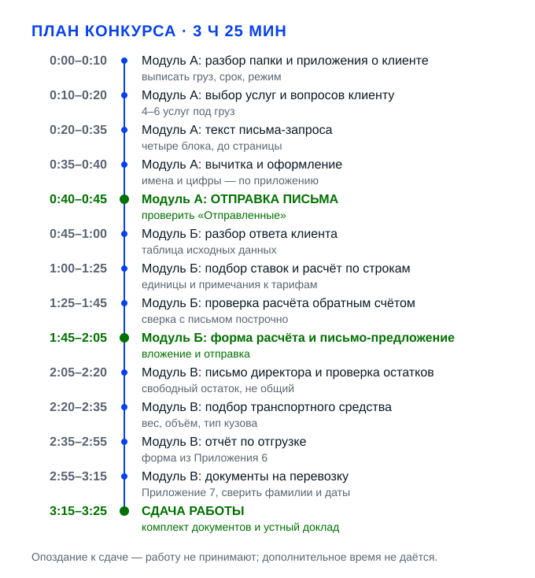
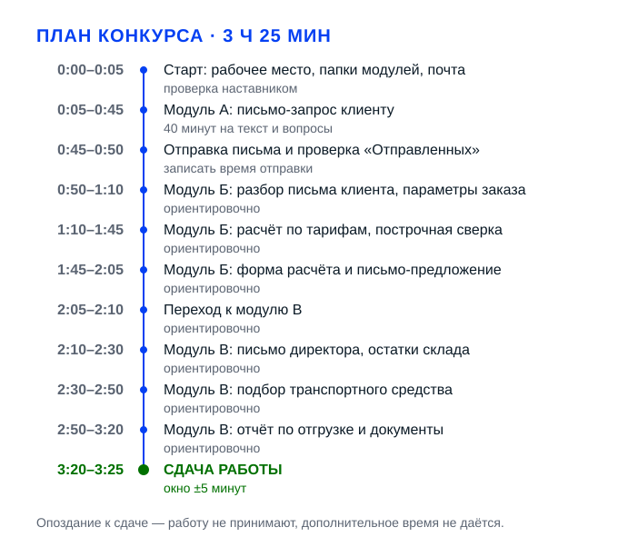
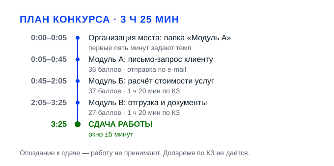

Управление складированием (Р)
Задания ниже — официальные файлы «Абилимпикс» (источник: abilympics-russia.ru), разложенные по категориям. Решения написаны по тексту задания, регламенту и критериям оценки; в них указано, что именно проверяет эксперт.
Школьник
14–16 лет, базовый уровень заданияВыдержка из официального конкурсного задания: страницы, относящиеся к категории «Школьник» (стр. 5–8 источника).
Пошаговое решение
Компетенция «Управление складированием» в категории «Школьники» — это три модуля подряд и 3 часа 25 минут: 45 минут на письмо-запрос потенциальному клиенту, 1 час 20 минут на расчёт стоимости складских услуг и ещё 1 час 20 минут на организацию отгрузки товара со склада. Техника простая: компьютер, папки с приложениями на рабочем столе, внимательность к цифрам и умение писать деловые письма. Ошибки почти всегда однотипные — взята не та строка тарифа, перепутаны единицы измерения, забыт налог, письмо уходит без вложения, в отчёте по отгрузке стоит заявленное количество вместо фактического. Поэтому решение построено по одной схеме: разобрать материалы и выписать исходные данные, посчитать, оформить документы, сдать. Каждый шаг ниже — действие с проверкой: что сделать, зачем, как убедиться и где обычно ломается. Модули идут строго по порядку, дополнительного времени на сдачу не дают.

Задача 1. Разложить материалы и понять клиентаМодуль А · 45 минут
Модуль А — самый короткий в задании: на всё про всё 45 минут, и в них входит и чтение приложения о компании-клиенте, и выбор услуг склада, и само письмо, и отправка по электронной почте. Поэтому первые десять минут уходят не на текст, а на порядок: открыть папку «Модуль А» на рабочем столе, понять, что в ней лежит, выписать из приложения факты о клиенте и только после этого садиться за письмо. Участник, который сразу начинает печатать «Здравствуйте, предлагаем услуги склада», почти всегда получает общее письмо без единой привязки к грузу клиента — а именно эта привязка и оценивается.
Действие 1.1. Открыть и разобрать папку «Модуль А»
Шаг 1.1.1
Открываем на рабочем столе папку «Модуль А» и сначала просто перечисляем, что в ней лежит: приложение с информацией о компании-потенциальном клиенте, форма письма или требования к нему, адрес электронной почты, на который письмо отправляется. Ничего не открываем в спешке — проходим по файлам по очереди и называем вслух, что это за документ и зачем он нужен. Если в папке есть файл с названием вроде «Требования» или «Памятка», читаем его первым: там обычно написано, что именно должно быть в письме и как его оценивают.
Задание устроено так, что все материалы модуля лежат в одной папке, и потерять документ можно только по невнимательности. На 45 минут модуля приходится чтение приложения, выбор услуг, текст письма и отправка — если первые пять минут уйдут на поиск нужного файла, дальше вы будете догонять и обязательно что-то сократите. Порядок в материалах — это половина результата в этом модуле.
Вы можете назвать по памяти, сколько файлов в папке и что в каждом. Все документы открыты хотя бы по разу, ни один не остался «на потом». Убедитесь, что вы видите адрес получателя и понимаете, куда именно уйдёт письмо.
Самая частая ошибка — открыть первый файл, увидеть знакомое слово «письмо» и начать писать, не заметив приложения с описанием клиента. В итоге письмо уходит «в пустоту», без привязки к грузу, и теряются баллы за адресность коммерческого предложения. Вторая ошибка — работать прямо в исходном файле и затереть шаблон.
Эксперт подходит к рабочему месту в первые минуты модуля и смотрит, открыта ли папка модуля, читает ли участник приложение или сразу печатает. Спокойный разбор материалов виден сразу и настраивает оценку в вашу пользу.
Шаг 1.1.2
Читаем приложение о компании-клиенте целиком, один раз без ручки, чтобы понять общую картину: чем компания занимается, откуда возит товар, что собирается хранить. Второй раз читаем с карандашом и выписываем на лист или в отдельный текстовый файл шесть вещей: название компании, город и адрес, сферу деятельности, что за груз, примерный объём или количество, сроки и особые требования вроде температуры, хрупкости или опасности. Каждую цифру выписываем вместе с единицей измерения — паллеты, тонны, короба, месяцы.
Письмо-запрос оценивается не за красивые слова, а за то, попали ли вы в потребность конкретного клиента. Пока факты о нём разбросаны по тексту приложения, вы будете писать общими фразами. Выписанные в одном месте, они превращаются в четыре-пять конкретных вопросов, и письмо сразу становится адресным.
На листе или в файле не меньше шести строк, у каждой цифры есть единица измерения, и ни один факт из приложения не остался непонятым. Проверьте себя: закройте приложение и назовите вслух, что и на какой срок клиент собирается хранить. Если получается сбивчиво — перечитайте абзац про груз.
Типичная ошибка — выписать только название компании и сферу, а груз и объём пропустить: именно на них строятся вопросы, и без них письмо становится рекламой склада вообще. Вторая ошибка — выписывать цифры без единиц и потом путать короба с паллетами уже в модуле Б.
Эксперт может попросить показать, где в приложении написано про груз и срок. Участник, который ориентируется в документе, отвечает сразу; тот, кто читал по диагонали, начинает листать заново.
Шаг 1.1.3
Готовим рабочее место под текст: открываем текстовый редактор, создаём новый файл и сразу сохраняем его в свою папку с понятным именем — например, «Письмо_запрос_Фамилия». Настраиваем то, что экономит время: шрифт 11–12 пунктов, поля по два сантиметра, проверку орфографии включённой, а автоматические замены и «умные кавычки» выключенными, чтобы адрес почты и реквизиты не превращались в ссылки с подчёркиванием.
Письмо должно быть оформлено как деловой документ, а не как сообщение в мессенджере: одинаковый шрифт, ровные абзацы, отсутствие случайных заглавных букв. Настройка редактора занимает минуту в начале и экономит пять минут в конце, когда править форматирование уже некогда.
Файл сохранён в вашей папке, шрифт единый по всему документу, орфография подчёркивает слова, автозамены не срабатывают на адресах. Проверьте, что имя файла не содержит пробелов в начале и кириллицы в расширении.
Работать в черновике почтового клиента без сохранения — опасно: случайное закрытие окна стирает текст, а восстановить его в условиях конкурса нечем. Вторая ошибка — оставить включённой автозамену, из-за которой «--» превращается в длинное тире, а адрес почты становится гиперссылкой.
Эксперт смотрит на итоговый файл, но если проходит мимо в начале модуля, видит, сохраняет ли участник работу. Привычка сохранять по ходу — часть оценки организации труда.
Действие 1.2. Определить, что нужно этому клиенту
Шаг 1.2.1
По выписанным фактам определяем тип груза и его требования к складу. Смотрим на три вещи: как груз хранится (штабелем, на паллетах, на стеллажах, в отдельной зоне), какой ему нужен режим (обычный, температурный, влажностный, отдельная зона для опасных или пахучих товаров) и какие операции с ним делают (только хранение, комплектация заказов, маркировка, переупаковка, отгрузка мелкими партиями). Каждое требование записываем рядом с той услугой склада, которая его закрывает.
Из этого сопоставления рождается вся содержательная часть письма: не список из двадцати услуг «на всякий случай», а четыре-шесть, каждая из которых отвечает на конкретную потребность клиента. Оценивается именно релевантность предложения, а не количество перечисленного.
На листе получилась связка «требование клиента — услуга склада», и каждая услуга опирается на факт из приложения. Если какая-то услуга не находит требования, её место в письме под вопросом. Покажите эту связку эксперту, если он спросит, почему в письме именно эти услуги.
Перечислить все услуги склада подряд, потому что «пусть клиент сам выберет»: такое письмо читается как рекламный буклет и не отвечает на вопрос, зачем это нужно именно этому грузу. Обратная ошибка — сузить предложение до одного хранения, пропустив комплектацию или маркировку, которые клиенту явно нужны.
Эксперт сверяет письмо с приложением о клиенте: попали ли упомянутые услуги в его потребности. Это первое, что он проверяет, открывая письмо. Если услуги в письме не соотносятся с приложением, он читает предложение как общее, без адресата.
Шаг 1.2.2
Отдельно проговариваем то, что клиент в приложении не написал, но что из его слов следует. Если товар сезонный — значит, нужен разный объём площади в разные месяцы. Если товар идёт в торговую сеть — значит, важна комплектация по заказам и отгрузка мелкими партиями. Если товар с коротким сроком годности — значит, нужен учёт партий и отпуск по правилу «первым пришёл — первым ушёл». Эти выводы потом превращаются в вопросы клиенту.
Сильное коммерческое предложение показывает, что вы поняли бизнес клиента, а не просто прочитали его письмо. Именно на таких выводах строится вторая часть модуля: клиент отвечает на вопросы, и от качества вопросов зависит, хватит ли вам данных для расчёта в модуле Б.
К каждому требованию из приложения добавился хотя бы один вывод, которого в тексте прямо не было. Проверьте, что выводы не противоречат друг другу и не придумывают клиенту того, чего в приложении нет.
Домыслить за клиента лишнее — например, решить, что ему нужен температурный режим, когда об этом ни слова: в письме появляются услуги, которых он не просил, и он отвечает «это нам не нужно». Правильнее вынести догадку в вопрос, а не в утверждение.
Эксперт ценит, когда участник отделяет факты приложения от своих выводов: в письме это видно по формулировкам «если я правильно понял» и «уточните, пожалуйста».
Шаг 1.2.3
Формулируем короткое описание склада — три-четыре предложения, которые пойдут в письмо. В них входит то, что важно для этого груза: где находится складской комплекс, какая площадь и какие зоны (стеллажное хранение, напольное, температурные камеры), как организован учёт (адресное хранение, по партиям), какой режим работы и какие операции выполняются внутри. Пишем конкретно: не «современный склад», а «склад класса А в черте города, стеллажное хранение на пять ярусов, отдельная зона для товаров с коротким сроком годности».
Описание склада — обязательный элемент письма по заданию, и оно же создаёт доверие. Общие слова вроде «широкий спектр услуг» и «индивидуальный подход» эксперт не засчитывает: они ничего не сообщают о складе и подходят к любой компании. Три конкретных факта читаются как описание склада, три эпитета — как реклама.
В описании есть минимум три проверяемых факта: расположение, тип хранения, режим работы. Уберите из текста все прилагательные и посмотрите, осталась ли информация — если остались только «качественно» и «надёжно», описание надо переписать.
Переписать рекламный текст с сайта склада целиком: он длинный, в нём нет привязки к грузу клиента, и на его чтение уходит время, которого в модуле нет. Вторая ошибка — придумать складу характеристики, которых нет в материалах задания: расхождение всплывёт в модуле Б, когда тарифы не совпадут с возможностями.
Эксперт ищет в описании факты, а не эпитеты. Если в письме написано «мы лучшие на рынке», он не засчитывает это как описание склада. Отдельно он смотрит, есть ли расположение склада и режим работы: без них описание считается неполным.
Действие 1.3. Распределить 45 минут модуля
Шаг 1.3.1
Раскладываем 45 минут модуля А на пять отрезков и записываем их на лист: 10 минут на разбор папки и приложения о клиенте, 10 минут на выбор услуг и формулировку вопросов, 15 минут на текст письма, 5 минут на вычитку и оформление, 5 минут на отправку и проверку папки «Отправленные». Отрезки именно в таком порядке: текст пишется последним из содержательных шагов, потому что к нему уже есть готовые формулировки услуг и вопросов.
Модуль А — единственный, где время измеряется сорока пятью минутами на всё: чтение, придумывание, текст и отправку. Без плана участник тратит двадцать пять минут на первый абзац, потом пишет вопросы наспех и не успевает отправить письмо, а без отправки модуль не засчитывается вообще.
Пять отрезков записаны с временем начала и конца, и в сумме они дают ровно 45 минут. Проверьте по часам на экране, во сколько вы начали модуль, и поставьте себе время отправки — например, за пять минут до конца.
Планировать «на глаз», без часов: на конкурсе время уходит незаметно, потому что работа текстовая. Вторая ошибка — оставить отправку на последнюю минуту, когда почтовый клиент тормозит и вложение не успевает загрузиться.
Эксперт видит, следит ли участник за временем: те, кто поглядывает на часы и укладывается в отрезки, сдают письма вовремя и без спешки. План, записанный на листе, он тоже видит и оценивает как часть организации работы.
Шаг 1.3.2
Ставим себе две контрольные точки. Первая — к десятой минуте у вас на листе выписаны факты о клиенте и список услуг. Вторая — к двадцать пятой минуте в редакторе есть готовый черновик со всеми четырьмя блоками, пусть и с шероховатостями. Проходим точки по часам, а не по ощущению: если к двадцатой минуте черновика нет, сокращаем описание склада до трёх предложений и переходим к вопросам, потому что вопросы важнее красоты.
Контрольные точки — это способ заметить отставание, пока его ещё можно исправить. На двадцать пятой минуте у вас есть двадцать минут на вычитку и отправку, и даже слабый черновик доделывается; на сороковой минуте уже ничего не спасти. Поэтому контрольные точки ставят по часам, а не по самочувствию.
К обеим точкам вы прошли вовремя или осознанно сократили текст, чтобы уложиться. Проверьте по часам: если до первой точки осталось две минуты, а приложение ещё не открыто — начинайте читать быстрее и выписывайте только груз, срок и режим.
Застрять на описании склада и переписывать его пять раз: именно этот блок кажется самым важным, а оценивается он наравне с вопросами. Вторая ошибка — заметить отставание, но продолжать в том же темпе.
Эксперт обходит рабочие места в середине модуля: если у участника к этому моменту пустой экран, он отмечает риск не успеть, и дальше оценивает работу как неполную.
Шаг 1.3.3
Оставляем резерв в пять минут и тратим его только на две вещи: проверку адресата и отправку. Если резерв не понадобился — используем его на вычитку вопросов: перечитываем их и убираем те, на которые клиент уже ответил в приложении. После отправки фиксируем время и закрываем модуль: не начинаем заново переписывать письмо, потому что второе письмо клиенту не нужно и времени на него нет.
Резерв нужен потому, что отправка — единственный шаг, который нельзя сделать быстрее: почтовый клиент загружает вложение, сеть может подвиснуть, адрес может оказаться с опечаткой. Пять минут спокойной отправки стоят дороже, чем ещё один абзац в письме.
Письмо отправлено до конца модуля, в запасе осталось хотя бы две минуты, папка «Отправленные» проверена. Проверьте, что время отправки в письме раньше времени окончания модуля. Если до конца модуля осталось меньше минуты, отправляйте письмо сразу, без последней вычитки.
Потратить резерв на правку стиля и отправлять в последние тридцать секунд: любая заминка с сетью — и письмо остаётся в черновиках. Вторая ошибка — отправить письмо и начать писать второе, более удачное, вместо того чтобы переходить к модулю Б.
Эксперт фиксирует время отправки. Письмо, ушедшее после окончания модуля, он не засчитывает, даже если текст хороший. Ему важно и то, что письмо ушло на верный адрес: он сверяет его с заданием.
Задача 2. Написать и отправить письмо-запросМодуль А · 45 минут
Письмо-запрос — это деловое письмо, а не реклама: вы одновременно представляете склад и задаёте вопросы, ответы на которые понадобятся вам же в модуле Б. Поэтому текст строится в три блока — короткое описание склада и услуг под потребность клиента, пять-семь конкретных вопросов о грузе и операциях, корректное завершение с приглашением к ответу. Оценивается всё вместе: и содержание, и оформление, и сам факт отправки на указанный адрес. Здесь же решается судьба следующего модуля: чем точнее вопросы, тем понятнее будет заказ, который вы придёте считать.
Действие 2.1. Собрать каркас письма
Шаг 2.1.1
Начинаем с темы письма — её придумывают до текста, а не после. В теме пишем суть и название: «Предложение по хранению товара на складе для компании «Ромашка»» или «Размещение вашего груза на складе — уточнение параметров». Длина — до восьми слов, без заглавных букв через одну, без восклицательных знаков и без слов «Срочно», «Важно», «Коммерческое предложение №1». Тема должна читаться в списке входящих и сразу объяснять, о чём письмо.
По правилам деловой переписки тема — единственное, что видит адресат до открытия письма. Пустая тема или тема вида «Здравствуйте» резко снижает шанс, что письмо прочитают, а на конкурсе оценивается именно умение вести деловую переписку. Кроме того, осмысленная тема помогает эксперту быстро понять, о каком клиенте речь.
Тема умещается в одну строку, содержит название компании-клиента и предмет письма, не дублирует текст первой фразы. Проверьте: если тема обрезана в списке писем после пятого слова, сократите её. Проверьте тему на постороннем человеке: он должен понять её без открытия письма.
Написать в теме «Предложение» или «Сотрудничество» — такие письма читают в последнюю очередь. Вторая ошибка — скопировать тему из шаблона вместе с чужим названием компании, это сразу выдаёт небрежность.
Эксперт смотрит тему в момент, когда участник отправляет письмо, и сверяет её с содержанием. Несовпадение темы и текста отмечается отдельно. Он также смотрит, нет ли в теме лишних знаков препинания и слов вроде «срочно».
Шаг 2.1.2
Пишем обращение и представление. Если в приложении указаны фамилия, имя и отчество адресата — обращаемся по имени и отчеству: «Уважаемая Ирина Петровна». Если известно только название компании и должность — «Уважаемые коллеги» или «Уважаемый господин директор». Дальше одна-две фразы о себе: название складского комплекса, ваша роль (менеджер по работе с клиентами), и откуда вы узнали о компании — например, что получили запрос на подбор условий хранения.
Обращение по имени — самый дешёвый способ показать, что письмо адресное, а не рассылка. Ошибка в имени или отчестве, наоборот, перечёркивает всё впечатление, поэтому имя переписываем из приложения буква в букву, а не по памяти. Кроме того, обращение по имени задаёт тон всему письму, и дальше текст пишется ровнее.
Имя и должность совпадают с приложением посимвольно, обращение стоит в первой строке и выделено запятой. В представлении нет больше двух предложений — длинное представление отодвигает суть. Убедитесь, что должность адресата записана так же, как в приложении.
Написать «Уважаемый клиент» при том, что имя в приложении есть, — участник теряет баллы за адресность. Вторая ошибка — перепутать отчество или сократить имя до инициала, что в деловом письме выглядит небрежно.
Эксперт сверяет обращение с приложением о клиенте. Это одна из первых проверок при оценке письма. Если в приложении есть имя, а в письме обращение «Уважаемый клиент», он отмечает это как потерю адресности.
Шаг 2.1.3
Собираем каркас из четырёх блоков и держим его перед глазами, пока пишем: описание склада и услуг под конкретный груз, вопросы клиенту, завершение с приглашением ответить и предложением созвониться, подпись с контактами. Каждый блок — отдельный абзац, между блоками пустая строка. Общий объём — примерно от половины до одной страницы: короче — не хватает содержания, длиннее — письмо не дочитывают.
Каркас спасает от самой распространённой ошибки модуля А: письмо начинают с описания склада, увлекаются и заканчивают на середине, забыв вопросы. Без вопросов клиент не может ответить, а без ответа не будет данных для расчёта — модуль Б повиснет. Каркас же позволяет вернуться к любому блоку и дописать его, не перечитывая письмо целиком.
В черновике видны все четыре блока, у каждого есть хотя бы одно предложение, и вопросы не растворились в тексте. Посчитайте абзацы: их должно быть от четырёх до шести. Если блоков меньше четырёх, значит, один из них потерялся при наборе текста.
Написать один сплошной абзац на всю страницу — читать его невозможно, а эксперту приходится искать вопросы. Обратная ошибка — сделать из письма анкету из одних вопросов без описания склада: тогда не выполнена первая часть задания.
Эксперт оценивает структуру: есть ли описание услуг, есть ли вопросы, есть ли корректное завершение. Письмо без одного из блоков теряет баллы целиком, а не частично.
Действие 2.2. Сформулировать вопросы клиенту
Шаг 2.2.1
Первый блок вопросов — про сам груз. Спрашиваем наименование и ассортимент, тип упаковки (короб, паллета, мешок, бочка), габариты единицы груза и вес, количество паллет или коробов в партии, есть ли негабарит или тяжёлые позиции. Формулируем так, чтобы на вопрос можно было ответить цифрой: не «расскажите о вашем товаре», а «уточните, пожалуйста, сколько паллет занимает месячный объём и какова высота паллетирования».
Из этих ответов в модуле Б вырастет расчёт: объём хранения считается в паллето-местах или квадратных метрах, погрузка — в паллетах или тоннах, комплектация — в строках заказа. Если вопрос сформулирован расплывчато, ответ тоже будет расплывчатым, и считать придётся по догадке.
На каждый вопрос можно ответить числом или коротким перечислением, и в вопросах покрыты вес, объём, упаковка и количество. Проверьте, нет ли двух вопросов об одном и том же разными словами. Хороший признак — если по вопросам можно набросать таблицу расчёта ещё до ответа клиента.
Спросить «какой у вас груз?» и остановиться на этом: ответ «разный» не даёт ничего. Вторая ошибка — сразу спрашивать про сроки и тарифы, пропустив физические характеристики груза, без которых тариф не выбрать.
Эксперт читает вопросы и оценивает их конкретность: можно ли по ним составить расчёт. Вопросы «ни о чём» он отмечает как слабую часть письма. Он также смотрит, не спрашивает ли участник то, что уже есть в приложении.
Шаг 2.2.2
Второй блок — про режим хранения и сроки. Спрашиваем, на какой срок планируется размещение и будет ли объём меняться по месяцам, нужен ли температурный режим и какой именно, есть ли товары с коротким сроком годности и нужно ли учитывать партии и даты, требуется ли отдельная зона для товаров с запахом или для опасных грузов. Здесь же уточняем, как часто планируются отгрузки — ежедневно, раз в неделю или крупными партиями по графику.
Срок и режим — вторая половина тарифа. Хранение почти всегда считается за сутки или за месяц на единицу ёмкости, поэтому без срока невозможно посчитать итог, а без режима можно выбрать неверную ставку — обычную вместо температурной. Частота отгрузок определяет, сколько раз оплачивать погрузо-разгрузочные работы.
В вопросах есть срок, режим и частота отгрузок, и на каждый можно ответить одной фразой. Проверьте, что вопросы не предполагают ответа «да/нет» там, где нужна цифра: «нужен ли вам температурный режим» лучше заменить на «какой температурный режим требуется».
Задать десять вопросов про режим и ни одного про срок — половина расчёта останется без исходных данных. Вторая ошибка — спрашивать про то, чего у клиента заведомо нет, например про опасные грузы для кондитерской фабрики: это показывает, что приложение не прочитано.
Эксперт сверяет вопросы с приложением: не спрашивает ли участник о том, что уже написано, и не пропустил ли то, чего в приложении нет. Ответы на эти вопросы он сопоставляет с тарифами: под каждый режим есть своя ставка.
Шаг 2.2.3
Третий блок — про операции и документы. Уточняем, какие операции нужны кроме хранения: приёмка с пересчётом, комплектация заказов, маркировка и переупаковка, отгрузка, возвраты, инвентаризация. Спрашиваем, кто оформляет транспортные документы и работает ли клиент по электронному документообороту, нужны ли погрузка силами склада или клиент привозит свой транспорт, и на чьей стороне страхование груза. Заканчиваем просьбой указать контактное лицо для согласования расчёта.
Каждая операция — отдельная строка в форме расчёта и отдельная ставка в тарифах, поэтому пропущенная операция означает недосчитанную сумму, а лишняя — завышенное предложение, которое клиент не примет. Вопрос про контактное лицо нужен, чтобы письмо с расчётом ушло тому, кто принимает решение.
Все операции, которые склад умеет делать, прошли через вопросы, и ни одна не спрашивается дважды. Контакт для ответа запрошен явно, а не подразумевается. Проверьте, что вопросы пронумерованы и на каждый можно ответить одной строкой.
Свести все вопросы к одному «что вам нужно от склада» — клиент ответит общими словами и не назовёт операции, а вы в модуле Б будете угадывать, входит ли комплектация в запрос. Вторая ошибка — не спросить про документы и потом в модуле В заполнять накладные наугад.
Эксперт смотрит на полноту охвата: груз, срок, режим, операции, документы, контакт. Пять блоков из шести — это уже заметная потеря. Он также отмечает, есть ли вопрос про сроки и про контактное лицо: без них письмо не доводит дело до расчёта.
Действие 2.3. Оформить и отправить письмо
Шаг 2.3.1
Оформляем текст по правилам деловой переписки: один шрифт на весь документ, кегль 11–12, выравнивание по левому краю без растягивания по ширине, абзацный отступ или пустая строка между абзацами, но не оба сразу. Заглавными буквами не пишем целые фразы, восклицательных знаков не ставим, смайликов и сокращений вроде «спс» и «ок» не используем. Вопросы нумеруем арабскими цифрами — так на них удобно отвечать по пунктам, и это же помогает не потерять ни одного.
Оформление — отдельный критерий оценки письма, и оно проверяется быстрее, чем содержание: достаточно взглянуть на лист. Нумерованные вопросы экономят время клиенту и эксперту, а значит, повышают шанс, что письмо дочитают до конца. Кроме того, ровный текст без выделений легче вычитывать, а на вычитку в модуле остаётся пять минут.
Шрифт и кегль одинаковы во всём тексте, абзацы разделены, вопросы пронумерованы подряд без пропусков. Распечатайте мысленно лист: он должен выглядеть как документ компании, а не как заметка. Проверьте, что после вставки текста из другого файла не осталось цветных ссылок и разных кеглей.
Скопировать текст из интернета вместе с чужим форматированием: в письме появляются разные шрифты, цветные ссылки и разрывы. Вторая ошибка — писать всё заглавными «чтобы заметили»: в деловой переписке это читается как крик.
Эксперт оценивает внешний вид письма при первом просмотре. Неровный шрифт и случайные выделения он отмечает как нарушение требований к оформлению. Он смотрит и на длину строк: слишком широкий текст читать неудобно, и это видно сразу.
Шаг 2.3.2
Вычитываем письмо дважды. Первый раз — на ошибки: запускаем проверку орфографии и пунктуации, читаем вслух, ловим пропущенные слова и повторы. Второй раз — на факты: сверяем имя и должность адресата, название компании клиента, название своего склада, все цифры и единицы. Отдельно проверяем, не осталось ли в тексте следов шаблона — чужого названия, квадратных скобок, фразы «[вставьте название]».
Одна опечатка в названии компании или ошибка в фамилии адресата стоит дороже, чем весь остальной текст: адресат делает вывод о том, как вы будете обращаться с его грузом. А следы шаблона — прямой признак небрежности, который эксперт фиксирует сразу. К тому же письмо с опечаткой в названии компании клиента он читает как невнимательное ко всему заказу.
Проверка орфографии не подчёркивает ни одного слова, названия и фамилии совпадают с приложением, квадратных скобок и чужих названий в тексте нет. Прочитайте письмо с последней строки к первой — так видны пропущенные слова.
Полагаться только на автопроверку: она не видит ошибок в согласовании и не ловит неверно написанную фамилию. Вторая ошибка — оставить в тексте название компании из шаблона, что на конкурсе выглядит особенно заметно.
Эксперт читает письмо целиком и отмечает грамотность отдельным пунктом. Следы шаблона он воспринимает как незавершённую работу. Если ошибок больше двух-трёх, он снижает оценку за грамотность целиком, а не за каждую.
Шаг 2.3.3
Открываем почтовый клиент, в поле «Кому» вставляем адрес из папки модуля и сверяем его с исходником посимвольно — особенно домен и точку перед ним. Тему копируем из заголовка письма, текст вставляем без форматирования, чтобы не тянуть стили. Если по заданию требуется вложение, прикрепляем файл и ждём, пока он загрузится. Перед отправкой ставим себе копию, чтобы потом доказать факт отправки, и только после этого нажимаем «Отправить».
Задание прямо требует направить письмо клиенту по электронной почте, то есть оценивается не только текст, но и сама отправка на указанный адрес. Ошибка в домене означает, что письмо ушло не туда, а копия себе — единственное подтверждение, которое у вас останется.
В папке «Отправленные» есть письмо с верной темой, адресатом и вложением, время отправки укладывается в модуль. Убедитесь, что вложение открывается и это именно та версия файла, а не черновик. Проверьте также, что письмо не попало в спам и не осталось в черновиках.
Отправить письмо без вложения, если оно требуется, или с пустым полем темы — формально задание не выполнено. Вторая ошибка — отправить письмо в последнюю минуту и не успеть проверить адрес, из-за чего оно уходит на чужой ящик.
Эксперт проверяет папку «Отправленные» и сверяет адрес с заданием. Отправка — обязательное условие зачёта модуля, без неё письмо не считается сданным.
Задача 3. Разобрать заказ и посчитать стоимость услугМодуль Б · 1 час 20 минут
Модуль Б — расчётная часть: 1 час 20 минут на то, чтобы прочитать ответ клиента, перевести его слова в единицы тарифов, посчитать каждую операцию и свести всё в итог. Логика работы простая и жёсткая: сначала таблица исходных данных, потом сопоставление с тарифами, потом арифметика, потом проверка обратным счётом. Тот, кто начинает считать сразу в форме расчёта, к третьей строке путает сутки с месяцем, а паллето-места с коробами, и найти эту ошибку потом почти невозможно.
Действие 3.1. Перевести ответ клиента в исходные данные
Шаг 3.1.1
Открываем Приложение 1 из папки «Модуль Б» — ответное письмо клиента — и читаем его дважды. Первый раз целиком, чтобы понять, что именно заказано. Второй раз с карандашом: выписываем в черновую таблицу каждую позицию отдельной строкой — наименование груза, количество (в тех единицах, в которых написал клиент), срок хранения, требуемый режим и перечень запрошенных операций. Рядом с каждой цифрой пишем единицу и источник: «из письма, абзац 2».
Ответ клиента — единственный источник данных для расчёта, и всё, что не выписано, придётся искать заново в середине работы. Пока данные разбросаны по абзацам, вы считаете по памяти, а память на третьей позиции подводит: цифры похожи, единицы разные. К тому же при разборе письма сразу видно, где данных не хватает и что придётся принять как допущение.
В таблице столько строк, сколько позиций в письме, и ни одна цифра не осталась только в тексте. Сверьте количество строк с количеством абзацев про груз — обычно их столько же. Если строк больше, чем абзацев, проверьте, не разбита ли одна позиция на две.
Читать письмо по диагонали и считать «в целом по всему грузу»: тогда в расчёт не попадает отдельная позиция с другим режимом хранения, и итог занижается. Вторая ошибка — выписать только количества, забыв срок: без срока хранение не считается.
Эксперт сверяет форму расчёта с письмом клиента построчно: все ли позиции на месте. Пропущенная позиция — самая заметная ошибка модуля. Он также смотрит, совпадают ли названия грузов в форме и в письме: переименование он считает ошибкой.
Шаг 3.1.2
Переводим данные клиента в те единицы, в которых заданы тарифы. Если клиент пишет «двадцать коробов на двух паллетах», а тариф за паллето-место в сутки — считаем паллеты, а коробы оставляем для комплектации. Если груз дан в тоннах, а тариф за квадратный метр, переводим через нагрузку на пол: узнаём из характеристик груза или тарифов, сколько тонн допускается на квадратный метр, и делим. Каждый пересчёт записываем отдельной строкой с формулой, чтобы потом можно было проверить.
Тарифы заданы за конкретную единицу — паллето-место, тонну, квадратный метр, короб, строку заказа, машину. Если подставить количество в других единицах, сумма получится правдоподобной и совершенно неверной, а внешне расчёт будет выглядеть аккуратно. Проверить себя можно так: подставьте единицу тарифа в вопрос «сколько стоит один …» — фраза должна звучать осмысленно.
У каждой строки расчёта единица совпадает с единицей тарифа, и каждый пересчёт записан формулой, а не готовым числом. Проверьте: если в строке стоит «0,4», а непонятно, чего именно 0,4 — пересчёт недоделан.
Подставить коробы вместо паллет, потому что «их больше и сумма солиднее»: итог отличается в разы, и клиент такое предложение отклонит. Вторая ошибка — считать тонны как квадратные метры, не проверив нагрузку на пол.
Эксперт смотрит именно на соответствие единиц: это первый признак, по которому видно, понимает ли участник, что считает. Отдельно он проверяет пересчёты: если они не записаны, проверить расчёт он не может.
Шаг 3.1.3
Проверяем, все ли операции названы и нет ли операций, которые склад выполняет по умолчанию. Кроме хранения обычно нужны приёмка груза на склад, погрузо-разгрузочные работы, комплектация заказов, маркировка, отгрузка. Отдельно смотрим, что клиент написал про возвраты, пересчёт при приёмке, паллетирование и утилизацию упаковки. Если в письме операция названа бытовым словом — «соберите нам заказы по магазинам», — переводим её в складской термин: комплектация.
Недосчитанная операция — потерянная выручка и заниженный итог, а лишняя операция — завышение, из-за которого клиент уйдёт к конкуренту. Обе ошибки в конкурсном задании считаются ошибками расчёта, потому что форма расчёта должна соответствовать запросу.
Список операций в черновике совпадает со списком в письме клиента, и каждая операция названа складским термином. Проверьте: для каждой операции вы можете показать место в письме, где она запрошена. Удобно подчёркивать эти места в письме карандашом по мере сверки.
Считать только хранение, потому что «остальное мелочь»: в складских расчётах погрузка и комплектация часто составляют половину суммы. Вторая ошибка — добавить услуги, которых клиент не просил, «для полноты».
Эксперт сверяет перечень операций с письмом. Полнота перечня — отдельный критерий правильности расчёта. Он также смотрит, названы ли операции складскими терминами, а не бытовыми словами.
Действие 3.2. Подобрать ставки тарифов
Шаг 3.2.1
Открываем Приложение 2 — тарифы компании — и выписываем себе только те строки, которые понадобятся: ставка за хранение (с указанием единицы и периода), приёмка на склад, погрузо-разгрузочные работы, комплектация, маркировка, отгрузка. Каждую ставку переписываем вместе с единицей измерения и условием применения: «за паллето-место в сутки», «за тонну», «за машину», «за строку заказа». Рядом отмечаем, включён ли в ставку налог на добавленную стоимость.
В тарифной сетке обычно десятки строк, и половина к этому заказу не относится: температурное хранение, опасные грузы, негабарит. Выписывание только нужных строк экономит время и, главное, защищает от подстановки похожей ставки из соседней строки — самой частой ошибки в этом модуле.
В черновике не больше восьми ставок, и у каждой есть единица и период. Проверьте, что вы не переписали ставку для другого типа груза: у неё обычно другая единица или примечание в скобках. Если ставка вызывает сомнение, выпишите рядом обе строки и сравните условия применения.
Взять первую строку тарифа, похожую по названию: например, ставку для напольного хранения вместо стеллажного. Сумма получается другой, и объяснить её потом нечем. Вторая ошибка — не заметить примечание мелким шрифтом про минимальный срок хранения.
Эксперт проверяет, какие именно строки тарифа использованы. Ссылка на неверную строку — ошибка независимо от правильности арифметики. Он может спросить, почему выбрана эта строка, и ждёт ссылку на условие из тарифа.
Шаг 3.2.2
Разделяем ставки по типу начисления: периодические (за сутки или за месяц хранения) и разовые (за операцию, за машину, за документ). Периодические умножаем на количество единиц ёмкости и на число периодов хранения, разовые — на количество операций или машин. Если ставка задана за месяц, а срок хранения в днях, приводим срок к месяцам или считаем по фактическим суткам — но обязательно так, как написано в примечании к тарифу.
Смешение периодических и разовых ставок — вторая по частоте ошибка после путаницы единиц: участник умножает ставку за операцию на число суток и получает сумму в несколько раз больше реальной. Разделение на два столбца в черновике снимает этот риск полностью.
В черновике две группы ставок, и у каждой строки понятно, на что умножается: на сутки, на паллето-места, на машины, на строки заказа. Проверьте, что ни одна ставка не попала в обе группы. Удобно подписать столбцы «за сутки», «за операцию», «за машину» и раскладывать ставки по ним.
Умножить ставку за приёмку на количество суток хранения: итог вырастает в десятки раз и выглядит абсурдно. Вторая ошибка — считать хранение за месяц, когда в тарифе ставка за сутки. Третья ошибка — умножить разовую ставку на число позиций груза, а не на число операций.
Эксперт смотрит на структуру расчёта: разделены ли операции и хранение. Если всё свалено в одну строку, проверить расчёт невозможно, и это снижает оценку.
Шаг 3.2.3
Проверяем условия применения тарифов, которые стоят в примечаниях: минимальный срок хранения, минимальная партия, надбавка за негабарит или тяжёлые грузы, коэффициент за загрузку выше определённого яруса, скидка за объём. Если заказ попадает под условие, применяем его и записываем рядом: «применена минимальная партия 5 паллет, фактически 3». Если не попадает — тоже отмечаем, чтобы потом не сомневаться.
Примечания к тарифам часто меняют итог сильнее, чем сама ставка: минимальная партия добавляет две паллеты к трём, а надбавка за тяжёлый груз — до половины стоимости хранения. Именно на примечаниях теряются баллы, потому что их не читают. Кроме того, применённое условие нужно объяснить в письме клиенту, иначе сумма выглядит взятой с потолка.
Все примечания, относящиеся к заказу, прочитаны и применены или осознанно не применены. Проверьте, нет ли в тарифах отдельной таблицы коэффициентов — она часто идёт вторым листом. Если примечаний нет вовсе, отметьте это в черновике: значит, считаем по базовым ставкам.
Пропустить минимальную партию: посчитать три паллеты вместо пяти и занизить итог. Вторая ошибка — применить скидку за объём, не проверив, что заказ до неё дотягивает по количеству. Третья ошибка — применить надбавку за негабарит к обычному грузу «на всякий случай».
Эксперт проверяет применение примечаний выборочно: берёт одну позицию и смотрит, учтены ли условия. Одна пропущенная надбавка — минус балл за точность.
Действие 3.3. Посчитать стоимость по строкам
Шаг 3.3.1
Считаем хранение: количество единиц ёмкости умножаем на число суток (или месяцев) и на ставку. Считаем в таблице, а не в голове: три столбца — количество, период, ставка — и четвёртый с формулой. Если груз занимает разный объём в разные месяцы, разбиваем срок на отрезки и считаем каждый отдельно, а потом складываем. Отдельно проверяем, входят ли в ставку первые сутки приёмки и последние сутки отгрузки.
Хранение — основная часть суммы, и ошибка здесь искажает весь итог. Разбивка по отрезкам нужна потому, что объём хранения почти никогда не постоянен: товар приходит партиями и уходит партиями, а тариф считается по факту занятой ёмкости. К тому же разбивка по отрезкам показывает клиенту, за что именно он платит в каждом месяце.
Итог по хранению получен формулой, а не набран руками, и его можно пересчитать в обратную сторону: разделить на ставку и получить то же количество. Проверьте порядок величины: хранение одной паллеты в месяц не может стоить как автомобиль.
Считать хранение за весь срок по максимальному объёму: сумма завышается, и клиент видит, что его обсчитали. Вторая ошибка — забыть, что тариф за сутки, и умножить ставку на количество месяцев. Третья ошибка — не учесть, что часть срока товар занимал меньше места после отгрузки.
Эксперт пересчитывает одну строку хранения своим калькулятором. Совпадение до рубля — признак аккуратной работы. Если сумма расходится хотя бы на рубль, он просит объяснить строку.
Шаг 3.3.2
Считаем операции. Приёмку — по количеству машин или паллет, погрузо-разгрузочные работы — по количеству паллет или тонн, комплектацию — по числу строк заказа или собранных коробов, маркировку — по числу единиц, отгрузку — по числу машин. Каждую операцию отдельной строкой, с указанием количества и ставки, даже если операция выполняется один раз. Если операция повторяется в течение срока — умножаем на число повторов, а не считаем один раз.
Форма расчёта в Приложении 3 устроена построчно: наименование груза, список операций, ставка, итоговая сумма. Если операция посчитана «в уме» и вписана одной цифрой, проверить её нельзя, а эксперту приходится верить на слово — баллы за прозрачность расчёта теряются.
Число строк в расчёте совпадает с числом запрошенных операций, у каждой есть количество, ставка и сумма. Проверьте, что ни одна операция не посчитана дважды: приёмка и погрузка — разные строки, а не одна.
Сложить все операции в одну строку «услуги склада»: тогда непонятно, откуда взялась сумма, и любая проверка заканчивается пересчётом с нуля. Вторая ошибка — посчитать комплектацию за весь объём, хотя клиент заказывает её только для части товара.
Эксперт смотрит на детализацию: по строкам видно, понимает ли участник, за что берётся каждая ставка. Он также смотрит, не объединены ли приёмка и отгрузка в одну строку.
Шаг 3.3.3
Сводим итог: суммируем все строки, отдельно показываем сумму без налога, сумму налога и сумму с налогом, если тарифы даны без него. Проверяем, как в тарифах указан налог: если ставки уже включают его, второй раз не начисляем. Округляем до копеек по каждой строке, а не только в итоге, иначе сумма строк и итог разойдутся на несколько копеек, что в деловом документе выглядит как ошибка.
Итог — то, ради чего считался весь модуль, и он должен быть однозначным: клиент должен видеть, сколько платит с налогом и без. Двойное начисление налога или его отсутствие — грубая ошибка, которая сразу видна по несоответствию суммы и ставок. Кроме того, итог должен быть один: два разных итога в одном документе эксперт считает ошибкой оформления.
Сумма строк равна итогу до копейки, налог начислен один раз и по правильной ставке. Проверьте: если сложить все строки без налога, умножить на ставку налога и прибавить, должно получиться ровно то же число, что в итоговой строке.
Начислить налог на ставки, которые уже его включают, — итог завышается на пятую часть. Вторая ошибка — округлить каждую строку до рублей, из-за чего итог расходится с документом. Третья ошибка — забыть указать валюту, и сумма читается неоднозначно.
Эксперт проверяет итог и налог в первую очередь: это те числа, которые клиент увидит в письме. Он также сверяет итог с суммой строк: расхождение в копейках он тоже замечает.
Действие 3.4. Проверить расчёт до сдачи
Шаг 3.4.1
Проверяем обратным счётом: берём итог по хранению, делим на ставку и число суток — должно получиться исходное количество паллет. То же делаем с одной операцией: делим сумму на ставку и сверяем с количеством из письма. Затем пересчитываем весь расчёт вторым способом — не по строкам, а по группам: всё хранение отдельно, все операции отдельно, потом сумма групп.
Обратный счёт ловит именно те ошибки, которые не видны при прямом: перепутанную ставку, потерянный ноль, неверный период. Второй способ проверки нужен потому, что при повторном сложении тех же строк глаз повторяет ту же ошибку. К тому же проверка обратным счётом занимает минуты, а спасает весь модуль от переделки.
Обратный счёт даёт исходные числа, сумма групп совпадает с итогом. Если хотя бы одно не сходится — ищите ошибку в этой строке, а не переделывайте весь расчёт. Если расхождение есть в двух местах, ищите ошибку в ставке, а не в количестве.
Проверять расчёт «глазами», проглядывая строки: так пропускаются ошибки в единицах, потому что цифры выглядят привычно. Вторая ошибка — проверять только итог, не проверяя строки. Третья ошибка — проверять расчёт по тем же записям, по которым считали, и повторять ту же опечатку.
Эксперт тоже считает обратным счётом, когда сомневается в строке. Расчёт, который проходит такую проверку, он оценивает как точный. Он также смотрит, есть ли в черновике следы проверки: пометки, второй столбец сумм.
Шаг 3.4.2
Сверяем расчёт с письмом клиента ещё раз, но теперь в обратном порядке: берём каждую строку формы и ищем, где она упомянута в письме. Если строка есть в расчёте, но её нет в письме — это лишняя услуга; если есть в письме, но нет в расчёте — потерянная. Заодно проверяем названия груза: они должны совпадать с письмом дословно, а не «примерно так». Если строка не находится, выписывайте её отдельно и решайте: это лишняя услуга или потерянная.
Такая сверка занимает пять минут и закрывает целый класс ошибок: и пропущенные операции, и добавленные. Именно на ней чаще всего выясняется, что клиент просил маркировку, а в расчёт она не попала. К тому же сверка в обратном порядке ловит лишние строки, которые при прямом проходе кажутся уместными.
Каждая строка расчёта имеет соответствие в письме, и каждая позиция письма — строку в расчёте. Названия грузов совпадают посимвольно. Проверьте и артикулы, если они есть в письме: они тоже должны совпадать.
Ограничиться проверкой сумм, не сверяя состав услуг: арифметика сходится, а расчёт не соответствует запросу. Это самая обидная потеря баллов, потому что считается работой не по заданию. Третья ошибка — сверять по памяти, не открывая письмо: так пропускается как раз одна позиция.
Эксперт сверяет расчёт с письмом построчно. Несоответствие состава услуг он отмечает как ошибку содержания, даже если суммы верны. Он также смотрит, совпадают ли названия грузов дословно, а не по смыслу.
Задача 4. Заполнить форму расчёта и отправить предложениеМодуль Б · 1 час 20 минут
Расчёт в черновике и расчёт в форме — это два разных документа. Форма из Приложения 3 задаёт жёсткую структуру: строки для наименования груза, перечня операций, ставок и итоговых сумм, и заполнять её надо по этой структуре, ничего не переставляя. А затем расчёт нужно сопроводить письмом, в котором клиенту объясняют, из чего сложилась сумма и почему выбраны именно такие тарифы. Именно связка «форма плюс письмо с вложением» и есть результат модуля Б.
Действие 4.1. Заполнить форму расчёта
Шаг 4.1.1
Открываем Приложение 3 и сначала читаем шапку формы: что вписывается в верхние строки (номер расчёта, дата, клиент, период хранения), какие графы есть в таблице (груз, операция, единица, количество, ставка, сумма) и где стоит итог. Заполняем шапку и только потом переносим данные: одна позиция груза — один блок строк, внутри блока операции по порядку от приёмки к отгрузке. Структуру формы не меняем, столбцы не переставляем и не удаляем, даже если какая-то графа кажется лишней.
Форма задана в задании, и её структура — часть требований: расчёт должен быть оформлен именно в ней, а не в произвольной таблице. Порядок операций от приёмки к отгрузке соответствует реальному движению товара, и по нему эксперту проще проверять логику.
Шапка заполнена полностью, число блоков равно числу позиций груза в письме, операции внутри блока идут в технологическом порядке. Проверьте, что в форме нет пустых строк с нулями — они выглядят как незаполненные.
Переставить столбцы «под себя» или объединить операции в одну строку: форма перестаёт соответствовать приложению, и эксперт не может сопоставить её с образцом. Вторая ошибка — оставить незаполненной шапку, из-за чего расчёт нельзя идентифицировать.
Эксперт сравнивает заполненную форму с исходным Приложением 3: сохранена ли структура и все ли графы заполнены. Он также отмечает, заполнена ли шапка формы: без неё расчёт не идентифицировать.
Шаг 4.1.2
Считаем суммы прямо в форме формулами, а не вписываем готовые числа: в графе «сумма» ставим формулу «количество × ставка», в итоговой строке — сумму по столбцу. Ставку берём из тарифов и вписываем в отдельную графу, чтобы было видно, откуда она взялась. Если в форме есть графа для примечания, отмечаем там применённое условие — минимальную партию, надбавку или скидку.
Формулы дают две вещи сразу: они не дают ошибиться в арифметике и позволяют проверить расчёт, изменив одно число. Вписанные руками суммы при любой правке приходится пересчитывать целиком, а на это в модуле нет времени. К тому же формулы видно при проверке: эксперт открывает ячейку и понимает логику строки.
В каждой строке суммы стоят формулой, при выделении ячейки видно «количество × ставка», итог собран суммой по столбцу. Проверьте: измените количество в одной строке — сумма и итог должны пересчитаться сами.
Набрать суммы руками: при первой же правке количества итог перестаёт сходиться со строками, и в документе остаются несовпадающие числа. Вторая ошибка — вписать ставку числом, потеряв связь с тарифом, из-за чего невозможно проверить её источник.
Эксперт открывает форму и смотрит, формулы там или числа. Наличие формул он отмечает как владение инструментом. Если в ячейках стоят числа, он пересчитывает строку сам и сравнивает результат.
Шаг 4.1.3
Оформляем форму так, чтобы её можно было отправить клиенту: заголовок с названием складского комплекса и словом «Расчёт стоимости услуг», дата, единицы измерения в заголовках столбцов, денежные суммы с двумя знаками после запятой и с указанием валюты, итог выделен жирным. Проверяем, что таблица помещается на страницу по ширине и не разъезжается при печати: задаём область печати и проверяем предпросмотр.
Документ, который уходит клиенту, читают как официальное предложение: разъехавшаяся таблица и суммы без копеек выглядят как черновик. Оформление оценивается отдельно от арифметики, и это самые лёгкие баллы модуля. К тому же аккуратная форма читается быстрее, и эксперт успевает проверить больше строк.
Таблица помещается на одну страницу по ширине, все суммы имеют два знака после запятой, единицы указаны в заголовках, итог виден сразу. Откройте предпросмотр печати и убедитесь, что последний столбец не уехал на второй лист.
Растянуть таблицу на три страницы и не заметить, что итог оторвался от строк. Вторая ошибка — оставить суммы в рублях без копеек: расчёт перестаёт сходиться с тарифом, где ставка дана с копейками. Третья ошибка — оставить в форме технические заголовки вроде «Лист1» вместо названия расчёта.
Эксперт смотрит форму как готовый документ: заголовок, единицы, итог. Неряшливая вёрстка снижает оценку даже при верных цифрах. Он также смотрит, помещается ли таблица на страницу и не уехал ли итог на второй лист.
Действие 4.2. Написать письмо с объяснением тарифов
Шаг 4.2.1
Пишем письмо-предложение по структуре: благодарность за ответ и за уточнения, итоговая сумма одной фразой, короткое объяснение, из чего она сложилась — хранение за указанный срок, приёмка, комплектация, отгрузка, — затем два-три ключевых тарифа с единицами, далее примечания и допущения, и завершение со следующим шагом. Объём — до одной страницы. В первом абзаце называем клиента по имени и упоминаем его груз, чтобы письмо нельзя было спутать с рассылкой.
Задание прямо требует объяснить в письме выбранные тарифы, то есть показать логику, а не только цифру. Клиент, который видит, из чего сложилась сумма, соглашается быстрее и меньше торгуется — а на конкурсе это отдельный критерий качества письма. Кроме того, объяснение в письме защищает расчёт от вопросов: клиент видит логику, а не только цифру.
В письме есть итог, объяснение состава и хотя бы два тарифа с единицами измерения. Прочитайте письмо, не глядя в форму: понятно ли из него, за что платит клиент. Проверьте, что итог в письме совпадает с итогом в форме до копейки.
Написать «стоимость услуг составляет … рублей, подробности в приложении»: тарифы не объяснены, и требование задания не выполнено. Вторая ошибка — переписать в письмо всю таблицу целиком, из-за чего оно превращается в дубль вложения.
Эксперт читает письмо отдельно от формы и проверяет, объяснены ли тарифы. Это обязательный элемент модуля Б. Он также смотрит, названы ли в письме единицы измерения тарифов.
Шаг 4.2.2
Объясняем не только ставки, но и допущения, на которых построен расчёт: какой срок хранения принят, какой объём и в каких единицах, что включено в ставку, а что считается отдельно, применены ли минимальная партия и надбавки. Формулируем так, чтобы клиент мог проверить: «расчёт сделан исходя из 12 паллет и срока 30 суток, ставка хранения 0,00 за паллето-место в сутки, налог на добавленную стоимость включён». Если в данных была неопределённость — прямо пишем, какое значение приняли и почему.
Допущения — это то, что защищает расчёт от спора: если клиент имел в виду другой срок, он увидит, где расхождение, и поправит одну цифру, а не будет пересчитывать всё предложение. На конкурсе открыто названные допущения оцениваются как профессиональная честность расчёта.
Каждое допущение в письме совпадает с тем, что заложено в форме. Проверьте: если в письме написано «30 суток», в форме период тоже 30, а не 31. Проверьте и обратное: в форме нет ни одного допущения, о котором молчит письмо.
Умолчать о допущениях и выдать расчёт за окончательный: при первом же вопросе клиента выясняется, что считали не тот срок, и предложение приходится переделывать. Вторая ошибка — написать «стоимость может измениться» без указания, от чего она зависит.
Эксперт сверяет допущения в письме с формой расчёта. Расхождение он отмечает как несоответствие документов. Он также смотрит, названо ли допущение прямо, а не спрятано в примечании к таблице.
Шаг 4.2.3
Завершаем письмо предложением следующего шага: созвониться для уточнения, подписать договор, поставить груз на приёмку в конкретную неделю. Показываем вариант — например, что при увеличении срока до трёх месяцев ставка хранения ниже, или что при отказе от маркировки сумма уменьшается на конкретную величину. Заканчиваем подписью: имя, должность, компания, телефон, адрес электронной почты.
Письмо без призыва к действию оставляет клиента в неопределённости, и сделка не двигается. Вариант с альтернативой показывает, что вы понимаете его интерес к экономии, и одновременно демонстрирует владение тарифами — это ценится отдельно. К тому же вариант с альтернативой показывает, что участник владеет тарифами, а не просто сложил строки.
В конце письма есть конкретное предложение, а не общее «будем рады сотрудничеству», и подпись содержит все контакты. Проверьте, что телефон и адрес написаны без ошибок. Проверьте, что в подписи нет лишних сокращений и что должность написана полностью.
Ограничиться фразой «ждём вашего решения»: клиенту неясно, что делать дальше. Вторая ошибка — предложить скидку, которой нет в тарифах: это подрывает доверие к расчёту. Третья ошибка — закончить письмо вопросом «что скажете», который перекладывает решение на клиента.
Эксперт смотрит на завершение письма: есть ли следующий шаг и корректная подпись. Это часть оценки деловой переписки. Он также смотрит, есть ли в конце конкретная дата или срок следующего шага.
Действие 4.3. Приложить файл и отправить
Шаг 4.3.1
Переименовываем файл расчёта так, чтобы он был понятен без открытия: «Расчёт стоимости_название клиента_дата». Проверяем, что в файле нет служебных листов, черновиков и чужих данных, что сохранена последняя версия и что книга не защищена паролем. Открываем файл заново, как это сделает получатель, и просматриваем все страницы. Если в книге несколько листов, оставляем только тот, который уходит клиенту, а расчётные листы скрываем.
Вложение — то, что клиент увидит первым, часто раньше текста письма. Файл с названием «Книга1» или с чужим листом внутри читается как небрежность, а незакрытая последняя версия означает, что клиент получит не тот расчёт. К тому же имя файла видно в списке вложений, и по нему клиент решает, открывать ли письмо.
Файл открывается без предупреждений, содержит только нужный лист, суммы совпадают с тем, что написано в письме. Убедитесь, что имя файла не содержит символов, которые ломаются при пересылке, — косых черт, звёздочек, вопросительных знаков.
Приложить старую версию файла: самая частая техническая ошибка модуля — правки внесены, а сохранён другой документ. Вторая ошибка — отправить таблицу с лишними листами, где видны черновые расчёты. Третья ошибка — отправить файл в формате, который у получателя не открывается.
Эксперт открывает вложение и сверяет его с письмом. Несовпадение сумм — грубая ошибка, которая обнуляет расчётную часть. Он также смотрит, открывается ли вложение и совпадает ли его имя с темой письма.
Шаг 4.3.2
Отправляем письмо по адресу из задания, с темой, в которой указано, что это расчёт стоимости для конкретного клиента, и с вложением. Ставим себе копию. После отправки открываем папку «Отправленные», проверяем адресата, тему, текст и наличие вложения, затем фиксируем время отправки — оно должно укладываться в модуль. Проверяем, что вложение в письме — последняя версия, а не та, что была до правок.
Задание требует написать письмо-предложение и приложить к нему файл с расчётом, то есть результат модуля — это отправленное письмо с вложением, а не файл на рабочем столе. Копия себе нужна как доказательство: если что-то пойдёт не так, вы сможете показать, что именно отправили.
В «Отправленных» есть письмо с нужным адресатом, темой и вложением, вложение открывается и совпадает с формой. Время отправки — внутри модуля Б. Проверьте также, что письмо ушло одному адресату, а не в копию всем.
Отправить письмо без вложения или с пустой темой — задание формально не выполнено. Вторая ошибка — отправить в последние секунды модуля и не проверить, что файл прикрепился: при медленном соединении вложение может не уйти.
Эксперт проверяет факт отправки по папке «Отправленные». Без письма с вложением результат модуля не зачитывается, даже если расчёт верный. Он также смотрит время отправки: письмо должно уйти внутри модуля Б, а не после его конца.
Задача 5. Организовать отгрузку товара со складаМодуль В · 1 час 20 минут
Модуль В — самый объёмный по документам: 1 час 20 минут на то, чтобы понять письмо директора, проверить наличие товара по складскому учёту, подобрать транспорт под характеристики груза, заполнить форму «Отчёт по отгрузке товара» и оформить документы на перевозку. Здесь важно не начинать с бумаг: сначала решение — хватает ли товара и какой машиной его везти, — и только потом документы. Если оформлять накладные до проверки остатков, выяснится, что отгружать нечего, и половину работы придётся переделывать.
Действие 5.1. Понять задание и проверить наличие товара
Шаг 5.1.1
Открываем Приложение 1 — письмо директора — и выписываем из него пять параметров задания: что отгружаем (наименование и артикул), сколько, когда (дата и время отгрузки), куда (адрес получателя), кому (наименование получателя и контактное лицо). Отдельно отмечаем всё, что сказано про условия: нужна ли доставка силами склада, есть ли требование к температурному режиму, кто оплачивает перевозку. Письмо читаем целиком, включая постскриптум: в нём часто стоит уточнение, которое меняет всё задание.
Письмо директора — постановка задачи, и любая невыписанная деталь превращается в ошибку в документах: не тот артикул, не та дата, не тот получатель. Пять параметров, выписанных на лист, — это тот минимум, по которому потом проверяется весь комплект документов.
На листе пять строк с ответами, и ни один параметр не восстановлен по памяти. Проверьте: можете ли вы назвать дату отгрузки и адрес получателя, не открывая письмо. Если не получается, перечитайте письмо ещё раз и выпишите недостающие строки.
Прочитать письмо быстро и ухватиться за первое предложение: дальше в тексте обычно стоит уточнение про партию или срок, и без него отгрузка планируется неверно. Вторая ошибка — пропустить требование к транспорту, если оно сформулировано мягко.
Эксперт сверяет документы с письмом директора по каждому параметру. Несовпадение даты или получателя он отмечает сразу. Он также смотрит, выписаны ли условия перевозки: кто везёт и кто платит.
Шаг 5.1.2
Открываем Приложение 4 — данные по учёту склада — и смотрим остатки по нужному артикулу. Разбираемся в структуре: обычно показаны общий остаток, резерв под другие заказы, свободный остаток к отгрузке, а также партии с датами поступления и сроками годности, иногда с адресами хранения. Выписываем: сколько всего, сколько в резерве, сколько реально свободно, какие партии и с какими сроками. Если товар хранится в нескольких местах, выписываем адреса — по ним потом идёт отбор.
Отгружать можно только свободный остаток: если в наличии 500 единиц, а 300 в резерве под другой заказ, к отгрузке доступно 200, и заявка на 400 невыполнима. Проверка наличия и возможности отгрузки — прямое требование задания, и именно на резерве участники чаще всего попадаются.
У вас есть четыре числа — общий остаток, резерв, свободный остаток и количество в заявке — и понятно, хватает товара или нет. Проверьте: свободный остаток плюс резерв должны давать общий остаток. Если не сходится, значит, в данных есть ещё одна колонка — например, товар в пути.
Взять общий остаток за доступный к отгрузке: в документах появляется количество, которого физически нет, и заказ срывается. Вторая ошибка — не смотреть на партии и отгрузить товар с истекающим сроком годности вместо свежего.
Эксперт проверяет, откуда взято количество в отчёте: из свободного остатка или из общего. Второе он считает ошибкой учёта. Он также смотрит, учтены ли партии: отгрузка не по правилу «первым пришёл — первым ушёл» считается ошибкой.
Шаг 5.1.3
Принимаем решение и фиксируем его письменно: товара хватает — отгружаем полностью; не хватает — указываем, сколько можем отгрузить и сколько остаётся, и предлагаем вариант (частичная отгрузка сегодня, остаток после поступления, замена партии с другим сроком годности). Если нужная партия есть, но она в резерве, ищем равноценную замену по сроку и качеству, а не берём чужой резерв. Решение записываем одной фразой рядом с расчётом количества.
Задание требует проверить не только наличие, но и возможность отгрузки — то есть участник должен показать, что умеет считать доступное количество и принимать решение. Молчаливая отгрузка «сколько просили» при нехватке товара — это ошибка, которая тянет за собой неверные документы.
В черновике есть расчёт «заявлено — свободно — отгружаем» и короткое обоснование. Проверьте, что количество к отгрузке не больше свободного остатка ни по одной позиции. Если количество меньше заявленного, это должно быть объяснено в примечании к отчёту.
Отгрузить всё, что просили, не проверив остаток: в накладной появляется количество больше фактического, и на приёмке у получателя возникает недостача. Вторая ошибка — отказать в отгрузке целиком, хотя часть товара есть.
Эксперт ищет в отчёте именно обоснование количества: совпадает ли оно со свободным остатком. Это ключевая проверка модуля В. Он также смотрит, есть ли в черновике вариант действий при нехватке товара.
Действие 5.2. Подобрать транспортное средство
Шаг 5.2.1
Открываем Приложение 2 — характеристику товара — и выписываем всё, что влияет на перевозку: вес брутто одной единицы и всей партии, габариты упаковки, количество паллет и коробов, тип упаковки, требования к температуре и влажности, хрупкость, возможность штабелирования, класс опасности, если он есть. Считаем общий вес партии умножением и общий объём в кубических метрах, а не «на глаз». Отдельно считаем, сколько паллет займёт груз при стандартной высоте паллетирования.
Транспорт подбирается под три величины: вес, объём и особые условия. Если хотя бы одна посчитана неверно, машина окажется либо перегруженной, либо полупустой, а температурный груз поедет в обычном фургоне и придёт испорченным. К тому же от этих трёх величин зависит цена рейса, а значит, и сумма в предложении клиенту.
У вас есть вес партии, объём в кубических метрах, число паллет и список особых условий. Проверьте арифметику: вес одной единицы, умноженный на количество, должен давать вес партии до килограмма. Если расхождение больше килограмма, проверьте, не забыты ли паллеты в весе брутто.
Умножить вес одной коробки на число паллет вместо числа коробов: вес занижается в десятки раз, и машина выбирается меньше нужной. Вторая ошибка — не заметить требование к температуре, если оно написано в характеристике одной строкой.
Эксперт сверяет выбранную машину с весом и объёмом партии. Несоответствие он проверяет пересчётом. Он также смотрит, учтены ли особые условия груза: температура, хрупкость, штабелирование.
Шаг 5.2.2
Открываем Приложение 3 — характеристику транспортных средств — и сравниваем варианты по четырём параметрам: грузоподъёмность в тоннах, полезный объём кузова в кубических метрах, вместимость по паллетам (для европаллеты 1200 на 800 миллиметров) и тип кузова — тентованный, изотермический, рефрижератор, бортовая платформа. Выбираем машину, у которой и вес, и объём, и паллеты проходят с запасом, а не впритык. Если партия не влезает в одну машину, считаем, сколько рейсов нужно, и отражаем это в документах.
Одного параметра для выбора недостаточно: груз может быть лёгким, но объёмным — тогда ограничением становится кузов, а не тоннаж, и наоборот. Тип кузова определяется условиями груза: температурный груз требует изотермического фургона или рефрижератора, а груз, который нельзя мочить, — закрытого фургона, а не бортовой платформы.
Выбранная машина проходит по всем трём ограничениям с запасом хотя бы десять процентов, тип кузова соответствует условиям груза. Проверьте: если загрузить партию, останется ли место для крепления и не упрётся ли груз в дверь.
Выбрать самую большую машину «чтобы наверняка влезло»: перевозка удорожает, а клиент платит за рейс, и предложение становится неконкурентным. Вторая ошибка — взять тентованный фургон для груза, который требует температурного режима.
Эксперт проверяет обоснование выбора: названы ли тоннаж, объём и тип кузова. Выбор «самая большая» без обоснования он не засчитывает. Он также смотрит, названо ли, почему отвергнуты остальные варианты из приложения.
Шаг 5.2.3
Проверяем выбранный вариант на ограничения: допустимая масса автопоезда, габариты по высоте и ширине, проходимость по маршруту, необходимость пропуска в город или на территорию получателя, требования к погрузке сзади или сбоку. Смотрим, совпадает ли тип погрузки с тем, что может обеспечить склад: если машина с боковой загрузкой, а погрузочные ворота только с торцевым доком, отгрузка затянется. Выбор фиксируем в черновике одной строкой с обоснованием.
Формально подходящая по весу машина может не подойти по условиям площадки или маршрута, и тогда отгрузка срывается уже после того, как документы оформлены. Проверка ограничений — это то, что отличает организацию перевозки от простого умножения веса на тариф.
Выбранная машина проходит по массе и габаритам, тип погрузки совпадает с возможностями склада, пропуск учтён. Проверьте, что в документах указан именно тот тип кузова, который вы обосновали. Проверьте и маршрут: нет ли на нём ограничений по массе или высоте.
Не проверить, с какой стороны грузится машина: груз готов, а погрузить его нечем. Вторая ошибка — забыть про пропуск на территорию получателя, из-за чего машина простаивает на въезде. Третья ошибка — выбрать машину без учёта времени погрузки, из-за чего она простаивает.
Эксперт смотрит, обоснован ли выбор транспорта под конкретный груз и конкретную отгрузку, а не взят «средний» вариант. Он также смотрит, есть ли в обосновании цифры: тоннаж, объём и число паллет.
Действие 5.3. Заполнить отчёт по отгрузке
Шаг 5.3.1
Открываем Приложение 5 — данные о компании — и выписываем реквизиты, которые понадобятся в документах: полное наименование, адрес склада, телефон, данные ответственного лица, банковские реквизиты, если форма их требует. Реквизиты переписываем посимвольно, не округляя и не сокращая: «ООО» и «Общество с ограниченной ответственностью» в разных графах формы пишутся по-разному. Отдельно выписываем данные получателя из письма директора.
Ошибка в одной цифре реквизитов делает документ недействительным, а исправлять его потом некогда: до сдачи остаётся меньше времени, чем кажется. Выписанные в одном месте реквизиты переносятся в отчёт и в накладные без повторного поиска. К тому же реквизиты встречаются в трёх документах, и выписанные один раз они не разойдутся.
Все графы с реквизитами заполнены, наименования совпадают с приложением посимвольно, ИНН и адрес не содержат лишних пробелов. Проверьте, что в отчёте и в накладной наименования написаны одинаково. Проверьте и написание адреса: индекс и город должны совпадать с приложением.
Сократить наименование «для удобства»: «ООО Ромашка» вместо полного названия — основание считать документ оформленным неверно. Вторая ошибка — перепутать грузоотправителя и получателя, особенно если адреса похожи.
Эксперт сверяет реквизиты с приложением. Расхождение в наименовании или адресе — ошибка оформления. Он также смотрит, не перепутаны ли грузоотправитель и получатель.
Шаг 5.3.2
Заполняем форму «Отчёт по отгрузке товара» из Приложения 6 по её графам, сверху вниз: номер и дата, грузоотправитель, получатель, основание отгрузки (письмо или заявка), наименование товара с артикулом, единица измерения, количество заявленное и фактически отгруженное, вес, цена и сумма, данные транспортного средства и водителя, номер документа. В графе примечаний указываем то, что не влезло в основные графы: номер партии, адрес отбора, частичную отгрузку.
Отчёт по отгрузке — главный документ модуля, и он собирает в себе все решения: сколько отгружаем, чем везём, на каком основании. Заполнение по графам сверху вниз предотвращает пропуски: в таких формах самая нижняя графа обычно и остаётся пустой. К тому же порядок граф повторяет путь товара, и по нему удобно проверять отчёт целиком.
Ни одна графа не оставлена пустой, заявленное и фактическое количество совпадают или расхождение объяснено в примечании. Проверьте, что номер отчёта и дата есть и в документах на перевозку. Проверьте, что в примечании объяснена любая разница между заявленным и фактическим количеством.
Оставить пустыми графы про транспорт и водителя, потому что «машина ещё не назначена»: в задании она задана характеристиками, и графы заполняются по выбранному варианту. Вторая ошибка — указать заявленное количество вместо фактического.
Эксперт проверяет отчёт на полноту: пустая графа — потерянный балл. Особенно он смотрит на количество и на данные транспорта. Он также смотрит, указаны ли данные машины и водителя, а не прочерк.
Шаг 5.3.3
Проверяем отчёт на сходимость: количество, умноженное на цену, даёт сумму; сумма всех строк даёт итог; вес партии соответствует характеристике товара; номер и дата совпадают с документами на перевозку. Сверяем отчёт с письмом директора ещё раз — получатель, адрес, дата, номенклатура. Проверяем и то, что единицы измерения в отчёте те же, что в письме: если директор писал в коробах, в отчёте тоже коробы, а не паллеты.
Отчёт, в котором не сходится арифметика или не совпадает дата, приходится переделывать целиком, и на это уходит время из документов на перевозку. Сверка занимает три минуты и закрывает весь класс ошибок согласования. К тому же отчёт сверяют с накладными, и любое расхождение в дате или номере видно сразу.
Суммы сходятся до рубля, вес совпадает с расчётом, дата и получатель совпадают с письмом. Проверьте отчёт и накладную рядом: номера и даты должны быть одинаковыми. Проверьте, что итог отчёта совпадает с суммой в передаточном документе.
Заполнить отчёт один раз и не сверять: в нём остаётся количество из черновика, которое потом изменилось после проверки остатков. Вторая ошибка — разные единицы измерения в отчёте и в накладной. Третья ошибка — оставить в отчёте старую дату после переноса отгрузки.
Эксперт пересчитывает одну строку и сверяет дату с письмом. Это быстрая проверка, которую он делает всегда. Он также смотрит, сходятся ли вес и количество мест с характеристикой товара.
Действие 5.4. Оформить документы на перевозку
Шаг 5.4.1
Оформляем передаточный документ на товар — универсальный передаточный документ или товарную накладную, как указано в Приложении 7. Заполняем: дату и номер, грузоотправителя и получателя с реквизитами, основание передачи, таблицу позиций с наименованием, артикулом, единицей, количеством, ценой и суммой, отдельно налог и итог, затем подписи сторон с расшифровкой и должностями. Позиции переносим из отчёта по отгрузке, не набирая заново.
Передаточный документ фиксирует переход товара от склада к получателю: по нему получатель принимает груз, а склад списывает остаток. Количество в нём должно совпадать с фактически отгруженным, иначе на приёмке возникнет недостача или излишек. К тому же по этому документу склад списывает остаток, и ошибка в нём искажает учёт.
Таблица позиций совпадает с отчётом построчно, суммы сходятся, налог начислен один раз, подписи и расшифровки на месте. Проверьте, что номер документа не повторяет номер отчёта и что дата не раньше даты отгрузки.
Перенабрать позиции вручную и ошибиться в одной цифре: расхождение с отчётом сразу видно, и оба документа приходится переделывать. Вторая ошибка — не указать основание передачи, из-за чего документ теряет юридическую силу.
Эксперт сверяет передаточный документ с отчётом по отгрузке. Расхождение хотя бы в одной позиции он отмечает как ошибку. Он также смотрит, указано ли основание передачи груза.
Шаг 5.4.2
Оформляем транспортную накладную: дата и номер, грузоотправитель с адресом места погрузки, грузополучатель с адресом разгрузки, наименование груза, количество мест, вес брутто, объявленная стоимость, данные транспортного средства (тип, марка, госномер, грузоподъёмность), данные водителя, дата и время погрузки, подписи ответственных лиц. В графе оговорок отмечаем то, что важно для перевозки: температурный режим, хрупкость, запрет штабелирования.
Транспортная накладная — документ, по которому груз едет: без неё перевозка считается неоформленной, а водитель не имеет права выехать с территории склада. Именно в ней фиксируются вес и количество мест, по которым получатель принимает груз. К тому же по ней получатель принимает груз, и любое расхождение в весе оформляется актом.
Все обязательные графы заполнены, вес и число мест совпадают с отчётом и характеристикой товара, данные машины соответствуют выбранному варианту. Проверьте, что адрес разгрузки совпадает с адресом получателя из письма.
Указать вес нетто вместо брутто: при приёмке вес не сойдётся, и получатель оформит акт о недостаче. Вторая ошибка — перепутать адрес погрузки и разгрузки, из-за чего машина уходит не туда. Третья ошибка — указать тип кузова, не совпадающий с выбранной машиной.
Эксперт проверяет три вещи в транспортной накладной: вес, адреса и данные машины. Это основные точки, где ошибаются участники. Он также смотрит, указаны ли дата и время погрузки.
Шаг 5.4.3
Оформляем сопровождающие документы, которые требует Приложение 7: доверенность на получение или передачу груза с указанием лица и срока действия, путевой лист с датой выезда и показаниями, пропуск на территорию, акт приёма-передачи при необходимости. Проверяем согласованность: фамилия в доверенности совпадает с фамилией водителя в накладной, номер машины — во всех документах, даты не противоречат друг другу. Складываем комплект в один файл или папку в порядке следования груза.
Комплект документов работает только целиком: накладная без доверенности или доверенность на другого человека означает, что груз передан с нарушением, и на конкурсе это отдельная ошибка. Согласованность между документами проверяется быстрее всего — по фамилии, номеру машины и датам.
Все документы из перечня Приложения 7 оформлены, фамилия водителя и номер машины совпадают везде, даты идут в правильном порядке: сначала отгрузка, потом выезд. Проверьте комплект, перечислив документы по списку.
Оформить доверенность на кладовщика, а в накладной указать водителя: документы противоречат друг другу, и груз считается переданным ненадлежащему лицу. Вторая ошибка — поставить дату путевого листа раньше даты отгрузки.
Эксперт проверяет комплектность и согласованность: совпадают ли фамилии, номера и даты. Это финальная проверка модуля В. Он также смотрит, есть ли подписи и расшифровки на каждом документе комплекта.
Действие 5.5. Сдать работу
Шаг 5.5.1
Собираем все документы модуля в одну папку с понятными именами: отчёт по отгрузке, передаточный документ, транспортная накладная, доверенность, путевой лист. Проверяем, что сохранены последние версии, что файлы открываются, что в них нет черновиков и лишних листов. Если по заданию требуется распечатать или подписать документы, распечатываем и подписываем до конца модуля, а не в последнюю минуту.
Сдача — это не только файлы, но и их комплектность: эксперт открывает папку и должен сразу увидеть весь набор. Пропущенный документ обнуляет часть работы, даже если он был оформлен правильно и просто не сохранён в нужном месте. К тому же папка с понятными именами — это часть сдачи: эксперт не должен искать файлы.
В папке ровно те документы, которые требует задание, каждый открывается, имена понятны без открытия. Проверьте папку глазами эксперта: чего бы вы сами не нашли? Проверьте, что в папке нет копий с пометкой «старое» и файлов, которые вы не сдаёте.
Оставить документы в разных местах — на рабочем столе, в загрузках, в почте: эксперт не обязан их искать, и незамеченный документ считается несданным. Вторая ошибка — сдать черновик вместо итоговой версии.
Эксперт принимает работу по комплектности. Отсутствие одного документа из перечня он фиксирует как невыполненную часть модуля. Он также смотрит, подписаны ли документы, если задание требует подписи.
Шаг 5.5.2
Перед сдачей коротко проговариваем вслух — себе или эксперту — цепочку решения: сколько товара заявлено, сколько было свободно, сколько отгружаем, какой машиной и почему, какие документы оформлены. Три-четыре предложения, без пересказа всего задания. Если в цепочке обнаружился разрыв — например, вы не можете объяснить, почему выбрана именно эта машина, — возвращаемся и проверяем этот шаг до сдачи.
Умение объяснить своё решение — часть профессиональной оценки: на чемпионате эксперты задают вопросы по работе, и участник, который может за минуту изложить логику, выглядит уверенно. Заодно устный прогон ловит нестыковки, которые не видны в документах.
Вы можете за минуту назвать количество к отгрузке, тип машины и перечень документов, и ваши слова совпадают с бумагами. Проверьте себя на вопросе «почему не отгрузили больше» — ответ должен быть в отчёте.
Молча сдать папку и уйти: если эксперт задаст вопрос, а ответа нет, это читается как работа без понимания. Вторая ошибка — начать пересказывать задание с начала вместо сути решения. Третья ошибка — отвечать вопросом на вопрос вместо короткого ответа по делу.
Эксперт задаёт один-два вопроса по решению. Точный короткий ответ он отмечает как понимание предмета. Он также смотрит, может ли участник объяснить, почему не отгрузил больше.
Студент
учащиеся колледжей и техникумовВыдержка из официального конкурсного задания: страницы, относящиеся к категории «Студент» (стр. 5–9 источника).
Пошаговое решение
Конкурсное задание категории «Студенты» состоит из трёх последовательных модулей и длится 3 часа 25 минут: модуль А — обработка запроса потенциального клиента, 45 минут; модуль Б — расчёт стоимости складских услуг, 1 час 20 минут; модуль В — организация отгрузки товара, ещё 1 час 20 минут. Первые два модуля связаны жёстко: перечень услуг, заявленный в письме модуля А, определяет строки расчёта в модуле Б, и любое расхождение между ними видно при проверке. Третий модуль проверяет другое умение — принять производственное решение по остаткам склада, подобрать транспорт под вес и объём партии и оформить перевозочные документы так, чтобы они не спорили друг с другом. Ниже задание разложено на четыре задачи и сорок девять шагов: в каждом указано, что делать, зачем, как проверить результат, какая ошибка встречается чаще всего и на что в этот момент смотрит эксперт.

Задача 1. Модуль А: обработать запрос потенциального клиентаМодуль А · 45 минут · письмо-запрос
На выходе модуля А должен быть отправленный по электронной почте деловой текст, в котором склад представлен не вообще, а под конкретного клиента из папки «Модуль А», и заданы вопросы, без ответов на которые расчёт в модуле Б сделать нельзя. Сорок пять минут — это примерно двадцать минут на разбор приложения и черновик, пятнадцать на чистовой текст в форме и десять на вычитку и отправку. Оценивают именно отправленное письмо, поэтому всё, что осталось в черновике, в зачёт не идёт.
Действие 1.1. Разобрать папку «Модуль А» и профиль клиента
Шаг 1.1.1
Открываем папку «Модуль А» на рабочем столе и выписываем на черновик перечень файлов: сколько их, как они называются, что лежит в каждом. Обычно там описание компании-клиента, форма письма и иногда короткая презентация складского комплекса. На это уходит не больше трёх минут из сорока пяти, но именно эти три минуты задают весь дальнейший текст: письмо, написанное без профиля клиента, превращается в рекламный лист, а рекламный лист по критерию адресности оценивается ниже.
Модуль А идёт 45 минут и завершается отправленным письмом — оценивают готовый текст, а не заготовки на черновике. Профиль клиента в приложении остаётся единственным источником сведений о его отрасли, товаре и объёмах, и всё, что вы допишете «по памяти», эксперт увидит как выдумку. Кроме того, уже на этом шаге видно, каких данных в приложении нет, а значит, какие вопросы обязаны попасть в письмо.
На черновике есть список файлов с пометкой, что в каком лежит, и нет ни одного неоткрытого файла. Проверьте себя одним вопросом: можете ли вы одной фразой сказать, чем занимается клиент и что он собирается хранить? Если ответа нет, профиль ещё не прочитан.
Самая частая ошибка — открыть только форму письма и писать сразу в неё, пропустив описание клиента. Тогда в тексте появляются услуги, которые клиенту не нужны, например поштучная комплектация интернет-заказов для производителя, отгружающего только целыми фурами, и баллы за адресность предложения теряются в первом же абзаце.
Эксперт читает письмо, держа рядом приложение, и сверяет: названа ли отрасль клиента, его товар, его объёмы. Вывод он делает при оценке готового письма, но виден он с первых строк.
Шаг 1.1.2
Выписываем профиль клиента пятью строками: чем занимается компания, какой товар собирается хранить, в каком объёме, на какой срок и в каком регионе работает. Пишем словами и цифрами, а не «примерно понятно»: если в приложении сказано, что клиент — оптовая компания по бытовой химии с поставками в торговые сети Уфы и Стерлитамака, так и записываем. Эти пять строк потом станут основой первого абзаца письма, и брать их надо из одного места, чтобы формулировки не разъехались.
Адресность — главное, за что дают баллы в модуле А: письмо должно показывать, что участник прочитал приложение, а не взял универсальный шаблон. Пять выписанных строк ещё и страхуют от выдумок: когда профиль лежит перед глазами, рука не напишет «ваш груз — строительные материалы», если в приложении речь о бытовой химии.
Прочитайте пять строк подряд: из них складывается связная картина — кто клиент, что везёт, сколько и куда. Если какая-то строка пустая или написано «не указано», это не беда: именно этот пробел станет одним из вопросов в письме.
Ошибка — выписывать профиль общими словами вроде «клиент занимается торговлей». Из такой записи нельзя построить ни одного предложения, и в письме останутся пустые фразы про «широкий спектр услуг», которые эксперт отмечает как отсутствие конкретики.
Эксперт ищет в письме следы приложения: наименование товара, направление поставок, объём. Совпадение с профилем он фиксирует отдельной пометкой. Отдельно он проверяет, нет ли в письме услуги, которой в профиле клиента быть не может.
Шаг 1.1.3
Подбираем под этот профиль три-четыре услуги складского комплекса и записываем их с параметрами, а не названиями. Ответственное хранение — с указанием, что это стеллажное хранение на паллетах европоддона и напольное хранение в зоне больших партий; погрузо-разгрузочные работы — с указанием, что разгрузка идёт через доковые ворота с доклевеллерами и гидробортом; комплектация заказов — с указанием, что собираются и коробочные, и паллетные заказы. Если клиент возит в сети, добавляем услугу доставки и работу с возвратами.
Тарифы и сроки в модуле Б считаются ровно по тому перечню операций, который участник заявил в модуле А: письмо и расчёт должны совпадать по составу услуг. Лишняя услуга в письме создаёт обязательство, которое потом придётся считать и объяснять, а недостающая — повод для клиента уйти к конкуренту, и оба случая эксперт видит при сверке модулей.
Проверьте каждую услугу вопросом «зачем это этому клиенту»: если ответа в одну фразу нет, услугу убираем. В списке должно остаться ровно то, что закрывает потребность из профиля, и ни одной позиции «на всякий случай».
Частая ошибка — перечислить весь прайс склада: двадцать услуг подряд. Клиент в таком письме не находит ответа на свой вопрос, а эксперт отмечает, что предложение не адаптировано. Вторая ошибка — обратная: одна услуга «хранение», из которой непонятно, умеет ли склад делать остальное.
Эксперт сверяет перечень услуг в письме с профилем клиента и с тем, что потом посчитано в модуле Б. Расхождение по составу он трактует как невнимательность.
Шаг 1.1.4
Выписываем отдельным блоком, каких данных о грузе в приложении нет. Смотрим по списку: тип упаковки и габариты грузовой единицы, вес паллеты, количество паллето-мест, срок хранения, требуемый температурный режим, нужна ли комплектация и в каком объёме, кто везёт — клиент или склад, есть ли особые требования к маркировке и учёту серий. Всё, что осталось без ответа, превращается в вопросы клиенту, и это не формальность, а рабочий инструмент.
По заданию письмо обязано содержать вопросы для выявления потребностей клиента, и это отдельный критерий оценки. Практический смысл тот же: без количества паллето-мест и срока нельзя посчитать хранение, без температурного режима нельзя выбрать зону, без схемы доставки нельзя назвать цену — то есть вопросы в модуле А напрямую обеспечивают расчёт в модуле Б.
В черновике есть блок из пяти-семи вопросов, и каждый привязан к строке расчёта: паллето-места — к хранению, срок — к периоду начисления, комплектация — к штучным операциям. Если вопрос ни на что не влияет, он лишний и его лучше убрать, чем раздувать текст.
Ошибка — написать вопросы «общего развития»: «какие у вас планы по развитию бизнеса», «что для вас важно в складе». Такие вопросы не дают данных для расчёта и выглядят как заполнение объёма. Вторая ошибка — не задать вопрос про срок хранения и потом в модуле Б придумать его самому.
Эксперт читает блок вопросов отдельно и оценивает, рабочие они или декоративные. Ему важно, чтобы вопросы закрывали параметры, которые появятся в форме расчёта.
Действие 1.2. Собрать коммерческое предложение под потребности клиента
Шаг 1.2.1
Заполняем шапку письма по деловому шаблону: кому — должность, фамилия, имя, отчество получателя из приложения; от кого — ваше имя и должность менеджера складского комплекса; тема — короткая и предметная, например «Коммерческое предложение по хранению бытовой химии и доставке в торговые сети». В теме не пишем «Письмо» или «Предложение», потому что по теме адресат решает, открывать письмо или нет, а эксперт по ней видит, понял ли участник, о чём вообще запрос.
Правила деловой переписки по e-mail — часть критериев модуля А, и шапка проверяется первой: она либо соответствует деловому стандарту, либо нет. Кроме того, точное обращение по имени и отчеству показывает, что участник работал с приложением, а не писал «Уважаемый клиент» в пустоту.
В шапке заполнены все четыре элемента, тема укладывается в одну строку, имя получателя написано без ошибок. Перечитайте тему глазами человека, который получает сорок писем в день: по ней должно быть понятно, о чём речь и что от него хотят.
Ошибка — оставить тему пустой или написать «Предложение». Вторая, более обидная — перепутать получателя и обратиться к директору склада вместо клиента: в приложении роли разделены, и такая путаница читается как невнимательность.
Шапка — первое, что видит эксперт, открывая письмо. Соответствие деловому этикету он отмечает отдельным пунктом чек-листа. Пустую тему или обращение «Уважаемый клиент» без имени он отмечает как формальную ошибку, даже если текст содержательный.
Шаг 1.2.2
Вторым абзацем даём клиенту понять, что за склад ему предлагают: класс помещения, общую площадь ответственного хранения, высоту стеллажного хранения, количество доковых ворот, температурные зоны, режим работы, адрес и транспортную доступность. Пишем цифрами: «склад класса А, 12 000 квадратных метров, стеллажное хранение в шесть ярусов, восемь доковых ворот, зона температурного режима от плюс двух до плюс восьми градусов, работа круглосуточно». Абзац должен занимать три-четыре строки, не больше.
Краткое описание склада и его основных услуг — прямое требование задания, и оно же создаёт базу для торга: клиент должен видеть, за что платит. Цифры вместо прилагательных работают ещё и на доверие, а без них абзац превращается в «современный складской комплекс с широкими возможностями», что экспертом не засчитывается как описание.
В абзаце не меньше четырёх измеримых характеристик, и ни одна не противоречит приложению или презентации склада. Если какая-то цифра в материалах отсутствует, не выдумывайте её, а оставьте характеристику без числа и вынесите уточнение в вопросы.
Ошибка — переписать рекламный буклет целиком на полстраницы: клиент не дочитает, а письмо потеряет структуру. Вторая ошибка — придумать площадь и количество ворот, которых нет в приложении: расхождение с материалами эксперт замечает сразу.
Эксперт сверяет характеристики склада с приложением и отмечает, есть ли в абзаце конкретика. Отдельно смотрит на объём: описание должно быть кратким по заданию.
Шаг 1.2.3
Третий абзац строим как ответ на потребность: берём услуги из шага 1.1.3 и расписываем каждую одной фразой с параметром. Для оптовика с бытовой химией это выглядит так: принимаем груз на ответственное хранение паллетами и в напольной зоне, обрабатываем поступления в день подачи транспорта, собираем заказы по коробам и паллетам под отгрузку в сети, организуем доставку и оформляем возвраты. Каждая фраза отвечает на вопрос «что склад сделает с моим грузом», а не «какие мы молодцы».
Это ядро коммерческого предложения, и именно по нему в модуле Б считается стоимость: каждая названная операция должна найти строку в тарифах. Чем точнее сформулированы операции сейчас, тем меньше спорных строк в расчёте, а расхождение между письмом и формой расчёта — одна из типовых потерь баллов на стыке модулей.
Прочитайте абзац и отметьте каждую операцию: напротив каждой должно быть понятно, в каких единицах её считают — паллета, паллето-место, короб, заказ, рейс. Если единица не читается, формулировку надо переписать, иначе в модуле Б придётся догадываться.
Ошибка — написать «полный комплекс складских услуг» одной строкой. Из такой формулировки нельзя посчитать ни одной строки, и клиент не понимает, что входит в цену. Вторая ошибка — обещать то, чего склад не делает, например сборку комплектов с серийным учётом, если в приложении об этом ни слова.
Эксперт сравнивает перечень операций в письме с составом строк в форме расчёта. Совпадение он считает признаком системной работы. Если операции в письме названы, а в форме расчёта их нет, он задаёт вопрос, где именно операция потерялась.
Шаг 1.2.4
Заканчиваем письмо блоком вопросов из шага 1.1.4, оформленным нумерацией: сколько паллето-мест и на какой срок планируется разместить; какая упаковка и вес грузовой единицы; требуется ли температурный режим и какой именно; нужна ли комплектация и в каком объёме в месяц; кто обеспечивает доставку и на какие адреса; есть ли особые требования к маркировке, серийному учёту и работе с возвратами. Семь вопросов — оптимум: меньше пяти выглядит формально, больше десяти клиент не станет отвечать.
Вопросы — второй по важности элемент модуля А после адресности, и по заданию они обязательны. Практически они превращают письмо в рабочий диалог: клиент отвечает по пунктам, и эти ответы становятся исходными данными модуля Б. Нумерация здесь не украшение, а способ получить ответ на каждый пункт, не потеряв ни одного.
Проверьте каждый вопрос на закрытость: на него можно ответить числом или короткой фразой, а не рассуждением. Затем проверьте, что на все семь вопросов есть заготовленное место в форме расчёта — так вы убедитесь, что спрашиваете по делу.
Ошибка — задать вопросы, ответы на которые уже есть в приложении: клиент воспринимает это как невнимательность. Вторая ошибка — сформулировать вопрос так, что ответ на него не влияет на цену: «интересно ли вам развитие склада» в расчёте не пригодится.
Эксперт оценивает вопросы по двум признакам: закрывают ли они параметры расчёта и нет ли среди них тех, на что приложение уже ответило. Вопрос, ответ на который уже есть в приложении, он считает признаком невнимательного чтения.
Действие 1.3. Оформить письмо и отправить его клиенту
Шаг 1.3.1
Собираем текст в форму из папки «Модуль А» и приводим к деловому виду: обращение с новой строки, четыре смысловых абзаца, подпись с именем, должностью, телефоном и адресом электронной почты. Абзацы разделяем пустой строкой, чтобы текст читался с экрана, а не сливался в монолит. Объём — примерно половина страницы: деловое письмо на две страницы по вопросу, который умещается в десять строк, клиент откладывает.
Оформление входит в критерии модуля А наравне с содержанием, и оценивают его по формальным признакам: есть ли обращение, есть ли подпись, не развалился ли текст на бессвязные куски. Ровная структура помогает и самому участнику: когда абзацы отвечают каждый за своё, легче проверить, всё ли на месте, за оставшиеся минуты.
В письме ровно четыре абзаца плюс подпись, обращение отдельной строкой, ни одного абзаца длиннее шести строк. Прочитайте текст вслух про себя: если сбиваетесь на середине предложения, предложение надо укоротить.
Ошибка — сдать письмо сплошным текстом без обращения и подписи: содержание может быть отличным, но формальных баллов не будет. Вторая ошибка — увлечься и растянуть текст до двух страниц, потеряв вопросы в середине.
Эксперт смотрит на структуру до чтения содержания: обращение, абзацы, подпись, объём. Это занимает у него несколько секунд и сразу задаёт впечатление.
Шаг 1.3.2
Готовим вложение: если в папке есть презентация или прайс склада, прикладываем её к письму и называем файл по шаблону — например «КП_склад_хранение_бытовой_химии.pdf» вместо «Scan_0012.pdf». В тексте письма ссылаемся на вложение одной фразой: «Подробные характеристики склада и перечень услуг — во вложении». Если презентации в папке нет, вложение не выдумываем, а обходимся текстом.
Вложение — признак того, что участник разобрался в материалах, и одновременно защита от перегрузки письма: часть характеристик уходит в файл, а текст остаётся коротким. Понятное имя файла экономит клиенту время и читается как аккуратность, что в деловой переписке оценивается отдельно.
Вложение прикреплено, имя файла читаемое и без пробелов в середине, в тексте есть одна ссылка на него. Откройте вложение после прикрепления: битый или пустой файл сводит на нет всё письмо. Если файл весит больше десяти мегабайт, из него лучше убрать лишние страницы, чем рисковать тем, что письмо не пройдёт через почтовый шлюз клиента.
Ошибка — приложить файл с техническим именем вида «document(3).pdf»: клиент не понимает, что внутри. Вторая ошибка — написать «см. вложение», не приложив ничего; на конкурсе это фиксируется как формальная ошибка.
Эксперт проверяет наличие вложения и его читаемость, а также то, ссылается ли текст на файл. Пустое письмо с вложением и письмо без вложения он оценивает одинаково низко.
Шаг 1.3.3
Вычитываем текст по трём проходам. Первый — цифры и имена: наименование клиента, фамилия и инициалы получателя, все характеристики склада, номера пунктов вопросов. Второй — орфография и пунктуация, причём в первую очередь в словах, которые проверка не ловит: «в течении» и «в течение», «в виду» и «ввиду». Третий — лишнее: повторы, канцелярские обороты, абзацы, которые ничего не добавляют.
Грамматика и орфография — самостоятельный критерий модуля А, и одна опечатка в названии компании клиента стоит дороже, чем кажется: она читается как невнимательность к адресату. Три прохода занимают пять-семь минут, а возвращают баллы сразу по двум критериям — грамотности и качества текста.
После вычитки в письме нет красных подчёркиваний в текстовом редакторе, название компании написано одинаково во всех местах, и ни один вопрос не повторяется дважды. Прочитайте последний абзац первым: так виднее, не оборвался ли текст.
Ошибка — вычитывать только начало, где текст писался внимательно, и пропустить вопросы в конце. Вторая ошибка — довериться автопроверке и оставить рассогласование падежей в названии должности получателя.
Эксперт читает письмо целиком и отмечает ошибки по ходу. Отдельно он смотрит, нет ли в тексте обращений не к тому человеку и перепутанных названий. Он же смотрит, не осталось ли в письме обращений к другому адресату после правок.
Шаг 1.3.4
Отправляем письмо по адресу из приложения через почтовый клиент на рабочем столе: проверяем адрес получателя посимвольно, ставим тему из шапки, прикрепляем вложение, отправляем и сразу открываем папку «Отправленные», чтобы убедиться, что письмо ушло. Время отправки записываем на черновик — это подтверждение, что модуль закрыт в срок, а не «где-то в процессе».
Результат модуля А по заданию — составленное и отправленное письмо, то есть оценивается факт отправки, а не сохранённый черновик. Ошибка в одном символе адреса означает, что письмо не ушло никуда, и модуль формально не выполнен, какими бы хорошими ни были формулировки.
В папке «Отправленные» лежит письмо с вложением, тема совпадает с шапкой, адрес получателя совпадает с приложением. Запишите время отправки: если до конца модуля осталось больше десяти минут, лучше вернуться и доработать вопросы, чем сидеть без дела.
Ошибка — отправить письмо на адрес склада вместо адреса клиента: в приложении обычно несколько адресов, и путаница между ними — типовой промах. Вторая ошибка — отправить без вложения, забыв прикрепить файл после правок.
Эксперт проверяет факт отправки по журналу и по папке «Отправленные», а также сверяет адрес и время. Незавершённая отправка — минус по критерию выполнения модуля.
Задача 2. Модуль Б: разобрать заказ и посчитать стоимость по тарифамМодуль Б · 1 час 20 минут · расчёт
Модуль Б — самая счётная часть конкурса: ответное письмо клиента нужно превратить в набор измеримых величин, найти под каждую величину строку в тарифах и получить сумму, которую можно защитить перед экспертом. Восемьдесят минут делятся примерно так: пятнадцать на разбор письма и выписку параметров, пятнадцать на сопоставление с тарифами, тридцать пять на сам расчёт по строкам и пятнадцать на сведение и проверку. Ошибка в одном знаке здесь стоит дороже, чем где-либо ещё, потому что итог проверяется пересчётом.
Действие 2.1. Разобрать ответное письмо клиента
Шаг 2.1.1
Открываем Приложение 1 — письмо клиента — и читаем его целиком, не заглядывая в тарифы. Затем переносим в черновик таблицу из пяти столбцов: наименование груза, количество грузовых единиц, срок хранения, перечень запрошенных операций, особые условия. Каждую цифру переносим вместе с единицей измерения, потому что «24» без пометки «паллеты» через двадцать минут превратится в «24 короба», и расчёт развалится.
Расчёт начинается с параметров, а не с формул: пока заказ не разложен по столбцам, любая арифметика будет считаться не от того. Таблица ещё и защищает на защите результата — по ней видно, откуда взялась каждая строка, и эксперту не приходится верить на слово.
В таблице нет пустых клеток: если параметр не указан, в столбце стоит прочерк и этот пункт попадает в список вопросов. Проверьте, что сумма грузовых единиц сходится с числом, названным в письме итогом.
Ошибка — читать письмо по диагонали и выхватить только количество паллет: срок хранения и перечень операций остаются вне таблицы, и половина расчёта делается по догадке. Вторая ошибка — потерять абзац про возвраты или маркировку, который спрятан в конце письма.
Эксперт на защите открывает письмо клиента и вашу таблицу рядом. Совпадение по всем пяти столбцам — первый признак того, что расчёт делался осознанно.
Шаг 2.1.2
Сверяем письмо клиента со своими вопросами из модуля А и отмечаем, на какие пункты ответ получен, а на какие нет. По неполученным данным не гадаем, а идём к эксперту и задаём вопрос коротко: «в письме не указан температурный режим для бытовой химии — считать её как обычный груз или как груз с особыми условиями». Ответ записываем на черновик рядом с параметром, чтобы потом сослаться на него при защите.
Часть параметров в конкурсном задании сознательно не раскрыта, и проверяется именно умение заметить пробел и уточнить его, а не додумать. Кроме того, уточнение до начала расчёта дешевле, чем переделка готовой формы: если температурный режим меняет зону хранения, придётся пересчитывать всю строку хранения.
Список вопросов закрыт: напротив каждого либо ответ из письма, либо ответ эксперта с пометкой, когда он был получен. Ни одного параметра, отмеченного как «принял по аналогии». По каждому уточнению записывайте, кто его дал и когда: на защите это единственное доказательство, что пробел закрыт законно, а не заполнен догадкой.
Ошибка — подставить типовые значения «как обычно» и промолчать: на защите выясняется, что груз должен был храниться в температурной зоне, а посчитан по обычному тарифу. Вторая ошибка — задать вопрос эксперту после того, как форма уже заполнена.
Эксперт фиксирует обращения и их содержание. Уточняющий вопрос по делу он оценивает положительно, а попытку угадать — как слабую подготовку. Отдельно он смотрит, не задан ли вопрос, ответ на который лежал в приложении.
Шаг 2.1.3
Переводим параметры в расчётные величины, с которыми работают тарифы: количество паллето-мест (грузовые единицы, приведённые к европоддону 1200 на 800 миллиметров), количество суток хранения, количество коробов или заказов к комплектации, количество рейсов доставки. Если груз негабаритный или тяжелее тонны на паллету, отдельно отмечаем это как признак отдельной тарифной строки. Все пересчёты делаем на черновике с пояснением, из чего получилось число.
Тарифы живут в своих единицах, и именно на этом переходе чаще всего возникает ошибка на порядок: сутки вместо месяцев или короба вместо паллет. Промежуточные величины с пояснениями нужны ещё и потому, что проверяющий считает итог по вашим же исходным данным, и расхождение в единицах он видит мгновенно.
Проверьте каждую величину обратным пересчётом: 24 паллеты по 1,2 кубометра — это около 29 кубометров, что для 90 суток и склада класса А выглядит правдоподобно. Если получается 2 400 паллето-мест вместо 24, значит, в единицах потерян или добавлен ноль.
Ошибка — считать паллето-места равными паллетам без учёта высоты и веса: на стеллаже паллета может занимать два места по высоте. Вторая ошибка — брать срок в рабочих днях, когда тариф считает календарные сутки.
Эксперт смотрит на переход от письма к расчётным величинам: есть ли пояснение, откуда взялись сутки и паллето-места. Этот шаг он считает показательным.
Действие 2.2. Сопоставить заказ с тарифами
Шаг 2.2.1
Открываем Приложение 2 — тарифы — и выписываем на черновик только те строки, которые относятся к нашему заказу, вместе с единицей измерения и условиями применения. Например: приёмка груза на склад — 320 рублей за паллету; хранение на стеллажах — 21 рубль за паллето-место в сутки; комплектация заказа — 38 рублей за короб; маркировка — 12 рублей за короб; доставка по городу — 6 500 рублей за рейс. Остальные строки прайса не переписываем, чтобы не путаться.
Выписка из тарифов — это мост между заказом и арифметикой, и она должна содержать ровно те ставки, которые потом появятся в форме расчёта. Когда под рукой пять нужных строк, а не тридцать, резко падает вероятность подставить ставку из соседней строки — а такая подстановка даёт ошибку, которую видно только при пересчёте.
Напротив каждой операции из таблицы заказа стоит ставка с единицей, и ни одна операция не осталась без ставки. Если для операции ставки в тарифах нет, это отдельный вопрос к эксперту, а не повод придумать цену.
Ошибка — считать по памяти, заглянув в тарифы один раз в начале. Вторая ошибка — взять ставку хранения для напольной зоны, тогда как заказ предполагает стеллаж: разница в цене заметная, и её видно в итоге.
Эксперт сверяет ставки в форме с тарифами построчно. Любая ставка, которой нет в приложении, трактуется как выдуманная. Ставку, взятую из соседней строки прайса, он находит по несовпадению единицы измерения.
Шаг 2.2.2
Определяем для каждой операции схему начисления: за паллету разово (приёмка, отгрузка), за паллето-место в сутки (хранение), за короб или за строку заказа (комплектация), за час работы техники, за рейс (доставка). Записываем формулу словами: «хранение = паллето-места × сутки × ставка», «комплектация = коробов × ставка». Формулы пишем до подстановки чисел, потому что формула, записанная словами, ловит ошибку в логике раньше, чем калькулятор.
Схема начисления — то, что отличает расчёт от набора цифр: эксперту важно видеть, что участник понимает, за что платит клиент. Кроме того, разные схемы дают разный итог при одинаковых исходных данных, и выбрать неверную значит получить сумму, которую не защитить.
Для каждой строки формы есть записанная формула, и в ней нет двух разных единиц в одном множителе. Проверьте формулы на маленьких числах: если посчитать за 1 сутки и 1 паллету, должно получиться ровно значение ставки.
Ошибка — умножить ставку хранения на срок в месяцах, забыв, что ставка суточная: итог завышается в тридцать раз. Вторая ошибка — считать комплектацию за заказ, когда тариф стоит за короб, и наоборот. Третья ошибка — перепутать ставку за паллету и за паллето-место, когда они различаются вдвое.
Эксперт проверяет формулы, а не только итог. Правильная формула с арифметической ошибкой он оценивает выше, чем верный итог без объяснения. Отдельно он просит назвать единицу измерения для каждой строки: это быстрый способ проверить, понимает ли участник схему.
Шаг 2.2.3
Читаем условия применения тарифов мелким шрифтом: минимальный объём хранения, входит ли в ставку погрузка на стеллаж, есть ли надбавка за негабарит и тяжёлые грузы, за класс опасности, за работу в ночное время и в выходные, как считается день поступления и день отгрузки, включён ли НДС. Отмечаем галочками те условия, которые срабатывают в нашем заказе, и рядом пишем, что именно меняется в сумме.
Условия применения — типичная ловушка конкурсного задания: заказ специально составлен так, чтобы часть надбавок сработала, а часть нет. Участник, который прочитал только ставки, получает аккуратный, но неверный итог, и теряет баллы именно за внимательность к деталям.
Проверено пять условий: минимальный объём, включённые операции, надбавки за особенности груза, правило подсчёта суток, НДС. По каждому в черновике есть пометка «срабатывает» или «не срабатывает» с обоснованием.
Ошибка — не заметить минимальный объём и посчитать 6 паллето-мест по ставке, хотя тариф применяется от 10: клиент получит цену ниже реальной, и на защите это вскроется. Вторая ошибка — включить НДС дважды, сначала в ставку, потом в итог.
Эксперт смотрит именно на учёт условий: сработавшие надбавки названы, несработавшие объяснены. Это его любимый вопрос на защите. Если надбавка сработала, а в расчёте её нет, он снимает баллы за точность, а не за формулу.
Действие 2.3. Посчитать строки расчёта
Шаг 2.3.1
Считаем приёмку и погрузо-разгрузочные работы: количество паллет умножаем на ставку за паллету, отдельно добавляем разгрузку транспорта клиента, если она в тарифе идёт отдельной строкой, и отдельно — перемещение на стеллаж, если оно не входит в приёмку. Результат записываем с пояснением в скобках: «24 паллеты × 320 = 7 680 рублей». Пояснение в скобках — не украшение, а доказательство, которое проверяется пересчётом.
Приёмка — первая строка формы и первое место, где видно, умеет ли участник отличать включённые операции от дополнительных. Именно здесь чаще всего теряются баллы за двойной счёт: одна и та же погрузка попадает и в приёмку, и в отдельную строку. Кроме того, приёмка часто идёт со скидкой от объёма, и её нужно проверить по условиям применения тарифа.
Строка сходится при пересчёте на калькуляторе, единица измерения указана, двойного счёта нет. Сверьте с тарифом, что ставка взята именно за паллету, а не за тонну: при весе около тонны на паллету эти ставки легко перепутать.
Ошибка — посчитать разгрузку по количеству коробов вместо паллет: цифра получается в разы больше и сразу бросается в глаза. Вторая ошибка — включить в приёмку операции, которые по тарифу идут отдельно, и тем самым завысить цену для клиента.
Эксперт проверяет первую строку особенно внимательно: по ней он понимает, разобрался ли участник в единицах измерения вообще. Отдельно он смотрит, указана ли единица измерения рядом с количеством: «24» без пометки он считает незаполненной графой.
Шаг 2.3.2
Считаем хранение: паллето-места умножаем на количество суток и на суточную ставку. Сутки берём по правилу из тарифа: если день поступления включается, а день отгрузки нет, то при сроке 90 суток начисляем 90, а не 89 и не 91. Если в заказе есть груз в температурной зоне, считаем его отдельной строкой по своей ставке и не смешиваем с обычным хранением. Записываем так: «20 паллето-мест × 90 суток × 21 = 37 800 рублей».
Хранение — самая крупная строка расчёта, и она же самая чувствительная к ошибке в единицах: лишние сутки или потерянный ноль меняют итог на десятки процентов. Разделение по зонам — прямое требование корректности: у зоны с температурным режимом своя ставка, и клиент должен видеть, за что платит дороже.
Пересчитайте строку двумя способами: умножением и через стоимость одного паллето-места за весь срок, затем умножением на количество мест. Оба результата должны совпасть до рубля. Проверьте, что суток ровно столько, сколько в заказе.
Ошибка — считать хранение за рабочие дни, тогда как склад начисляет календарные сутки: недобор около трети суммы. Вторая ошибка — сложить паллето-места обычной и температурной зоны и посчитать по одной ставке.
Эксперт пересчитывает строку хранения всегда, потому что она определяет итог. Расхождение он объясняет участнику и снимает баллы за точность. Отдельно он проверяет, разделены ли зоны хранения: смешанная строка сразу видна по одной ставке на два разных груза.
Шаг 2.3.3
Считаем комплектацию и дополнительные операции: количество коробов или заказов умножаем на ставку комплектации, отдельно считаем маркировку, стикеровку, переупаковку и обработку возвратов, если они запрошены в письме. Каждую дополнительную операцию выносим отдельной строкой, а не сливаем в «прочее»: клиент должен видеть, из чего сложилась сумма, а эксперт — что ни одна операция не забыта и ни одна не посчитана дважды.
Дополнительные операции — то, на чём расходятся письмо клиента и форма расчёта: в письме они обычно перечислены вскользь, а в тарифах стоят отдельными строками. Участник, который их пропустил, показывает неполный расчёт, а участник, который посчитал лишнее, — невнимательность к заказу.
Количество строк в форме совпадает с количеством запрошенных операций, ни одна не задвоена. Проверьте по письму клиента: каждая операция из перечня имеет свою строку в расчёте. Сверьте количество строк в форме с количеством операций в письме: разница означает, что одна операция потерялась или посчитана дважды.
Ошибка — посчитать комплектацию по количеству паллет, а не коробов: на паллете может быть сорок коробов, и разница колоссальная. Вторая ошибка — забыть возвраты, которые клиент упомянул одной фразой в конце письма.
Эксперт сверяет перечень операций в письме и в форме. Пропущенная операция — минус за полноту расчёта. Он также смотрит, не задвоена ли комплектация: одна и та же операция в двух строках — типичная ошибка при переносе.
Действие 2.4. Свести итог и проверить расчёт
Шаг 2.4.1
Складываем строки, добавляем НДС, если тарифы даны без него, и округляем по правилам, указанным в форме: обычно до рубля, а не до копейки. Итог записываем и цифрами, и прописью, как в деловых документах, и отдельно показываем сумму без НДС, сумму налога и сумму с налогом. Если в форме есть поле «итого за месяц» и «итого за весь срок», заполняем оба, иначе клиент не сможет сравнить предложение с бюджетом.
Итог — то, что клиент читает первым, и любая нестыковка между цифрой и прописью делает документ спорным. Разделение сумм с НДС и без него — требование делового оборота: юридические лица работают с НДС, и путаница в этом месте воспринимается как неумение вести расчёты.
Итог в форме совпадает с суммой строк, прописью написано то же число, НДС начислен один раз. Пересчитайте итог столбиком на бумаге: это двадцать секунд, которые ловят ошибку в разряде. Отдельно проверьте, что сумма без НДС и сумма налога дают ровно итог с НДС, без расхождения в рубль.
Ошибка — начислить НДС на уже включающую его ставку, и получить итог на двадцать процентов выше реального. Вторая ошибка — округлить каждую строку, а потом сложить: сумма строк перестаёт биться с итогом на несколько рублей.
Эксперт сверяет итог с суммой строк и с прописью. Расхождение хотя бы на рубль он фиксирует как арифметическую ошибку. Он же смотрит, указан ли период, за который посчитан итог: без него сумма читается как разовая.
Шаг 2.4.2
Проверяем расчёт обратным ходом: делим итог по строке на ставку и смотрим, получается ли исходное количество; проверяем порядок величины — сравниваем стоимость хранения одной паллеты за месяц с ожидаемой; пересчитываем калькулятором, а не в уме, и обязательно другим способом, чем считали в первый раз. Отдельно проверяем, что ни одна строка не посчитана дважды: пройдите по форме и отметьте галочкой каждую операцию из письма.
Обратный пересчёт — единственный способ поймать ошибку в разряде, которую глаз не видит: цифры выглядят правдоподобно, а сумма отличается в десять раз. Двойной счёт тоже виден только при сверке перечня операций, а стоит он дорого — это самая частая причина споров на защите.
Каждая строка проходит обратный пересчёт, порядок величины разумный, все операции отмечены ровно по одному разу. Если какая-то цифра вызывает сомнение, лучше пересчитать её заново, чем оставить. Строки, которые не проходят проверку, пересчитывайте заново, а не правьте под нужный результат.
Ошибка — проверять только итог, не проверяя строки: итог может сойтись при двух взаимных ошибках. Вторая ошибка — считать второй раз тем же способом и получить ту же ошибку. Третья ошибка — проверять расчёт по тем же черновым записям, где уже есть ошибка в единицах.
Эксперт задаёт один-два вопроса по строкам: «откуда 37 800» и «почему здесь 90 суток». Готовность ответить сразу видна по черновику. Если участник отвечает по памяти, а не по форме, он делает вывод, что расчёт не осмыслен.
Шаг 2.4.3
Оцениваем результат на здравый смысл: сравниваем полученную стоимость хранения одной паллеты в месяц с рыночным уровнем, проверяем, не превышает ли итог стоимость самого груза, смотрим, нет ли строки, которая в одиночку составляет девяносто процентов суммы. Если какая-то цифра выбивается, возвращаемся к её исходным данным, а не подгоняем итог. Отдельно проверьте, что итог не превышает стоимость самого груза: такая цифра всегда означает ошибку в единицах.
Здравый смысл — последний фильтр, который работает даже при усталости: он не требует тарифов и калькулятора. На конкурсе специально встречаются заказы, где ошибка в единицах даёт абсурдный результат, и участник, который смотрит на порядок величины, замечает её за минуту.
Итог выглядит как реальное коммерческое предложение: хранение одной паллеты в месяц — это тысячи, а не сотни тысяч рублей; итог не превышает стоимость груза; ни одна строка не выглядит случайной. Если что-то выбивается, у вас есть время перепроверить до конца модуля.
Ошибка — подгонять итог под «красивое» число: в конкурсном расчёте красота не нужна, нужна точность. Вторая ошибка — оставить явно абсурдную строку, решив, что «так посчиталось». Третья ошибка — не заметить, что одна строка составляет почти весь итог, и не перепроверить именно её.
Эксперт задаёт вопрос на понимание: «эта сумма за месяц или за весь срок». Ответ должен быть мгновенным и совпадать с формой. Если ответ расходится с формой, он просит открыть строку и показать, откуда взялось число.
Задача 3. Модуль Б: оформить форму расчёта и письмо-предложениеМодуль Б · 1 час 20 минут · форма и письмо
Посчитанная сумма сама по себе модуль не закрывает: результат модуля Б — заполненная форма расчёта из Приложения 3 и письмо клиенту, в котором выбранные тарифы объяснены словами. На эту часть из восьмидесяти минут уходит последняя треть, и здесь теряются баллы, которые были уже почти в руках: цифры верные, а форма недозаполнена или в письме нет объяснения, почему хранение стоит именно столько.
Действие 3.1. Заполнить форму расчёта
Шаг 3.1.1
Открываем Приложение 3 и сначала разбираем структуру формы, не вписывая ни одной цифры: где шапка с реквизитами, где таблица строк, где итоговый блок, какие поля обязательные и есть ли выпадающие списки. Структуру не меняем: не переставляем столбцы, не добавляем свои строки, не переименовываем графы. Если в форме есть подсказка о единицах измерения, читаем её сразу, потому что именно там сказано, в рублях или в тысячах рублей заполняется графа.
Форма — официальный документ конкурсного задания, и её изменение эксперт воспринимает как ошибку оформления, даже если расчёт верный. Понимание структуры до заполнения экономит время: участник, который вписывает цифры сразу, к концу обнаруживает, что часть строк не предусмотрена формой и их некуда деть.
Вы можете перечислить вслух все блоки формы и их назначение, и ни один столбец не сдвинут. Проверьте, открывается ли форма на редактирование целиком, а не только для печати. Отдельно посмотрите, не съехала ли таблица при открытии в другом редакторе: форма должна читаться и в нём.
Ошибка — начать с цифр и потом обнаружить, что форма защищена от изменения структуры. Вторая ошибка — удалить пустые строки «чтобы было аккуратнее»: эксперт ищет в форме те же графы, что в образце. Третья ошибка — заполнить форму от руки и сдать фотографию, тогда как задание требует заполненную электронную форму.
Эксперт сверяет заполненную форму с образцом: сохранены ли графы, на своих ли местах блоки. Это проверяется до арифметики. Отдельно он смотрит, не переименованы ли графы: «Кол-во» вместо «Количество» он считает изменением формы.
Шаг 3.1.2
Переносим строки расчёта в таблицу формы: наименование груза, вид операции, количество с единицей измерения, ставка тарифа, сумма. Наименования берём из письма клиента дословно, чтобы форма и письмо читались как один документ. Если операция повторяется по двум грузам, делаем две строки, а не одну с общей суммой: клиент должен видеть, сколько стоит каждая позиция. В конце таблицы оставляем пустую строку, если она предусмотрена образцом.
Форма включает строки для наименования груза, перечня операций, ставок и итоговых сумм — это дословно сказано в задании, и полнота этих строк и есть критерий. Раздельные строки по грузам нужны и практически: при споре о сумме всегда видно, какая позиция её дала.
В форме столько строк, сколько операций в расчёте, и каждая содержит все пять элементов. Проверьте, что сумма столбца «сумма» равна вашему итогу из шага 2.4.1 — расхождение означает потерю строки при переносе.
Ошибка — объединить разные операции в строку «складские услуги»: форма теряет смысл, и эксперт не может проверить ставки. Вторая ошибка — переставить наименования грузов так, что они перестают совпадать с письмом клиента.
Эксперт читает форму построчно и сверяет с письмом клиента. Совпадение наименований он отмечает как аккуратность в работе с документами. Он же проверяет, указана ли единица измерения в графе количества: без неё строка читается двояко.
Шаг 3.1.3
Заполняем шапку формы: наименование клиента и его реквизиты из приложения, номер предложения, дату составления, срок действия предложения, фамилию и должность исполнителя, контактные данные. Дату ставим фактическую, а не «через месяц»: срок действия указываем отдельно, обычно четырнадцать или тридцать дней. Если в форме есть графа «условия оплаты», заполняем её по тарифному приложению, а не по памяти.
Шапка превращает расчёт в коммерческий документ: без реквизитов, даты и срока действия он остаётся черновиком, который нельзя отправить клиенту. Срок действия — ещё и защита от претензий: через полгода тарифы меняются, и предложение без срока становится поводом для спора.
Все поля шапки заполнены, реквизиты совпадают с приложением посимвольно, дата не позднее дня конкурса. Проверьте ИНН и КПП по цифрам: перепутанная цифра делает документ недействительным. Отдельно проверьте, что номер предложения не повторяет номер из образца формы: он должен быть своим.
Ошибка — оставить в шапке поля пустыми, посчитав их необязательными: формально документ не готов. Вторая ошибка — написать срок действия «бессрочно», что для коммерческого предложения неприемлемо. Третья ошибка — оставить в шапке данные исполнителя из образца, а не свои.
Эксперт проверяет шапку наравне с таблицей: реквизиты, дата, срок действия, подпись исполнителя. Пустая графа — минус по оформлению. Он также смотрит, совпадает ли дата в шапке с датой отправки письма: расхождение читается как небрежность.
Действие 3.2. Написать письмо-предложение с объяснением тарифов
Шаг 3.2.1
Строим письмо по пяти блокам: благодарность за ответ и за уточнения; итоговая сумма и срок, на который она рассчитана; что входит в стоимость и что оплачивается отдельно; объяснение ключевых ставок; условия и следующий шаг. Первый абзац — две строки, второй — одна фраза с числом, третий — перечисление операций связным текстом, четвёртый — объяснение, пятый — срок действия и приглашение к созвону. Письмо должно читаться за минуту, поэтому блоков именно пять, а не десять.
Письмо-предложение — второй обязательный результат модуля Б, и по заданию в нём нужно объяснить выбранные тарифы. Структура из пяти блоков не случайна: клиент ищет в письме сумму, состав и условия, и если он не находит их в первых строках, письмо откладывается.
В письме есть все пять блоков, итоговая сумма совпадает с формой, объём — около половины страницы. Прочитайте только второй абзац: из него должно быть понятно, сколько стоит решение и на какой срок. Отдельно проверьте, что сумма в письме дана с НДС и без него: клиенту нужны обе цифры, чтобы сравнить с бюджетом.
Ошибка — начать письмо с рассказа о складе на полстраницы, а сумму упомянуть в конце. Вторая ошибка — не указать, на какой срок рассчитана сумма: клиент воспринимает её как разовую. Третья ошибка — пересказать в письме весь прайс вместо объяснения пяти применённых ставок.
Эксперт ищет в письме сумму, состав услуг и объяснение тарифов. Отсутствие любого из трёх блоков он отмечает отдельно. Он же смотрит, есть ли в письме приглашение к следующему шагу: без него предложение выглядит незаконченным.
Шаг 3.2.2
Объясняем ставки словами, а не пересказываем прайс: почему хранение стоит столько (стеллажное хранение в шесть ярусов, температурный контроль, охрана и видеонаблюдение круглосуточно), почему комплектация считается за короб (штучный отбор, проверка по накладной, укладка в гофрокороб), почему доставка стоит за рейс (машина с гидробортом, ожидание при разгрузке включено). На каждую крупную ставку — одно предложение с причиной. Мелкие ставки можно объединить одной фразой.
Объяснение тарифов — то, что отличает коммерческое предложение от счёта: клиент должен понимать, за что платит, иначе он ищет более дешёвый вариант. Для эксперта это ещё и проверка понимания: участник, который может объяснить ставку, действительно разобрался в тарифной сетке.
На каждую из трёх-четырёх крупных ставок есть объяснение, и в нём названа конкретная причина, а не «рыночная цена». Проверьте, что объяснение не противоречит тарифному приложению: если там не сказано про охрану, не приписывайте её в обоснование.
Ошибка — написать «цены соответствуют рыночным» и на этом остановиться: такая фраза не объясняет ничего. Вторая ошибка — придумать услугу, которой нет в тарифах, чтобы оправдать ставку. Третья ошибка — объяснять ставку через скидку, которой в тарифах нет.
Эксперт читает объяснение и проверяет, соответствует ли оно тарифному приложению. Выдуманное обоснование он считает ошибкой содержания. Он также проверяет, названа ли в объяснении единица измерения: «за короб» и «за заказ» — разные вещи.
Шаг 3.2.3
Прописываем условия: срок действия предложения, порядок оплаты (например, аванс пятьдесят процентов, остаток по факту закрытия месяца), минимальный объём хранения, порядок изменения тарифов, кто отвечает за страхование груза. Отдельной строкой — что не входит в стоимость: например, сверхнормативный простой транспорта, ночные работы, утилизация упаковки. Затем приглашение к следующему шагу: согласовать объём и подписать договор.
Условия — та часть письма, которая защищает и склад, и клиента: без них любое отклонение от расчёта становится спорным. В конкурсном задании наличие условий читается как профессиональная зрелость участника: он думает не только о цифре, но и о том, как сделка будет исполняться.
В письме названы срок действия, порядок оплаты, минимальный объём и хотя бы одна оговорка о том, что не входит в цену. Проверьте, что оговорки не противоречат расчёту: если простоя нет в тарифах, не обещайте его бесплатно.
Ошибка — ограничиться фразой «условия обсуждаются»: это не условия. Вторая ошибка — написать, что в стоимость входит всё, и тем самым взять на склад обязательства, которых нет в тарифах. Третья ошибка — не указать срок действия и получить вопрос клиента через месяц, когда тарифы уже изменились.
Эксперт проверяет, есть ли в письме условия и не противоречат ли они форме расчёта. Противоречие он трактует как небрежность. Он же смотрит, совпадает ли порядок оплаты в письме с тем, что указано в тарифном приложении.
Действие 3.3. Проверить комплект и отправить его клиенту
Шаг 3.3.1
Проходим форму расчёта по полям и проверяем, что нигде не осталось пустой графы, нуля или формулы вместо значения. Особое внимание — графам, которые заполняются автоматически: если в них видно «0» или «#ЗНАЧ», значит, ссылка потерялась, и в документе появится ошибка. Проверяем и единицы: в графе «количество» не должно стоять «24» без указания, паллеты это или короба.
Незаполненная графа в официальной форме читается как незавершённая работа, и баллы снимаются за оформление, даже если расчёт верный. Потерянные ссылки — отдельная напасть табличных форм: они видны только при просмотре, а на печати превращаются в решётки.
Все графы заполнены, автоматические значения отображаются числами, единицы измерения указаны везде. Распечатайте форму или посмотрите её в режиме предпросмотра: на бумаге ошибки видны лучше, чем на экране.
Ошибка — оставить пустой графу «примечание», решив, что она необязательная, хотя образец её заполняет. Вторая ошибка — не заметить, что часть таблицы уехала на вторую страницу и обрезалась при печати.
Эксперт листает форму целиком и отмечает пустые графы и обрывы таблицы. Это проверяется до пересчёта сумм. Отдельно он проверяет, не осталось ли в форме следов чужого расчёта из образца.
Шаг 3.3.2
Сверяем письмо и форму между собой: итоговая сумма в письме равна итогу формы, наименования грузов совпадают, перечень операций одинаков, срок хранения один и тот же, НДС упомянут в обоих документах одинаково. Кладём документы рядом на экране и ведём пальцем по строкам — так расхождения находятся за две минуты. Всё, что не совпало, правим в одном месте и переносим в другое.
Два документа оцениваются как комплект, и расхождение между ними — самая заметная ошибка модуля Б: эксперт видит, что участник считал одно, а написал другое. Кроме того, клиент, получивший письмо с суммой, отличной от вложения, теряет доверие к предложению целиком.
Пять параметров совпадают: итог, наименования, перечень операций, срок, НДС. Проверьте сумму с НДС и без него отдельно, потому что именно здесь чаще всего остаётся старая цифра после правки. Отдельно сверьте количество позиций: если в форме их пять, а в письме четыре, одна строка потерялась при правке.
Ошибка — поправить расчёт и забыть обновить сумму в письме: классический промах, который стоит баллов за оба документа. Вторая ошибка — назвать в письме операцию, которой нет в форме. Третья ошибка — исправить форму после отправки письма и не отправить клиенту новую версию.
Эксперт сверяет комплект построчно. Совпадение он считает признаком системной работы, расхождение — невнимательностью. Он также смотрит, совпадает ли срок хранения в обоих документах: расхождение в сутках меняет сумму.
Шаг 3.3.3
Отправляем письмо клиенту по адресу из приложения, прикладываем файл с формой расчёта, называем файл понятно — например «Расчёт_стоимости_услуг_склада.xlsx». В теме письма указываем, что это ответ на запрос с расчётом. После отправки открываем папку «Отправленные» и проверяем, что вложение прикрепилось, а адрес верный. Если до конца модуля остаётся время, возвращаемся к объяснению тарифов и уточняем формулировки.
Результат модуля Б — рассчитанная стоимость, оформленная и отправленная клиенту, поэтому факт отправки фиксируется. Оставшееся время лучше потратить на качество текста, чем на ожидание: баллы за скорость не начисляются, а за неполное объяснение — снимаются.
Письмо в «Отправленных», вложение на месте и открывается, адрес совпадает с приложением. Запишите время отправки: оно пригодится, если эксперт спросит, когда закрыт модуль. Отдельно проверьте, что в теме письма есть отсылка к расчёту, иначе клиент не поймёт, что во вложении.
Ошибка — отправить форму без вложения или с пустым файлом: модуль формально не закрыт. Вторая ошибка — отправить письмо раньше, чем досчитан итог, и потом не иметь возможности его исправить. Третья ошибка — отправить письмо с телефона и не проверить, прикрепился ли файл.
Эксперт проверяет отправку по журналу и наличие вложения. Неотправленный комплект он оценивает как незавершённый модуль. Он же смотрит, назван ли файл так, чтобы клиент понял его содержимое без открытия.
Задача 4. Модуль В: организовать отгрузку товара со складаМодуль В · 1 час 20 минут · отчёт и документы
Вариативный модуль В — единственный, где нужно не написать текст и не посчитать цену, а принять производственное решение: хватает ли товара, какая машина его увезёт, какие документы должны поехать вместе с грузом. Результат модуля — документально правильно оформленная отгрузка, то есть заполненный «Отчёт по отгрузке товара» и комплект перевозочных документов. Восемьдесят минут делятся на двадцать на разбор приложений и проверку остатков, двадцать на подбор транспорта и сорок на документы с проверкой.
Действие 4.1. Разобрать письмо директора и приложения
Шаг 4.1.1
Открываем Приложение 1 — письмо директора — и выписываем на черновик поручение пятью строками: что отгружаем (наименования или группы товара), сколько, кому и куда, к какому сроку, кто платит за доставку. Директорское письмо обычно написано свободным текстом, где часть данных спрятана в середине абзаца, поэтому читаем его дважды: первый раз целиком, второй — с карандашом, подчёркивая каждое число и каждую дату.
Письмо директора — исходное распоряжение, и всё, что в отчёте разойдётся с ним, будет считаться ошибкой исполнения. Двойное чтение нужно потому, что в таких письмах срок и адрес часто стоят в разных абзацах, а количество указывается то в паллетах, то в коробах.
В черновике пять заполненных строк, и в каждой — конкретика: не «бытовая химия», а перечень позиций; не «на следующей неделе», а дата. Если чего-то в письме нет, отметьте прочерк и уточните у эксперта до начала работы.
Ошибка — выхватить из письма только количество и не заметить условие «отгрузка одной машиной» или «до обеда». Вторая ошибка — принять наименование товара по памяти, а потом искать в учёте не то, что нужно.
Эксперт сверяет отчёт с письмом директора: наименования, количество, адрес, дата. Расхождение по любому пункту он фиксирует как ошибку исполнения поручения.
Шаг 4.1.2
Изучаем Приложение 2 — характеристику товара: габариты грузовой единицы, вес брутто и нетто, тип упаковки, количество в паллете или коробе, требования к температуре и влажности, класс груза, признаки опасности, срок годности. Выписываем отдельно то, что влияет на перевозку: высота штабелирования, можно ли ставить вторым ярусом, боится ли товар влаги и мороза. Эти четыре-пять параметров потом определят выбор машины.
Характеристика товара — половина решения о транспорте: по весу и объёму считается загрузка, по требованиям к температуре и штабелированию отсеиваются неподходящие машины. Если этот шаг пропустить, транспорт подбирается «по размеру кузова», и груз приезжает мятым или мокрым.
Выписаны вес одной единицы, объём, высота, температурные требования и возможность штабелирования. Проверьте, сходится ли общий вес с количеством: если в письме двести коробов, а вес одной единицы двадцать килограммов, партия весит четыре тонны — это уже не «Газель».
Ошибка — смотреть только на габариты и забыть про вес: машина по объёму подходит, а по грузоподъёмности нет. Вторая ошибка — не заметить требование к температурному режиму и отправить товар в обычном фургоне.
Эксперт проверяет, названы ли в отчёте вес и объём партии и совпадают ли они с приложением. Это его основной аргумент при разборе выбора машины. Он также проверяет, указан ли тип упаковки: от него зависит, можно ли штабелировать груз в кузове.
Шаг 4.1.3
Изучаем Приложение 3 — характеристику транспортных средств: тип машины, грузоподъёмность, полезный объём кузова, количество паллет, которое влезает, тип загрузки (задняя, боковая, с гидробортом), наличие температурного отсека, ограничения по высоте и по въезду в город. Составляем на черновике короткую сравнительную таблицу по трём-четырём машинам: две-три строки на каждую. Таблица занимает десять минут и потом экономит полчаса.
Сравнительная таблица превращает выбор транспорта из угадывания в решение с обоснованием, а обоснование — то, что эксперт ждёт на защите модуля. Кроме того, в характеристике есть машины, которые внешне подходят, но не проходят по одному параметру, и без таблицы этот параметр легко пропустить.
В таблице по каждой машине заполнены грузоподъёмность, объём, паллетовместимость, тип загрузки и особые условия. Проверьте, что данные переписаны из приложения, а не взяты по памяти о реальных машинах.
Ошибка — выбрать машину по названию «фура», не посмотрев грузоподъёмность конкретной модели из приложения. Вторая ошибка — не заметить, что у части машин нет гидроборта, а на складе погрузка только с доков.
Эксперт задаёт вопрос, почему выбрана именно эта машина, и ждёт сравнения хотя бы с одной альтернативой. Он также смотрит, учтён ли тип загрузки: машина без гидроборта к складу без доков не подходит.
Шаг 4.1.4
Сводим требования к перевозке в одну карточку заказа: количество грузовых единиц, общий вес, общий объём, количество паллет, температурный режим, адрес и время доставки, особые условия погрузки. Карточка — это пять-шесть строк, которые дальше используются и при подборе машины, и при заполнении отчёта, и при оформлении накладной. Все числа в карточке пересчитываем сами, не переписываем из разных приложений, чтобы единицы были одинаковыми.
Карточка заказа — единый источник цифр для всех документов модуля: когда вес и объём посчитаны один раз и записаны, они не разъезжаются между отчётом, накладной и заявкой. Это прямо влияет на критерий документальной правильности, потому что расхождение между документами — самая частая причина снятия баллов.
В карточке шесть строк, все числа с единицами, вес и объём посчитаны из характеристик товара. Проверьте арифметику обратным делением: общий вес, делённый на количество единиц, должен дать вес одной единицы.
Ошибка — держать цифры в голове и брать их из разных приложений по ходу оформления: в отчёте окажется один вес, в накладной другой. Вторая ошибка — перепутать брутто и нетто, из-за чего машина выбирается по весу товара без упаковки.
Эксперт сверяет цифры в трёх документах. Совпадение он проверяет выборочно, но всегда — вес и количество мест. Он же смотрит, посчитаны ли вес и объём самим участником, а не переписаны из разных приложений.
Действие 4.2. Проверить остатки и возможность отгрузки
Шаг 4.2.1
Открываем Приложение 4 — данные по учёту склада — и находим нужные позиции по номенклатуре из письма директора. Ищем не по названию «как помню», а по точному наименованию и артикулу: в учёте часто несколько похожих позиций, отличающихся упаковкой или фасовкой. Выписываем по каждой позиции строку учёта целиком: остаток, резерв, свободный остаток, партию, срок годности, место хранения. Несколько позиций — несколько строк, ничего не обобщаем.
Проверка наличия — первое, что требует задание: организовать отгрузку можно только из того, что физически есть на складе. Свободный остаток отличается от общего на величину резерва под другие заказы, и именно на этом различии построена ловушка модуля: товар в наличии, но уже обещан другому клиенту.
По каждой позиции выписаны остаток, резерв и свободный остаток, и ни одна позиция не пропущена. Сверьте количество строк с количеством позиций в письме директора: их должно быть столько же. Отдельно проверьте, что артикулы совпадают полностью: похожие позиции различаются одной цифрой.
Ошибка — смотреть только на графу «остаток» и не заметить резерв: отгружаете чужой товар. Вторая ошибка — взять позицию с похожим названием, но другой фасовкой, и отгрузить не то. Третья ошибка — не заметить, что часть остатка зарезервирована под отгрузку в тот же день.
Эксперт проверяет, работал ли участник с графой резерва. Именно по этому признаку он отличает проверку наличия от формальной переписки цифр. Он также смотрит, указана ли партия рядом с количеством: без неё отгрузку невозможно проследить.
Шаг 4.2.2
Сравниваем требуемое количество со свободным остатком по каждой позиции и делаем вывод по трём возможным случаям: свободного остатка хватает; не хватает части и нужно решать, отгружать частями или переносить; не хватает полностью. Решение записываем словами: например «по позиции А отгружаем 120 из 150 коробов, остаток 30 коробов переносим на следующую отгрузку, клиента уведомляем». Если не хватает критично, это фиксируется в отчёте отдельной строкой, а не замалчивается.
Задание прямо говорит о проверке наличия необходимого количества и возможности отгрузки — то есть решение о частичной отгрузке является частью правильного ответа, а не отклонением. Участник, который молча отгружает сколько есть и не отражает разницу, показывает, что не понял суть проверки.
По каждой позиции есть вывод: хватает или нет, и что делаем с недостачей. Сумма отгружаемого и переносимого равна затребованному — проверьте это сложением, потому что именно здесь появляются потерянные короба.
Ошибка — отгрузить весь остаток, включая зарезервированный, и не заметить, что часть уже обещана. Вторая ошибка — обнаружив недостачу, остановить работу и не оформить частичную отгрузку. Третья ошибка — оформить отгрузку на всё количество, хотя свободного остатка меньше.
Эксперт смотрит, есть ли в отчёте отражение недостачи и решение по ней. Молчаливая отгрузка меньшего количества считается ошибкой учёта. Он также проверяет, уведомлён ли получатель об изменении количества: в отчёте это отдельная строка.
Шаг 4.2.3
Проверяем качественные условия отгрузки: партию, срок годности, состояние упаковки, целостность паллеты, наличие маркировки и серийных номеров, если они требуются. Товар с истекающим сроком или повреждённой упаковкой в отгрузку не ставим, даже если по количеству он подходит. Результат проверки записываем в черновик по каждой позиции: «партия 24-А, срок до 12.09, упаковка целая».
Склад отвечает за то, что уехало, и претензия по повреждённому или просроченному товару ложится на отгрузку, а не на производство. В конкурсном задании партии и сроки указаны в учёте не случайно: правильный ответ требует выбрать годную партию, а не первую попавшуюся строку.
По каждой позиции проверены партия, срок и состояние упаковки, и в отчёте указана именно выбранная партия. Если в учёте две партии одного товара, объясните, почему взята эта, а не другая — обычно по сроку годности.
Ошибка — брать товар из партии с истекающим сроком, потому что она ближе к воротам. Вторая ошибка — не проверить целостность паллеты и отгрузить поддон с порванной стрейч-плёнкой, который рассыпется в дороге.
Эксперт сверяет партии в отчёте с данными учёта. Несовпадение партии он считает ошибкой, даже если количество верное. Он также смотрит, совпадает ли срок годности выбранной партии с данными учёта.
Шаг 4.2.4
Проверяем готовность к отгрузке в целом: хватает ли рабочей силы и техники на складе в нужное время, есть ли свободные доковые ворота, успевает ли комплектовщик собрать заказ, не попадает ли отгрузка на инвентаризацию. Если по условиям задачи отгрузка возможна только частично или в другой день, это отражается в отчёте с объяснением. Отдельно проверяем, что выбранное время доставки совпадает с режимом работы получателя.
«Возможность отгрузки» в задании — это не только наличие товара, но и способность склада его выдать: без проверки ресурсов получается отчёт, который невозможно исполнить. Кроме того, согласование времени с получателем — часть организации перевозки, и его отсутствие видно в документах.
В отчёте есть вывод о возможности отгрузки в целом, а не только по количеству. Проверьте по приложениям три вещи: время работы склада, время работы получателя и наличие машины в нужный интервал — они должны пересекаться.
Ошибка — назначить отгрузку на время, когда у получателя закрыт склад, и не заметить этого. Вторая ошибка — не учесть, что погрузка паллетной партии занимает не пять минут, и поставить машину впритык к закрытию.
Эксперт проверяет согласованность времени в отчёте и в заявке. Расхождение он трактует как неорганизованность. Он также смотрит, указано ли в отчёте время погрузки и время доставки отдельно.
Действие 4.3. Подобрать транспортное средство
Шаг 4.3.1
Считаем параметры партии: общий вес брутто, общий объём, количество паллет и количество занимаемых паллето-мест с учётом высоты штабелирования. Считаем так: вес одной единицы умножаем на количество, объём одной единицы — тоже, паллеты — по количеству грузовых мест. Если товар нельзя ставить вторым ярусом, к объёму добавляем неиспользуемую высоту, иначе машина окажется заполненной лишь наполовину, а груз не влезет.
Без этих трёх чисел выбор машины превращается в угадывание, а эксперт первым делом спрашивает именно их. Ошибка в объёме из-за штабелирования — типовая: по арифметике груз влезает, а по факту нет, потому что коробки нельзя ставить друг на друга. Кроме того, вес и объём считаются по брутто, а не по нетто: упаковка и паллета тоже едут.
Есть три числа: вес, объём, количество паллет, и они сходятся с карточкой заказа. Проверьте объём делением на количество паллет: получается объём одной паллеты — для европоддона с грузом это примерно один-полтора кубометра.
Ошибка — считать объём только по габаритам товара без упаковки: паллета с обрешёткой занимает больше. Вторая ошибка — не учесть, что часть груза нельзя штабелировать, и занизить потребность в машинах.
Эксперт пересчитывает вес и объём по данным приложения. Ошибка в любом из двух чисел меняет вывод о транспорте, поэтому проверяет он их всегда. Он также проверяет, посчитано ли количество паллето-мест с учётом высоты, а не только по площади пола.
Шаг 4.3.2
Подбираем машину по двум ограничениям одновременно: грузоподъёмность и полезный объём. Сравниваем с таблицей из шага 4.1.3 и выбираем вариант, у которого оба параметра перекрывают расчётные с небольшим запасом — примерно десять процентов. Если партия не входит в одну машину, считаем количество машин и распределяем груз так, чтобы каждая была загружена равномерно, а не «первая полная, вторая с остатком». Решение записываем: тип машины, количество, загрузка каждой.
Подбор транспорта — отдельный пункт задания, и оценивается он по обоснованности: машина должна подходить и по весу, и по объёму. Одного параметра недостаточно: лёгкий объёмный груз упирается в кузов, тяжёлый компактный — в грузоподъёмность, и выбор «по объёму» для второго случая даёт перегруз.
Выбранная машина перекрывает и вес, и объём, количество машин посчитано, загрузка распределена. Проверьте каждую машину отдельно: если две машины по 1,5 тонны берут по 1,4 тонны, запас есть, а если по 1,55 — уже перегруз.
Ошибка — взять одну большую машину «на всякий случай», когда партия вдвое меньше: клиент платит за воздух, и эксперт отмечает неэкономичное решение. Вторая ошибка — перегруз: по документам вес сходится, а по осям нет.
Эксперт спрашивает, почему не взята соседняя по размеру машина. Ответ должен опираться на два числа — вес и объём. Он также смотрит, распределена ли загрузка между машинами равномерно, а не «первая полная, вторая пустая».
Шаг 4.3.3
Проверяем ограничения, которые не видны в цифрах: тип загрузки (нужен ли гидроборт или достаточно доков), возможность боковой погрузки, ограничение по высоте для въезда под выгрузку, запрет на въезд грузовиков в центр города в дневные часы, необходимость температурного отсека. Если товар требует температуры, машина должна быть изотермической, и это указывается в заявке отдельной строкой.
Ограничения — причина, по которой формально подходящая машина оказывается непригодной: приезжает без гидроборта к складу без доков или не может въехать в центр. В задании такие условия заложены, и их учёт отличает решение от простого деления объёма на объём кузова.
По каждому ограничению из приложений есть пометка «учтено» или «не влияет». Проверьте адрес доставки на предмет ограничений по въезду и вес машины — это два условия, которые забывают чаще всего. Отдельно проверьте, проходит ли машина по высоте под выгрузкой: у части адресов есть ограничение по габаритам.
Ошибка — отправить тяжёлую машину в центр города в дневное время и не заметить запрета. Вторая ошибка — не заказать гидроборт, когда у получателя нет рампы, и груз приходится снимать вручную. Третья ошибка — не учесть, что погрузка паллетной партии занимает не меньше часа, и поставить машину под закрытие склада.
Эксперт проверяет, названы ли ограничения в отчёте и в заявке. Учтённое ограничение он считает сильной стороной решения. Он также смотрит, указан ли температурный режим в заявке, если груз его требует.
Шаг 4.3.4
Фиксируем выбор письменно: в отчёте и в заявке пишем тип машины, количество, обоснование в одну-две фразы — например «две машины грузоподъёмностью 5 тонн с гидробортом: партия 8,4 тонны и 26 паллет, одна машина не проходит по объёму, обе машины загружены примерно на 85 процентов». Обоснование должно быть таким, чтобы его можно было прочитать без устных пояснений.
Обоснование — то, что остаётся от решения, когда конкурс закончен: эксперт читает документы, а не присутствует при выборе. Кроме того, записанное обоснование защищает от вопроса «а почему не одна машина», на который без цифр ответить нечем. Вдобавок записанное обоснование показывает, что решение принято по данным приложений, а не по привычке.
В отчёте есть тип, количество и обоснование с двумя числами. Проверьте, что обоснование не противоречит расчёту веса и объёма из шага 4.3.1. Отдельно проверьте, что количество машин в обосновании совпадает с количеством в заявке и в отчёте, иначе комплект документов рассыпается.
Ошибка — написать «выбрана оптимальная машина» без чисел: такая формулировка ничего не доказывает. Вторая ошибка — указать в отчёте одну машину, а в заявке две. Третья ошибка — обосновать выбор ценой, которой нет в приложениях: эксперт проверит и не найдёт источника.
Эксперт читает обоснование и сверяет его с заявкой. Расхождение между документами он отмечает как ошибку документооборота. Он также смотрит, указано ли, почему не подошла альтернатива: без этого выбор выглядит случайным.
Действие 4.4. Заполнить отчёт по отгрузке и документы по перевозке
Шаг 4.4.1
Открываем Приложение 6 — форму «Отчёт по отгрузке товара» — и заполняем её по структуре: реквизиты склада и получателя, дата и номер отгрузки, перечень позиций с количеством по документам и фактически, номер партии, количество мест и вес, данные о транспорте, фамилия и подпись ответственного. Графу «фактически отгружено» заполняем по результатам проверки остатков, а не копируем из заказа: разница между заказанным и отгруженным должна быть видна.
Отчёт по отгрузке — главный результат модуля В, и его правильность оценивается по полноте и согласованности граф. Разделение «по документам» и «фактически» существует именно для того, чтобы фиксировать недостачи, и если обе графы одинаковы, отчёт теряет смысл.
Все графы заполнены, сумма мест и вес сходятся с карточкой заказа, недостача отражена. Проверьте, что количество фактически отгруженного не превышает свободный остаток ни по одной позиции. Отдельно проверьте, что вес в отчёте посчитан по брутто и совпадает с весом в накладной.
Ошибка — скопировать заказанное количество в графу «фактически» и не отразить недостачу: документ становится недостоверным. Вторая ошибка — не указать номер партии, из-за чего отгрузку невозможно проследить.
Эксперт проверяет отчёт построчно и сверяет с учётом склада. Недостача, отражённая честно, оценивается выше, чем скрытая. Он также смотрит, подписан ли отчёт ответственным лицом склада.
Шаг 4.4.2
Оформляем товарную часть: товарную накладную или универсальный передаточный документ по форме из Приложения 7 — с наименованиями, количеством, ценой, суммой, ставкой и суммой НДС, итогом. Заполняем реквизиты сторон, номер и дату, основание (договор или счёт), данные доверенности получателя. Наименования позиций переносим из отчёта дословно, чтобы документы читались как один комплект.
Накладная — документ, по которому груз переходит от склада к получателю, и любая ошибка в ней делает отгрузку юридически неоформленной. Дословное совпадение наименований с отчётом нужно и для проверки: эксперт сверяет документы между собой, а не с письмом директора.
Накладная заполнена по всем обязательным графам, итог с НДС сходится, наименования совпадают с отчётом. Проверьте, что количество в накладной равно количеству в графе «фактически отгружено». Отдельно проверьте, что номер и дата накладной не повторяют номер и дату отчёта, если форма требует разных.
Ошибка — оставить пустыми графы «основание» или «через кого», посчитав их второстепенными: документ считается незаполненным. Вторая ошибка — расхождение количества между накладной и отчётом на одну позицию.
Эксперт проверяет накладную на обязательные реквизиты и на совпадение с отчётом. Пропущенный реквизит — минус по документальной правильности. Он также смотрит, указано ли основание отгрузки: договор, счёт или заявка клиента.
Шаг 4.4.3
Оформляем транспортную часть: заявку на перевозку с адресами погрузки и выгрузки, датой и временем, данными о грузе, типе машины и стоимости; транспортную накладную с данными перевозчика, водителя и автомобиля; при необходимости — доверенность на получение груза и пропуск на въезд. В заявке отдельной строкой прописываем особые условия: гидроборт, температурный режим, запрет перегрузки, время на разгрузку.
Перевозочные документы — вторая половина результата модуля В, и по заданию заполняется именно необходимый документооборот по перевозке. Заявка без особых условий не защищает склад: перевозчик вправе приехать без гидроборта, и простой оплатит отправитель.
Заявка и транспортная накладная заполнены, данные машины в них совпадают с отчётом, особые условия указаны. Проверьте дату и время: они должны совпадать во всех трёх документах. Отдельно проверьте, что в заявке указан тип загрузки: без него перевозчик пришлёт машину без гидроборта.
Ошибка — указать в заявке одну машину, а в отчёте две, или разные даты погрузки. Вторая ошибка — не прописать время на разгрузку, из-за чего простой считается неоговорённым. Третья ошибка — не указать в заявке вес партии, из-за чего перевозчик подаст машину меньшей грузоподъёмности.
Эксперт сверяет данные транспорта в отчёте, заявке и накладной. Расхождение по номеру машины или дате он считает грубой ошибкой. Он также смотрит, есть ли в комплекте доверенность, если груз получает водитель.
Шаг 4.4.4
Проверяем комплект целиком: отчёт по отгрузке, товарная накладная, заявка, транспортная накладная, доверенность — все с одинаковыми датой, номерами и количествами. Складываем документы в том порядке, в котором их будут читать, подписываем и сдаём до конца модуля. Если до сдачи остаётся время, перечитываем графу с весом и количеством мест: именно там чаще всего остаются следы правок.
Комплект оценивается как единое целое, и один несогласованный документ портит впечатление от всей работы. Сдача до конца модуля обязательна: по правилам конкурса работу принимают в том виде, в котором её сдали, и дополнительного времени не дают. Кроме того, комплект читают последовательно, и порядок документов тоже говорит об организованности.
Пять документов на месте, даты и номера совпадают, количество и вес одинаковы во всех, подписи стоят. Пройдите по комплекту в обратном порядке — от доверенности к отчёту: так видны расхождения, которые не заметны при чтении сверху вниз.
Ошибка — сдать четыре документа из пяти, забыв заявку или доверенность. Вторая ошибка — доделывать документы после объявленного времени сдачи: работу уже не примут. Третья ошибка — сдать документы без подписи, рассчитывая подписать позже.
Эксперт принимает комплект и проверяет его на согласованность. Полный согласованный комплект — условие высокого балла за модуль. Он также смотрит, нет ли в комплекте лишних документов, которые не относятся к этой отгрузке.
Специалист
работающие профессионалыВыдержка из официального конкурсного задания: страницы, относящиеся к категории «Специалист» (стр. 5–13 источника).
Пошаговое решение
Компетенция «Управление складированием» в категории «Специалисты» проверяет не умение переставлять паллеты, а способность вести сделку и документ: деловое письмо клиенту, расчёт стоимости услуг и организацию отгрузки. Конкурсное задание состоит из трёх модулей — обработка запроса потенциального клиента (36 баллов, 45 минут), расчёт стоимости складских услуг (37 баллов, 1 час 20 минут) и организация складских операций (27 баллов, 1 час 20 минут); всего 100 баллов и 3 часа 25 минут. Модули идут строго по порядку, и это не формальность: вопросы из первого модуля становятся входными данными второго, а расчёт из второго — основанием для отгрузки в третьем. Ниже разобраны все три модуля по шагам: что делать, зачем именно так, как проверить себя и что обычно идёт не так.

Задача 1. Обработать запрос потенциального клиента и отправить письмо-предложениеМодуль А · 36 баллов · 45 минут
Модуль А — это проверка того, умеете ли вы за сорок пять минут превратить сухую вводную о незнакомой компании в адресное коммерческое письмо, которое клиенту захочется прочитать и на которое он ответит. Материалы лежат в папке «Модуль А» на рабочем столе: там описание складского комплекса, его услуг и короткая справка о компании, которая к вам обратилась. Оценка идёт по четырём вещам сразу: поняли ли вы потребность, правильно ли выбрали услуги, грамотно ли построили письмо и отправили ли его по электронной почте. Тридцать шесть баллов распределены так, что провал любого из четырёх блоков не компенсируется остальными, поэтому работа идёт строго по порядку: сначала разбор вводных, потом отбор услуг, потом текст, и только в конце оформление и отправка.
Действие 1.1. Разобрать вводные и подготовить рабочее место
Шаг 1.1.1
Садимся за рабочее место, проверяем, что монитор стоит на расстоянии вытянутой руки, а масштаб документа выставлен так, чтобы строка читалась без наклона корпуса. Открываем на рабочем столе папку «Модуль А» и убеждаемся, что читаются все файлы: описание склада, перечень услуг и справка о компании-клиенте. Сразу создаём рядом свою рабочую папку с фамилией и названием модуля и копируем туда все исходники: работаем только с копиями, потому что бланк письма может понадобиться эксперту в исходном виде. Если по состоянию зрения требуется экранный доступ или увеличение, включаем его до начала работы.
На организацию уходит не больше пяти минут из сорока пяти, и эти минуты экономят весь остальной модуль: когда все файлы открыты, вы не тратите время на поиск нужного абзаца. Копия исходников защищает от самой обидной потери баллов — случайного сохранения поверх бланка. Требования к оснащению рабочего места участника категории «Специалисты» прописаны в задании отдельным разделом, и эксперт отмечает, воспользовался ли участник оборудованием.
Проверяем себя по трём признакам: папка «Модуль А» открыта, все файлы в ней открываются без ошибок, в рабочей папке лежат копии с теми же именами. Убеждаемся, что текст на экране читается целиком, без горизонтальной прокрутки. Если какой-то файл не открывается — сразу зовём технического эксперта, а не пробуем открыть его другим приложением наугад.
Типичная ошибка — начать печатать письмо прямо в исходном бланке: через полчаса выясняется, что структура не подходит, а вернуть первоначальный вид нельзя. Вторая ошибка — потратить десять минут на поиск папки и настройку шрифтов и писать в спешке: она видна по рваным абзацам и пропущенным вопросам, а это потери по критериям содержания и структуры.
Эксперт подходит к рабочему месту в первые пять минут и отмечает, открыт ли нужный файл, соблюдена ли посадка и не нарушены ли требования охраны труда при работе с компьютером. Отдельно фиксируется, работает участник в копии или в оригинале.
Шаг 1.1.2
Читаем справку о компании-клиенте целиком, медленно, и выписываем в таблицу шесть параметров: чем занимается компания, какой груз собирается хранить, какой объём упоминает, по какому направлению возит, на какие сроки рассчитывает, какие особые требования назвал. В каждую строку ставим не пересказ, а короткую цитату из файла — так видно, что это факт из вводной. Название компании выписываем посимвольно, с формой и кавычками.
Письмо оценивается прежде всего по тому, попало ли оно в потребность, а потребность видна только из вводной. Ошибка в отрасли клиента тянет за собой весь блок вопросов: вы спросите про паллеты там, где груз возят в мешках, и эксперт зафиксирует, что вводные не изучены. Точное название компании — это ещё и вежливость: обращение к клиенту с искажённым именем читается как рассылка, а рассылка не приносит ответа и не даёт баллов за адресность.
Таблица заполнена полностью, во всех шести строках есть цитата из файла, а не общие слова. Название компании сверено с исходником посимвольно, включая кавычки и форму «ООО» или «АО». Если какой-то параметр в справке отсутствует — в таблице стоит прочерк, и это нормально: прочерк превратится в вопрос клиенту на следующем шаге.
Самая частая ошибка — прочитать справку по диагонали и ухватиться за первое упоминание груза, не дочитав про сезонность и особые условия: письмо получается про прошлогоднюю ситуацию клиента. Вторая ошибка — пересказывать справку своими словами и потерять цифры: в письме нечем подтвердить, что материалы изучены, и блок содержания проседает на треть.
Эксперт смотрит, есть ли в письме отсылки к конкретике: название компании, её товар, её направление перевозки. Универсальное письмо, которое подходит любому клиенту, оценивается как отсутствие адресности.
Шаг 1.1.3
Выписываем отдельным списком всё, чего в справке нет, но что нужно знать, чтобы предложить услуги и посчитать их. Собираем не меньше семи пунктов и раскладываем по четырём группам: груз (упаковка, габариты, вес, хрупкость, температура), объём и сроки (паллето-места или кубометры, месяцы, равномерность поступления), операции (комплектация, маркировка, переупаковка, доставка) и документы с особыми условиями (кто оформляет перевозку, страхование, допуск на объект).
В конкурсном задании прямо сказано, что письмо должно содержать вопросы для выявления потребностей клиента, — это отдельный критерий, и он проверяется буквально: есть вопросы или их нет. Группировка по четырём темам нужна не для красоты: клиент отвечает на структурированный список за десять минут, а на сплошной абзац из пятнадцати вопросов не отвечает вовсе, и модуль Б вам придётся считать по догадкам.
В списке семь-девять вопросов, каждый начинается со слова «какие», «сколько», «как» или «в какие сроки», и ни один не повторяет того, что уже написано в справке. Проверяем просто: напротив каждого вопроса мысленно ставим ответ из вводной — если ответ находится, вопрос лишний и его надо заменить.
Ошибка новичка — спрашивать то, что клиент уже сообщил: это читается как невнимание и снимает баллы за содержание. Вторая ошибка — задавать закрытые вопросы вида «нужна ли вам комплектация?»: клиент ответит «нет» или промолчит, а вам нужны параметры для расчёта, а не согласие.
Эксперт оценивает качество вопросов, а не их количество: семь точных вопросов по делу стоят дороже пятнадцати формальных. Отдельно отмечается, попали ли вопросы в те операции, которые склад действительно умеет выполнять.
Действие 1.2. Сопоставить услуги склада с потребностью клиента
Шаг 1.2.1
Открываем описание складского комплекса и выписываем столбиком всё, что склад делает: ответственное хранение, погрузо-разгрузочные работы, комплектацию, маркировку и стикеровку, кросс-докинг, доставку, страхование, инвентаризацию по требованию, доступ к складской системе. Напротив каждой услуги сразу ставим единицу измерения — паллето-место, сутки, короб, час, километр, процент от стоимости. В модуле Б эти единицы сэкономят десять минут.
Перечень услуг — это граница ваших обещаний: всё, что вы назовёте в письме, склад обязан выполнить, а чего в перечне нет, предлагать нельзя. Единицы измерения нужны потому, что критерий содержания проверяет конкретность: услуга без единицы звучит как реклама, а с единицей — как предложение, по которому можно считать. Кроме того, список станет основой расчёта в следующем модуле, где каждая операция привязывается к строке тарифа.
В списке восемь-десять позиций, у каждой есть единица измерения, и ни одна позиция не взята из головы: напротив каждой мысленно указываем абзац файла, откуда она взята. Если единица измерения в описании не указана, ставим ту, что очевидна из смысла услуги, и помечаем её как уточняемую в модуле Б.
Грубая ошибка — дописать услугу, которой склад не оказывает, например таможенное оформление или перевозку морем: в письме это выглядит солидно, но эксперт сверяет предложение с перечнем и снимает баллы за недостоверность. Вторая ошибка — выписывать услуги без единиц, после чего в модуле Б считать «комплектацию» в паллетах вместо коробов.
Эксперт держит перед собой тот же перечень услуг и сверяет с ним ваше письмо пункт за пунктом. Расхождение в одну позицию фиксируется отдельной пометкой.
Шаг 1.2.2
Сопоставляем каждую услугу с потребностью клиента и ставим пометку «нужно», «возможно» или «не нужно». В письмо идут только «нужно» и максимум две позиции «возможно», прямо связанные с его грузом. Остаётся четыре-шесть услуг, и напротив каждой — одно предложение, почему она закрывает его задачу: комплектация нужна рознице с мелкими партиями, кросс-докинг — тем, кто возит транзитом и хранить не собирается.
Коммерческое предложение из пятнадцати пунктов читается как прайс-лист и не удерживает внимание, а оценивается в этом модуле именно ориентированность на потребности. Отбор — это и есть работа специалиста: из полного меню выбрать то, что решает задачу конкретного клиента. Когда услуг четыре-шесть, каждая из них ещё читается, и клиент отвечает на вопросы охотнее.
В предложении не больше шести позиций, и у каждой есть обоснование в одно предложение, привязанное к клиенту. Проверяем обратным ходом: убираем любую услугу и смотрим, изменится ли что-то для клиента, — если нет, услуга лишняя и её место в конце письма, в одном общем абзаце.
Ошибка — перечислить всё меню «на всякий случай», чтобы ничего не упустить: письмо теряет адресность, а вместе с ней и баллы за содержание. Обратная крайность — оставить одну услугу «хранение», и тогда клиенту не с чем соглашаться, потому что он и так искал склад.
Эксперт смотрит на связку «потребность — услуга»: у каждой позиции должно быть объяснение, зачем она клиенту. Позиции без объяснения считаются механическим перечислением.
Шаг 1.2.3
Переписываем отобранные услуги языком выгоды клиента. Вместо «площадь склада двенадцать тысяч квадратных метров» — «при вашем объёме в сорок паллето-мест груз займёт один ряд стеллажа, и вы освободите свой склад под производство». Вместо «работаем круглосуточно» — «отгружаем в ночную смену, чтобы ваш транспорт не стоял в дневной очереди». В каждом пункте остаётся цифра или срок, важный для клиента.
Критерий оценки в этом модуле сформулирован как ориентированность на потребности, и проверяется он именно языком: описание склада через его собственные метры и стеллажи баллов не даёт, а перевод метров в освобождённое место на складе клиента — даёт. Специалист отличается от школьника тем, что говорит не о том, какой у него склад, а о том, что изменится в работе клиента.
В каждом пункте есть цифра, срок или единица, относящаяся к клиенту, а не к складу. Читаем блок и вычёркиваем всё, что можно было бы отправить любому другому клиенту без изменений: если после вычёркивания осталось меньше четырёх пунктов, переписываем заново.
Типичная ошибка — оставить рекламные формулы «качественно», «надёжно», «индивидуальный подход»: они не проверяемы и баллов не приносят. Вторая ошибка — увлечься и пообещать сроки, которых склад не выдерживает, например приёмку за час при реальных четырёх.
Эксперт ищет в тексте цифры и сроки: если в блоке услуг их меньше четырёх, критерий конкретности считается невыполненным. Позиции без цифры он считает рекламой.
Шаг 1.2.4
Проходим по каждому обещанию и проверяем допустимость: не обещаем температурный режим, если холодильных камер в описании нет, не обещаем приём опасных грузов без допуска, не обещаем негабарит, если не позволяют ворота и высота стеллажей. Проверяем сроки: при приёмке транспорта по будням с восьми до восемнадцати фраза «отгрузим в любое время» недопустима, правильная — «отгрузка в рабочие дни по заявке до пятнадцати часов».
Каждое обещание в письме — это основание для претензии и повод для эксперта снизить балл за достоверность. В конкурсном задании подчёркнуто, что письмо описывает услуги, которые склад действительно предоставляет, поэтому проверка на допустимость — не формальность, а часть содержания. Заодно здесь отсеиваются формулировки, которые в модуле Б нечем будет посчитать: если услуга не имеет ставки в тарифах, обещать её бессмысленно.
Напротив каждого обещания в черновике стоит ссылка на строку описания склада, где оно подтверждается. Если ссылки нет — обещание убираем или переформулируем в вопрос клиенту. Отдельно смотрим, нет ли в тексте слов «любой», «всегда», «без ограничений»: они почти всегда означают превышение полномочий.
Самая опасная ошибка — написать «храним любые грузы» ради солидности: это прямое противоречие материалам модуля, и эксперт фиксирует его одной строкой в оценочном листе. Вторая ошибка — обещать круглосуточную отгрузку, не посмотрев режим работы склада.
Эксперт сверяет каждое обещание с описанием склада и отмечает превышения. Одно недостоверное обещание обычно стоит дороже, чем три отсутствующие услуги.
Действие 1.3. Написать текст письма-запроса
Шаг 1.3.1
Начинаем с шапки: в теме пишем «Коммерческое предложение по хранению грузов для ООО «Название» — уточнение параметров», то есть предмет и название компании сразу. В обращении — имя и отчество получателя с должностью, если они есть в справке; если нет — «Уважаемый руководитель отдела логистики компании «Название»». Заглавных букв в словах не ставим: капс читается как крик и снижает оценку за этикет.
Тема и обращение — первое, что видит получатель в списке входящих, и именно по ним решается, откроют письмо или нет. В критериях модуля отдельно оценивается соблюдение правил деловой переписки по электронной почте: персонализированное обращение, осмысленная тема, отсутствие крика. Письмо без темы или с темой «Предложение» попадает в спам-фильтры и в глазах эксперта выглядит как рассылка, а не как работа специалиста.
В теме есть название компании и суть, длина темы не превышает восьмидесяти знаков, чтобы она не обрезалась в почтовом клиенте. В обращении нет сокращений и инициалов вместо имени, нет восклицательного знака в конце. Проверяем, что имя и отчество написаны так же, как в справке, включая букву «ё», если она там есть.
Ошибка — писать обращение в мужском роде женщине или наоборот, если пол из справки не очевиден: в этом случае безопаснее обратиться по должности. Вторая ошибка — ставить в тему дату и номер исходящего, которые в письме-запросе клиенту не нужны и только удлиняют строку.
Эксперт смотрит на шапку письма в первую очередь, потому что это единственная часть, которую видно без прокрутки. Отсутствие персонализации отмечается как нарушение правил деловой переписки.
Шаг 1.3.2
Пишем вводный абзац из двух-трёх предложений: кто мы (название складского комплекса и что он собой представляет в одну строку), почему пишем именно этому клиенту (увидели его направление, знаем, что компания расширяет складскую программу, или получили его обращение), и что предлагаем сделать дальше (предлагаем разместить груз и просим уточнить параметры). Абзац заканчиваем переходом к делу, без пафоса и без истории компании с года основания.
Первый абзац — это те двадцать секунд, которые получатель тратит на решение, читать дальше или удалить. Если в нём нет ответа на вопрос «почему мне», письмо не читают, и все ваши вопросы остаются без ответа, а в модуле Б считать нечего. Кроме того, вводная часть входит в критерий структуры: письмо должно иметь начало, содержательную часть и завершение, а не начинаться сразу со списка вопросов.
В первом абзаце есть название склада, отсылка к отрасли или ситуации клиента и предмет предложения. Абзац занимает не больше трёх строк на экране. Проверяем, что из него понятно, кто пишет и зачем, даже если прочитать только его.
Частая ошибка — начать с истории склада: «Наша компания основана в две тысячи десятом году и является лидером рынка». Клиенту это не нужно, а место в письме ограничено. Вторая ошибка — начать с вопросов, не представившись: получатель не понимает, кому он отвечает.
Эксперт оценивает первые три строки отдельно: есть ли представление, есть ли привязка к клиенту, понятен ли предмет письма. Слабый первый абзац снижает оценку за структуру.
Шаг 1.3.3
Разворачиваем блок услуг: четыре-шесть отобранных позиций, каждая одним-двумя предложениями, с цифрой внутри. Пишем так: «Ответственное хранение на стеллажных местах высотного типа — приёмка партии в день поступления, инвентаризация по вашему запросу в течение двух рабочих дней». Или: «Комплектация заказов по вашей номенклатуре — сборка до трёхсот строк в смену, контроль по штрихкоду на каждой позиции». Цифры берём только из описания склада, ничего не придумываем и не округляем в свою пользу.
Блок услуг — ядро предложения, и именно он даёт баллы за содержание. Конкретная цифра в каждом пункте показывает, что вы знаете возможности склада, а не пересказываете рекламный буклет. Кроме того, этот блок задаёт рамку для модуля Б: всё, что вы здесь пообещали, там придётся посчитать по тарифам, и лучше, чтобы обещания совпадали с тем, что вообще имеет ставку.
В блоке не меньше четырёх цифр и сроков, ни один пункт не длиннее двух предложений, и все цифры совпадают с описанием склада. Проверяем на слух: если пункт можно пересказать без потери смысла одной цифрой, значит, цифра в нём есть и работает.
Ошибка — писать «полный комплекс складских услуг» и «гибкие тарифы»: это не проверяемо, и эксперт не может зачесть конкретность. Вторая ошибка — перегрузить пункт техническими деталями вроде марки стеллажей и типа гидравлики, которые клиенту ничего не говорят.
Эксперт читает блок услуг с карандашом и считает цифры и сроки. Меньше четырёх конкретных величин — критерий конкретности не выполнен. Общие слова он вычёркивает и баллов за них не даёт.
Шаг 1.3.4
Формируем блок вопросов: семь-девять штук, четыре группы с подзаголовками — «Груз», «Объём и сроки», «Операции на складе», «Документы и особые условия». Внутри группы нумеруем и пишем один смысл на вопрос: «Какой тип упаковки — короб, мешок, паллета?», «Сколько паллето-мест нужно в пиковый месяц?», «Нужна ли маркировка с вашим артикулом?». В конце строкой объясняем, зачем нужны ответы: чтобы за рабочий день дать точный расчёт.
Это главная часть письма-запроса и отдельный критерий оценки: задание прямо требует сформулировать вопросы для определения потребностей клиента. Группировка по четырём темам экономит клиенту время и повышает шанс ответа, а объяснение цели вопросов превращает допрос в деловое предложение. Кроме того, ответы на эти вопросы — входные данные модуля Б, и чем точнее вы спросите сейчас, тем меньше догадок будет в расчёте.
Вопросов от семи до девяти, они пронумерованы и сгруппированы, в каждом один смысл. Проверяем по списку из шага 1.1.3: каждый пункт оттуда превратился в вопрос, ничего не потерялось и ничего не задвоилось. Убеждаемся, что нет вопросов, ответ на которые уже есть в справке о клиенте.
Ошибка — вывалить пятнадцать вопросов сплошным текстом без нумерации: клиент не ответит, а эксперт отметит нарушение структуры. Вторая ошибка — задать вопрос, ответ на который меняет всё предложение, но задать его последним, после вопросов про оформление документов.
Эксперт проверяет, что вопросы охватывают все четыре группы и что среди них нет повторов уже известных данных. Полнота охвата — основной признак зрелости работы на категории «Специалисты».
Шаг 1.3.5
Завершаем письмо коротким абзацем: «Готовы подготовить расчёт стоимости в течение одного рабочего дня после получения ответов. Если удобнее обсудить по телефону — я на связи с девяти до восемнадцати». Ниже — подпись: должность, фамилия и инициалы, название склада, телефон, адрес электронной почты и, если есть в материалах, адрес сайта. Подпись отделяем от текста пустой строкой, чтобы она не слипалась с последним вопросом.
Завершение входит в критерий структуры: письмо без призыва к действию и без контактов выглядит незаконченным, и клиенту некуда отвечать. Срок ответа в один рабочий день — это обязательство, которое вы можете выполнить, и одновременно мягкое давление, повышающее вероятность быстрого ответа. Полная подпись с телефоном нужна ещё и потому, что часть клиентов отвечает звонком, а не письмом.
В финале есть срок подготовки расчёта, есть канал связи и есть полная подпись с должностью и контактами. Проверяем, что номер телефона и адрес почты взяты из материалов модуля, а не придуманы: опечатка в телефоне — потерянный клиент и минус за внимательность.
Ошибка — закончить письмо вопросом, без подписи и без предложения следующего шага: клиент отвечает на последний вопрос и на этом переписка обрывается. Вторая ошибка — написать «жду вашего ответа в кратчайшие сроки»: это давление без обязательства и читается как небрежность.
Эксперт смотрит на последние пять строк: есть ли призыв, срок, контакты и подпись. Отсутствие любого из четырёх элементов фиксируется отдельно. Пустая подпись — потеря баллов за завершённость.
Действие 1.4. Оформить, вычитать и отправить письмо
Шаг 1.4.1
Приводим письмо к деловому виду: шрифт двенадцать-четырнадцать пунктов (при работе с увеличением — шестнадцать-восемнадцать, как предусмотрено требованиями к рабочему месту), интервал около полутора, абзацы по три-пять строк, между блоками пустая строка. Списки оформляем одинаково: либо все с маркером, либо все с нумерацией. Таблицы для вёрстки не используем и отступы пробелами не ставим.
Оформление — часть оценки за структуру и за соблюдение правил деловой переписки. Письмо, в котором блоки слиплись в один абзац на две страницы, читается хуже, чем то же письмо с воздухом между блоками, и эксперт это фиксирует. Единый стиль списков нужен ещё и потому, что смешанные маркеры и номера сбивают нумерацию вопросов, а на неё ссылается клиент в ответе.
Письмо умещается на одну-две страницы, блоки разделены пустыми строками, списки оформлены однотипно, «висячих» строк из одного слова нет. Проверяем предпросмотром печати: если письмо разрывается посреди списка вопросов, переставляем блоки или сокращаем вводную часть.
Ошибка — верстать таблицей ради ровных колонок: в почтовом клиенте таблица расползается, и письмо приходит клиенту кривым. Вторая ошибка — украшать текст цветами и картинками: в деловой переписке это снижает доверие и отвлекает от содержания.
Эксперт открывает письмо на своём экране и смотрит, читается ли оно целиком без горизонтальной прокрутки. Кривая вёрстка отмечается как нарушение требований к оформлению.
Шаг 1.4.2
Вычитываем текст в три прохода. Первый — орфография и пунктуация штатной проверкой редактора, с обязательным просмотром каждого предложенного исправления. Второй — факты: название компании клиента, имя и отчество получателя, единицы измерения (паллето-место, кубометр, квадратный метр), цифры и сроки, которые вы обещаете. Третий — читаем вслух первые два абзаца и финал: если фраза спотыкается при чтении вслух, её надо переписать короче.
Ошибка в названии компании клиента или в его фамилии — самая дорогая из всех возможных, потому что она видна сразу и читается как неуважение. Проверка фактов важна и потому, что цифры из письма переходят в расчёт следующего модуля: если здесь написано «приёмка за час», а в тарифах ставка за сутки приёмки, в модуле Б возникнет противоречие, которое эксперт заметит.
Проверка орфографии не находит ошибок, все имена и названия сверены посимвольно с исходником, единицы измерения единообразны по всему тексту. Читаем вслух финал: он должен звучать как обычная деловая речь, без канцелярских нагромождений вроде «в целях осуществления вышеуказанного».
Частая ошибка — довериться автозамене и получить «Уважаемый Иван Петрович» вместо «Ивановна» или «ООО» вместо «АО». Вторая ошибка — оставить в тексте заготовки из бланка: фрагменты вроде «текст вашего письма» или квадратные скобки с подсказками видны сразу и снимают баллы за внимательность.
Эксперт вычитывает письмо вместе с вами на защите и отмечает фактически неверные данные. Отдельно фиксируются следы незаполненного бланка. Следы бланка он находит быстрее любой опечатки.
Шаг 1.4.3
Отправляем письмо по адресу из справки: вставляем целиком, проверяем домен и отсутствие лишних пробелов, текст размещаем в теле письма, а не только во вложении. Перед отправкой смотрим тему и обращение. После отправки открываем папку «Отправленные», убеждаемся, что письмо там, адресат совпадает, время укладывается в сорок пять минут, и сохраняем копию в рабочую папку.
Результат модуля по конкурсному заданию — составленное и отправленное письмо, и это проверяется буквально: письма в «Отправленных» нет — значит, результат не достигнут, независимо от качества текста. Проверка адреса важна потому, что одна лишняя точка в домене отправляет работу в никуда, и восстановить её уже нельзя: время модуля истечёт. Копия в рабочей папке нужна для защиты перед экспертами, где вы показываете, что именно отправили.
Письмо находится в папке «Отправленные», адрес получателя совпадает посимвольно с адресом из справки, тема и текст на месте, вложение открывается. Время отправки раньше момента, когда эксперт объявил конец модуля. Копия письма лежит в рабочей папке и открывается.
Самая обидная ошибка — сохранить письмо в черновики и увлечься правкой: в результате работа есть, а результата нет, и модуль оценивается нулём по критерию выполнения. Вторая ошибка — отправить письмо самому себе для проверки и не отправить клиенту.
Эксперт проверяет факт отправки по папке «Отправленные» сразу после окончания модуля. Если письма нет, он вправе не оценивать содержание вовсе. Отправка проверяется по факту, а не по вашим словам.
Задача 2. Рассчитать стоимость складских услуг и оформить расчёт с письмом клиентуМодуль Б · 37 баллов · 1 час 20 минут
Во втором модуле клиент отвечает на ваше письмо: в Приложении 1 лежит его ответ с характеристиками груза, сроками хранения и перечнем нужных операций, в Приложении 2 — действующие тарифы склада, в Приложении 3 — форма расчёта, которую надо заполнить. Задача выглядит арифметической, но баллы теряются не на умножении, а на согласовании единиц: клиент говорит паллетами, тариф считает кубометрами, срок хранения указан в месяцах, а ставка — за сутки. Поэтому работа идёт в четыре прохода: разобрать заказ и привести всё к единым единицам, разобрать тарифы и понять базу начисления, посчитать каждую операцию отдельной строкой, а затем собрать форму и объяснить сумму в письме. Тридцать семь баллов начисляются за точность расчёта, полноту набора операций, правильность заполнения формы и за то, насколько внятно вы объяснили клиенту цифры.
Действие 2.1. Разобрать ответ клиента и привести заказ к единым единицам
Шаг 2.1.1
Открываем Приложение 1 — ответ клиента — и выписываем в таблицу параметры заказа: наименование груза по каждой позиции, тип упаковки, габариты грузовой единицы, вес брутто, количество паллет или коробов, температурный режим, срок хранения, дату начала, перечень операций. Ничего не обобщаем: две позиции с разными условиями — две строки, потому что и считать их придётся отдельно. Рядом столбец «что уточнить».
Таблица параметров — это вход расчёта, и любая потерянная строка превращается в потерянную операцию, а значит, в недосчитанную сумму. Критерии модуля оценивают точность вычислений и полноту набора услуг, поэтому сначала фиксируем всё, что просил клиент, и только потом решаем, что считать. Разделение позиций важно ещё и потому, что у разных грузов могут быть разные ставки: смешать их в одну строку — значит заведомо ошибиться в сумме.
В таблице столько строк, сколько позиций груза в ответе клиента, и в каждой заполнены все параметры либо стоит пометка «не указано». Перечитываем Приложение 1 второй раз и сверяем: не пропущено ли упоминание операции в середине текста, где клиент пишет о ней вскользь, например «и ещё нам нужно наклеивать свои этикетки».
Частая ошибка — прочитать только табличную часть ответа и пропустить операции, упомянутые в тексте письма: в итоге клиент получает расчёт без маркировки, а на защите выясняется, что он её просил. Вторая ошибка — округлить вес и габариты «для удобства» уже на этом шаге.
Эксперт сверяет вашу таблицу с Приложением 1 построчно. Пропущенная позиция или операция отмечается как неполнота анализа заказа. Пропуск операции он считает неполнотой анализа заказа.
Шаг 2.1.2
Приводим параметры к единицам тарифа. Паллеты переводим в паллето-места по габаритам: европаллета — тысяча двести на восемьсот миллиметров, финская — тысяча двести на тысячу; нестандартный поддон считается по занимаемой площади. Срок переводим в сутки: месяц — тридцать, квартал — девяносто, а «с первого марта по тридцатое апреля» по календарю даёт шестьдесят одни сутки. Коробки — в кубометры или штуки, как считает ставка.
Перевод единиц — место, где теряется больше всего баллов, потому что арифметика при этом остаётся правильной, а результат неверным. Критерий точности проверяет не только итог, но и то, сходятся ли единицы по всей цепочке: паллето-места в хранении, паллеты в погрузке, короба в комплектации. Если единицы не сведены, эксперт видит ошибку даже при совпадающем итоге, потому что проверить такой расчёт невозможно.
Каждая строка таблицы имеет единицу, совпадающую с единицей тарифа, и рядом записано, как получено число: «сорок паллет по площади — сорок паллето-мест» или «два месяца — шестьдесят суток». Проверяем себя обратным переводом: умножаем сутки на суточную ставку и смотрим, не вышло ли число в десять раз больше ожидаемого.
Ошибка — считать срок хранения в месяцах, а ставку брать суточную: сумма занижается в тридцать раз, и такой расчёт на защите разбирается как грубая ошибка. Вторая ошибка — считать паллето-места по количеству паллет, не проверив, что груз не выше допустимой высоты и не занимает два места.
Эксперт проверяет именно цепочку перевода единиц, а не итоговую цифру. Расхождение единиц фиксируется отдельным пунктом оценочного листа. Он смотрит на единицы, а не на итоговую цифру.
Шаг 2.1.3
Выстраиваем операции по технологической цепочке, как груз реально движется по складу: приёмка и разгрузка транспорта, входной контроль и размещение, хранение, комплектация заказов, маркировка и переупаковка, отгрузка и погрузка, доставка получателю, возврат тары. Напротив каждой ставим, просил ли её клиент и в каком объёме. Неизбежные по технологии операции, о которых клиент молчит, выносим отдельной пометкой.
Технологическая цепочка не даёт забыть операцию: если идти от разгрузки к доставке, ни один этап не выпадает, а именно на выпавших этапах и теряются баллы за полноту. Цепочка нужна и для объяснения клиенту: в письме вы показываете, из чего складывается сумма, и логика «привезли — разместили — хранили — собрали — отгрузили — довезли» понятна без дополнительных пояснений.
В перечне не меньше шести этапов, напротив каждого стоит пометка «просит» или «не просит», и нет этапа, который груз физически проходит, но который остался без пометки. Сверяем перечень с таблицей из шага 2.1.1: каждая упомянутая клиентом операция нашла своё место в цепочке.
Ошибка — считать только хранение, потому что клиент написал про него в первом абзаце, а про комплектацию упомянул в конце: расчёт получается неполным и клиенту бесполезным. Вторая ошибка — включить в расчёт операции, которых клиент не просил и которые склад не выполняет по этому грузу.
Эксперт сверяет перечень операций с ответом клиента и с перечнем услуг склада. Лишние и недостающие операции отмечаются симметрично. Лишние операции отмечаются так же, как недостающие.
Шаг 2.1.4
Отмечаем операции, которых нет в тарифах или которые требуют уточнения: клиент просит переупаковку в свою тару, а такой строки в Приложении 2 нет, или доставку в город вне зон тарифа. Такие позиции не выбрасываем молча: выносим в отдельный список и показываем в расчёте строкой с пометкой «по согласованию» либо в примечании. Если операция в тарифах есть, но единица другая — пересчитываем по тарифной единице.
Нельзя посчитать то, чего нет в тарифах, но и промолчать нельзя: клиент получит счёт без нужной операции, и на защите это разбирается как неполнота. Строка с пометкой «по согласованию» показывает эксперту, что вы увидели проблему и обозначили её. Это и отличает специалиста от исполнителя: не «не знаю», а «вот операция, вот почему её нельзя посчитать по действующему тарифу, предлагаю такое решение».
Список нестандартных операций заполнен, каждая позиция имеет либо ставку из Приложения 2, либо пометку «по согласованию» с коротким обоснованием. Проверяем, что ни одна операция из ответа клиента не осталась без решения: у каждой есть либо сумма, либо объяснение.
Ошибка — придумать ставку для операции, которой нет в тарифах: в расчёте появляется цифра, которую нельзя защитить, и это хуже, чем честная пометка. Вторая ошибка — просто вычеркнуть неудобную операцию из расчёта.
Эксперт проверяет, что все запрошенные клиентом операции либо посчитаны, либо обозначены как требующие согласования. Пропуск без объяснения считается ошибкой.
Действие 2.2. Разобрать тарифы и определить базу начисления
Шаг 2.2.1
Открываем Приложение 2 и выписываем тарифы в отдельную таблицу: наименование услуги, единица измерения, ставка, примечание к применению. Переписываем ставки без округлений, сохраняя все знаки после запятой, потому что при умножении на сотни единиц разница в копейку даёт рубли. Отдельно отмечаем строки, где ставка зависит от условия: например, хранение в стеллажной зоне и хранение на полу стоят по-разному, а погрузка в транспорт до тонны и свыше тонны считается разными ставками.
Тарифная таблица — единственный законный источник цифр в этом модуле: любая ставка, взятая не из Приложения 2, на защите не принимается. Условия применения ставок — источник самых частых ошибок: участник берёт ставку для стеллажного хранения, хотя груз по габаритам размещается на полу, и сумма расходится с эталоном. Выписывая примечания сразу, вы избавляете себя от возврата к тарифам по десять раз.
В таблице есть все строки тарифа, которые относятся к операциям из вашего перечня, у каждой указана единица и примечание. Проверяем, что количество строк в таблице тарифов не меньше количества операций в цепочке: если операций больше, значит, часть из них не имеет тарифа и должна попасть в список из шага 2.1.4.
Ошибка — переписать тарифы с округлением до рубля «чтобы проще считать»: на больших объёмах это даёт заметное расхождение с эталоном. Вторая ошибка — не заметить примечание о минимальной партии и посчитать одну коробку по ставке за коробку, тогда как тариф предполагает минимум двадцать коробов.
Эксперт сверяет применённые ставки с Приложением 2. Ставка, которой нет в тарифах, или ставка, применённая без учёта примечания, фиксируется как ошибка расчёта.
Шаг 2.2.2
Разделяем, что входит в ставку, а что оплачивается отдельно. Для хранения смотрим, входит ли в суточную ставку предоставление паллето-места, освещение и охрана, или они оплачиваются дополнительно. Для приёмки проверяем, включена ли в неё выгрузка из транспорта или это отдельная операция, и включён ли входной контроль по количеству мест. Результат оформляем двумя столбцами: «входит в ставку» и «считается отдельно», и в расчёте не допускаем двойного счёта одной и той же работы.
Двойной счёт — вторая по частоте ошибка после путаницы единиц: участник включает погрузку и в приёмку, и отдельной строкой, сумма вырастает, и расчёт перестаёт быть защитимым. Наоборот, если операция входит в ставку, а вы её не посчитали, клиент получает заниженную сумму, а склад — убыток. Критерий точности в этом модуле как раз и проверяет, нет ли пересечений и пробелов между строками.
Для каждой строки расчёта можно ответить, почему она не дублирует соседнюю. Проверяем по списку: если две строки описывают одно физическое действие (например, «разгрузка» и «погрузо-разгрузочные работы»), одну из них убираем или переформулируем так, чтобы стало видно различие этапов.
Ошибка — посчитать и приёмку, и разгрузку отдельно, хотя в примечании к тарифу сказано, что разгрузка входит в приёмку. Вторая ошибка — не посчитать отгрузку, решив, что она «входит в хранение»: она не входит, и в сумме образуется дыра.
Эксперт проверяет расчёт на пересечения строк: две строки на одно действие считаются завышением, отсутствие обязательной строки — занижением. Пересечения строк он проверяет выборочно, по двум-трём.
Шаг 2.2.3
Проверяем условия начисления, которых не видно в ставке: валюта тарифа и расчёта, ставка налога и то, включён ли он в указанные суммы, минимальный месячный платёж за паллето-место, минимальный срок хранения, минимальную стоимость выезда транспорта. Выписываем их блоком «условия применения тарифов» и применяем последовательно: суммы по ставкам, затем проверка минимального платежа, и только потом налог.
Минимальный месячный платёж и минимальный срок хранения способны изменить итог сильнее, чем любая арифметическая ошибка: клиент хранит груз двадцать суток, а платит за месяц, и если вы этого не учли, сумма расходится с эталоном вдвое. Налог нужно начислять один раз и на итоговую сумму, а не на каждую строку, иначе появляются копеечные расхождения, которые в сумме дают рубль. Эти условия входят в критерий правильности применения тарифов.
Блок условий заполнен, и в расчёте видно, применён ли минимальный платёж: рядом с суммой стоит пометка «применён минимальный платёж за месяц» или «минимальный платёж не сработал, сумма выше». Итог с налогом равен сумме без налога, умноженной на коэффициент, и это проверяется калькулятором, а не в уме.
Ошибка — начислить налог на каждую строку по отдельности и получить расхождение в несколько копеек, которое эксперт заметит при сверке. Вторая ошибка — забыть про минимальный срок хранения и посчитать клиенту две недели вместо месяца.
Эксперт проверяет, применены ли условия тарифа: минимальный платёж, минимальный срок, порядок начисления налога. Каждое неприменённое условие — отдельная пометка.
Шаг 2.2.4
Определяем правила округления и кратности: они задают форму записи чисел. Паллето-места округляем вверх до целого, неполные сутки считаем как полные, короба приводим к целому, деньги округляем до копейки по правилам математики, а не отбрасыванием. Если тариф считает за полный месяц, срок округляем до месяца вверх. Принятые правила записываем в примечание к форме, чтобы проверяющий видел логику.
Правила округления — это способ сделать расчёт воспроизводимым: эксперт, повторив ваши действия, должен получить ту же сумму. Если правила не зафиксированы, любое расхождение в копейку выглядит как ошибка, а если зафиксированы — как осознанное решение. Кратность важна и в обратную сторону: округление вниз в пользу клиента уменьшает сумму и на защите трактуется как ошибка в расчёте, даже если намерение было благородным.
Все числа в расчёте имеют ту кратность, которую вы объявили: паллето-места целые, сутки целые, суммы с двумя знаками после запятой. Проверяем одну любую строку пересчётом на калькуляторе с теми же правилами округления и получаем ровно то же число, что стоит в форме.
Ошибка — округлять промежуточные результаты на каждом шаге: погрешность накапливается, и итог уходит от эталона на десятки рублей. Вторая ошибка — записать сумму без копеек, тогда как в форме предусмотрены две цифры после запятой.
Эксперт выборочно пересчитывает две-три строки и сверяет с вашими числами. Совпадение до копейки подтверждает, что правила округления применены последовательно.
Действие 2.3. Выполнить расчёт по каждой операции
Шаг 2.3.1
Считаем хранение первой строкой: паллето-места умножаем на сутки и на суточную ставку из тарифа. Неполное паллето-место округляем вверх до целого. Если позиций несколько и сроки разные, считаем по каждой отдельно и складываем, а не берём средний срок. Рядом пишем расшифровку: «сорок паллето-мест × шестьдесят суток = две тысячи четыреста паллето-мест-суток, × ставка = сумма».
Хранение — самая крупная строка расчёта, и ошибка в ней искажает итог сильнее всего. Расшифровка нужна не для красоты: по ней эксперт за десять секунд видит, откуда взялась сумма, и не тратит время на восстановление логики. Отдельный счёт по позициям защищает от усреднения сроков, которое всегда занижает сумму для груза, пришедшего раньше.
Расшифровка сходится с итогом при пересчёте на калькуляторе, единицы в расшифровке те же, что в тарифе, количество суток совпадает с датами из ответа клиента. Проверяем крайние случаи: груз, пришедший в последний день месяца, и груз, который хранится через праздники, — сутки считаются по календарю, включая выходные.
Ошибка — умножить паллето-места на месяцы, а не на сутки: сумма уменьшается в тридцать раз. Вторая ошибка — не учесть, что часть груза отгружается раньше срока, и посчитать всё время хранения для всего объёма.
Эксперт смотрит на расшифровку и пересчитывает одну строку. Отсутствие расшифровки затрудняет проверку и обычно трактуется как слабая работа с формой.
Шаг 2.3.2
Считаем погрузо-разгрузочные работы: приёмка груза в транспорт и выгрузка из транспорта. Ставка обычно даётся за паллету или за тонну, поэтому сначала определяем, в какой единице считать, и приводим объём к ней. Отдельно проверяем, есть ли минимальная партия и плата за въезд транспорта на территорию: если машин приходит три, а минимальная плата берётся за машину, считаем три раза. В расшифровке указываем количество паллет или тонн и количество транспортных средств.
Погрузо-разгрузочные работы — та статья, где легко потерять деньги склада: участники считают только выгрузку при приёмке и забывают погрузку при отгрузке, хотя это две отдельные операции с отдельными ставками. Плата за въезд транспорта тоже забывается чаще всего, потому что она не выглядит как работа с грузом, но в тарифе она есть и в сумму входит. Критерий полноты набора операций проверяет именно такие строки.
В расчёте есть и приёмка, и отгрузка, и плата за транспорт, если она предусмотрена тарифом. Количество паллет в погрузке совпадает с количеством в хранении, если груз не делился, а если делился — расхождение объяснено в примечании. Пересчёт одной строки на калькуляторе даёт число из формы.
Ошибка — посчитать погрузку один раз на весь груз, хотя груз приходит двумя партиями в разные даты: ставка умножается на количество партий. Вторая ошибка — не учесть вес: если тариф считает за тонну, а вы посчитали за паллету, сумма расходится в разы.
Эксперт проверяет, что каждая физическая операция с транспортом посчитана отдельно и в правильной единице. Пропущенная погрузка при отгрузке — типовая потеря баллов.
Шаг 2.3.3
Считаем комплектацию, если клиент её просил: берём ставку за короб, за штуку или за строку заказа — как она задана — и умножаем на количество. Проверяем минимальную партию: если тариф предполагает минимум двадцать коробов, а клиент отгружает по пять, считаем по минимуму и объясняем это в примечании. Смотрим, входят ли в ставку контроль по штрихкоду и упаковка в короб или считаются отдельно.
Комплектация — самая трудоёмкая операция, и её стоимость в расчёте часто сопоставима с хранением, поэтому ошибка в единице здесь заметнее всего. Минимальная партия — условие тарифа, а не прихоть склада: если его не применить, клиент получит цену, которую склад не подтвердит. Объяснение в примечании снимает вопрос клиента «почему так дорого за пять коробов» и показывает, что вы считали по правилам, а не наугад.
Строка комплектации имеет расшифровку с количеством коробов или строк и применённой ставкой, минимальная партия либо применена, либо явно не сработала. Проверяем, что операции упаковки и маркировки не посчитаны дважды: если они входят в комплектацию, отдельной строки быть не должно.
Ошибка — умножить ставку за короб на количество паллет: количество расходится в десятки раз, и сумма получается абсурдной. Вторая ошибка — не применить минимальную партию и получить сумму ниже, чем склад готов работать.
Эксперт проверяет единицу и минимальную партию. Обе позиции фиксируются в оценочном листе отдельно, потому что они прямо влияют на итог. Единицу и минимальную партию он проверяет в первую очередь.
Шаг 2.3.4
Считаем дополнительные услуги: маркировку и стикеровку (за штуку или за этикетку), переупаковку (за короб или за час работы), страхование груза (процент от заявленной стоимости), доставку (по зоне, за километр или за рейс — как задано в тарифе). Для доставки сначала определяем зону по адресу получателя, потом проверяем, есть ли минимальная стоимость рейса, и только после этого умножаем. Для страхования берём заявленную клиентом стоимость груза, а не рыночную оценку, и считаем процент от неё.
Дополнительные услуги дают немного баллов каждая, но вместе они составляют заметную часть суммы, и пропуск любой из них делает расчёт неполным. Зональность доставки — типичная ловушка: адрес может попадать в зону, где действует минимальная стоимость рейса, и тогда расчёт за километры даёт сумму меньше минимальной. Страхование считается от той стоимости, которую клиент указал в заявке, потому что именно она будет основанием для выплаты.
Каждая дополнительная услуга оформлена отдельной строкой с расшифровкой количества и ставки, зона доставки определена по адресу и записана в примечании. Проверяем, что минимальная стоимость рейса не превышена и что процент страхования применён к той сумме, которая указана в заявке клиента.
Ошибка — посчитать доставку по километражу, не проверив минимальную стоимость рейса, и получить сумму ниже тарифа. Вторая ошибка — взять для страхования стоимость, которую вы сами оценили по весу, а не заявленную клиентом.
Эксперт проверяет зону, минимальную стоимость и базу для процента. Ошибка в базе страхования считается грубой, потому что меняет ответственность склада.
Шаг 2.3.5
Сводим строки в итог: складываем суммы без налога, проверяем, не сработал ли минимальный месячный платёж, начисляем налог на итоговую сумму и получаем сумму с налогом. Затем делаем обратную проверку: от суммы с налогом отнимаем налог и смотрим, получается ли исходная сумма без налога, а сумму без налога делим на количество паллето-мест-суток и сравниваем со ставкой — если частное сильно отличается от ставки из тарифа, значит, в одной из строк ошибка в единицах.
Итог — это то, что клиент увидит в письме, и он должен быть не только правильным, но и проверенным. Обратная проверка ловит именно те ошибки, которые не видны при прямом счёте: перепутанную единицу, забытую строку, двойной счёт. Критерий точности оценивает итоговую сумму, поэтому две минуты на проверку экономят баллы, которые потом не восстановить.
Сумма без налога, налог и сумма с налогом сходятся между собой при пересчёте в обе стороны, средняя стоимость паллето-места в сутки находится в разумных пределах ставки из тарифа. Все строки просуммированы дважды: вручную по столбцу и формулой в таблице, и оба результата совпали.
Ошибка — начислить налог дважды, потому что часть ставок в тарифе уже включает налог, а часть нет: итог вырастает на пятую часть. Вторая ошибка — не сделать обратную проверку и не заметить, что одна строка посчитана в паллетах, а другая в коробах.
Эксперт пересчитывает итог и сверяет с эталоном. Расхождение до копейки допустимо только за счёт объявленных правил округления, всё остальное считается ошибкой.
Действие 2.4. Заполнить форму расчёта и написать письмо-предложение
Шаг 2.4.1
Заполняем Приложение 3 — форму расчёта — построчно, не меняя структуру: наименование груза или операции, единица измерения, количество, ставка, сумма. Строки идут в той же последовательности, что технологическая цепочка: приёмка, размещение, хранение, комплектация, маркировка, отгрузка, доставка. Итоговые строки — в конце: сумма без налога, налог, сумма с налогом. Числа вводим как числа, а не как текст, чтобы работали формулы.
Форма — официальный документ модуля, и её оценивают отдельно: за правильность заполнения в критериях предусмотрены баллы. Если структура нарушена, эксперт не может сопоставить ваш расчёт с эталоном построчно, и проверка превращается в пересказ. Порядок строк по технологической цепочке нужен и клиенту: он видит, за что платит на каждом этапе, а не абстрактный список цифр.
Все предусмотренные формой поля заполнены, пустых ячеек в строках с операциями нет, итоги стоят в своих строках. Проверяем, что сумма в последней колонке действительно сумма, а не введённое вручную число: выделяем ячейку и смотрим строку формул. Столбец количества сходится с расшифровками из предыдущего действия.
Ошибка — вставить дополнительные строки и сдвинуть итоги: форма перестаёт соответствовать эталону. Вторая ошибка — записать суммы текстом, после чего итог не пересчитывается и расхождение остаётся незамеченным.
Эксперт открывает форму и сверяет её с эталоном построчно. Сдвинутая структура или незаполненные поля отмечаются как ошибка оформления. Сдвинутая структура формы — отдельная пометка.
Шаг 2.4.2
Оформляем примечания к форме: что входит в ставки, какие условия тарифа применены, какие операции не вошли в расчёт и почему, какие правила округления использованы. Пишем коротко, по одному предложению на пункт, и не дублируем то, что уже видно в строках. Если какая-то операция обозначена как «по согласованию», здесь указываем, что нужно уточнить у клиента и в какой срок будет дан ответ. Примечания ставим под таблицей, отдельным блоком, чтобы они не разрывали расчёт.
Примечания — это защита расчёта: они объясняют проверяющему и клиенту те решения, которые не видны из цифр. Без них любое отклонение выглядит ошибкой, а с ними — обоснованным выбором. Отдельно оговорённые операции «по согласованию» показывают, что вы не оставили клиента с неполным расчётом молча, а обозначили границу и предложили путь. Это входит в оценку качества оформления расчёта.
В примечаниях есть все четыре блока: включения в ставки, применённые условия, не вошедшие операции, округления. Ни один пункт не повторяет строку таблицы дословно. Проверяем, что клиент, прочитав только примечания, понимает, за что он платит и чего в сумме нет.
Ошибка — написать примечания общими фразами «расчёт произведён согласно тарифам»: такая фраза ничего не объясняет и баллов не даёт. Вторая ошибка — умолчать о том, что часть операций не посчитана: клиент воспримет сумму как окончательную и на защите возникнет вопрос.
Эксперт читает примечания после таблицы. Их наличие и содержательность влияют на оценку за оформление расчёта. Примечания он читает сразу после таблицы.
Шаг 2.4.3
Пишем письмо-предложение, в котором объясняем цифры. Начинаем с благодарности за ответ и фразы о том, что расчёт готов и приложен. Дальше — структура суммы: из чего складывается, какая статья самая крупная и почему, какие условия тарифа повлияли на итог. Затем два-три предложения о том, что можно изменить, чтобы снизить стоимость: дотянуть срок хранения до полного месяца или объединить отгрузки, чтобы не платить за каждый въезд.
В конкурсном задании сказано, что к расчёту прилагается письмо с объяснением выбранных тарифов, — это отдельный критерий, и проверяется он по содержанию письма. Объяснение суммы снимает главный вопрос клиента «почему столько». Предложения по снижению стоимости — признак специалиста: вы думаете о том, как клиенту уложиться в бюджет, и это часто важнее скидки.
В письме есть структура суммы, есть объяснение самой крупной статьи, есть хотя бы одно предложение по оптимизации и есть ссылка на вложенный файл. Ни одна цифра в письме не противоречит форме расчёта: сверяем итог и названные суммы посимвольно. Письмо не длиннее одной страницы.
Ошибка — отправить расчёт без письма или с письмом в одну строку «направляю расчёт»: критерий объяснения тарифов не выполняется. Вторая ошибка — назвать в письме одну сумму, а в приложении другую, потому что расчёт правился после написания письма.
Эксперт читает письмо вместе с формой и сверяет цифры. Расхождение между письмом и расчётом считается грубой ошибкой оформления. Расхождение письма и формы считается грубой ошибкой.
Шаг 2.4.4
Прикладываем файл с расчётом, называем его так, чтобы получатель понял без открытия: «Расчёт стоимости хранения, ООО «Название», дата». Проверяем, что вложен именно сохранённый файл с последними правками, а не пустой шаблон, и что он открывается. Отправляем письмо по адресу из Приложения 1, проверяем тему, адресата и вложение, после отправки открываем папку «Отправленные» и убеждаемся, что письмо ушло вместе с файлом.
Результат модуля — рассчитанная стоимость и письмо с приложенным расчётом, и проверяется это по факту отправки. Пустое вложение — самая обидная ошибка: работа сделана, а клиент получил письмо без расчёта, и баллы за модуль теряются почти полностью. Имя файла тоже часть работы: файл «Документ1.xlsx» в деловой переписке выглядит небрежно и затрудняет поиск расчёта в почте клиента.
Письмо в «Отправленных», вложение открывается и содержит заполненную форму с итогами, имя файла осмысленное, адресат совпадает с адресом из Приложения 1. Время отправки — до объявления конца модуля. Копия файла и письма сохранена в рабочей папке для защиты.
Ошибка — приложить шаблон формы вместо заполненного файла или файл в формате, который у клиента не открывается. Вторая ошибка — отправить письмо без вложения и не проверить папку «Отправленные»: работа сделана, а результата нет.
Эксперт проверяет вложение и его содержимое сразу после модуля. Отсутствие вложения или пустая форма означают, что результат не достигнут. Пустая форма означает, что результат не достигнут.
Задача 3. Организовать отгрузку товара со склада и оформить документыМодуль В · 27 баллов · 1 час 20 минут
Третий модуль — вариативная часть, и в нашем регионе она построена вокруг отгрузки: в папке «Модуль В» лежит письмо директора с заданием, характеристика товара, характеристика транспортных средств, дополнительная информация по учёту склада, данные о компании, форма отчёта по отгрузке и комплект транспортных документов. Нужно проверить, есть ли товар в нужном количестве и можно ли его отгрузить, подобрать транспортное средство под груз, а не «какую-нибудь машину», и заполнить документацию так, чтобы в ней не было ни одного расхождения. Двадцать семь баллов делятся примерно на три равные части: проверка наличия, обоснованный выбор транспорта и правильность документов. Модуль короткий по объёму документов, но самый опасный по последствиям: ошибка в количестве или в типе машины превращается в реальный срыв поставки, и эксперт смотрит именно на это.
Действие 3.1. Разобрать задание и характеристики
Шаг 3.1.1
Открываем Приложение 1 — письмо директора — и выписываем задание в шесть строк: что отгружаем, сколько, кому (получатель и адрес), к какой дате и времени, кто предоставляет транспорт и на каких условиях, есть ли указания по документам. Дословно выписываем все ограничения: «не позднее пятницы», «получатель принимает до обеда». Поручения согласовать что-то с другим отделом отмечаем отдельным пунктом.
Письмо директора — задание, от которого нельзя отступать: отгрузите не тот товар или не в ту дату, и остальные правильные действия модуль не спасут. Ограничения по времени приёмки у получателя — самая частая причина срыва поставки в реальной работе, и в задании они указаны не случайно. Критерий модуля сформулирован как документально правильно оформленная отгрузка, а правильность начинается с понимания задания.
В таблице задания заполнены все шесть строк, ни одно ограничение из письма не потеряно, дата и время отгрузки совпадают с текстом дословно. Перечитываем письмо второй раз с карандашом и проверяем, не осталось ли в тексте фразы, которую вы не отразили в таблице: директора редко пишут лишнее.
Ошибка — прочитать только первый абзац письма и не заметить указание во втором, например про обязательное страхование или про запрет догруза. Вторая ошибка — принять желаемую дату отгрузки за дату доставки и опоздать на сутки.
Эксперт сверяет отчёт по отгрузке с письмом директора: совпадают ли позиции, количество, получатель и дата. Любое расхождение фиксируется. Расхождение по количеству он проверяет первым.
Шаг 3.1.2
Открываем Приложение 2 — характеристику товара — и выписываем то, что влияет на перевозку: габариты грузовой единицы, вес брутто единицы и общий, тип упаковки и её прочность, допустимое число ярусов при штабелировании, хрупкость, необходимость крепления, температурный режим, ограничения по влажности. Отдельно отмечаем свойства, требующие специального транспорта: поддержание температуры или защиту от осадков при задней погрузке.
Характеристика товара — это исходные данные для выбора машины: по габаритам и весу считается, сколько груза войдёт в кузов, по хрупкости и штабелированию определяется способ погрузки, по температурному режиму отсекаются неподходящие типы транспорта. Если этот шаг пропустить, выбор машины превращается в угадывание, и обосновать его на защите нечем, а обоснование входит в критерий оценки выбора транспортного средства.
Выписаны все параметры, влияющие хотя бы на один выбор: габариты, вес, штабелирование, хрупкость, температура. Проверяем, что единицы одинаковые: если габариты в миллиметрах, то и высота погрузки в миллиметрах, а не в метрах. Отдельно смотрим, указан ли вес брутто или только нетто — для расчёта загрузки нужен брутто.
Ошибка — взять вес нетто и недогрузить машину, посчитав, что груз тяжелее, чем есть. Вторая ошибка — не заметить, что груз нельзя штабелировать в два яруса, и запланировать загрузку в два яруса, что приведёт к порче товара в пути.
Эксперт проверяет, учтены ли в выборе машины именно те свойства, которые указаны в характеристике. Хрупкость и штабелирование проверяются в первую очередь.
Шаг 3.1.3
Открываем Приложение 4 — информацию по учёту склада — и выписываем остатки по позициям, разбивку по партиям и срокам годности, сведения о резерве и статусе товара: на хранении, на комплектации, в карантине. По этим данным определяем партии к отгрузке: при сроках годности действует правило «первым истекает — первым уходит», без сроков — «первым пришёл — первым уходит».
Учётные данные — это то, что отличает реальную отгрузку от формальной: товар может числиться на складе, но быть зарезервированным, а партия с истекающим сроком должна уйти раньше свежей. Если выбрать партию произвольно, склад останется с просроченным товаром, и на защите это разбирается как ошибка. Резерв — самая частая причина того, что «товар есть, а отгрузить нечего», и именно её проверяет эксперт в критерии наличия.
Выписаны остатки по каждой позиции, количество резерва и сроки годности партий, по каждой позиции определена партия к отгрузке. Проверяем арифметику: свободный остаток равен остатку минус резерв и не меньше потребности из письма директора. Если меньше — это не ошибка учёта, а проблема для шага 3.2.4.
Ошибка — взять общий остаток и не вычесть резерв: в отчёте стоит количество, которого физически нет, и отгрузка срывается. Вторая ошибка — отгрузить свежую партию, оставив на складе партию с истекающим сроком годности.
Эксперт сверяет выбранные партии с учётными данными и проверяет, вычтен ли резерв. Порядок списания партий оценивается отдельно. Порядок списания партий оценивается отдельно.
Действие 3.2. Проверить наличие и возможность отгрузки
Шаг 3.2.1
Сверяем потребность из письма директора со свободным остатком по каждой позиции: потребность берём из задания, свободный остаток — из учётных данных минус резерв. Пишем построчно: позиция, потребность, свободный остаток, разница. Плюс означает, что товара хватает, минус — что не хватает, и тогда сразу фиксируем, сколько единиц. Вывод делаем по каждой позиции отдельно: излишек по одной не компенсирует недостачу по другой.
Проверка наличия — первое, что требует задание, и первое, что оценивается: отгрузить товар, которого нет, невозможно ни при каких правильных документах. Построчная сверка нужна потому, что заказ комплектный: клиент не примет восемь позиций из десяти, и общая сумма единиц здесь ничего не значит. Если недостача есть, её нужно обнаружить до того, как вы подобрали машину и заполнили документы, иначе вся работа пойдёт насмарку.
Таблица сверки заполнена по всем позициям, разница посчитана по каждой, и по каждой позиции сделан вывод «хватает» или «не хватает столько-то». Проверяем пересчётом: сумма свободных остатков по позициям равна общему свободному остатку, который вы получили из учётных данных.
Ошибка — сравнить потребность с общим остатком, не вычтя резерв, и решить, что товара хватает. Вторая ошибка — посчитать наличие по одной позиции и распространить вывод на весь заказ: заказ комплектный, и общая сумма единиц здесь ничего не значит.
Эксперт проверяет таблицу сверки и ваш вывод о наличии. Неверный вывод о наличии — самая дорогая ошибка модуля, потому что она обесценивает всю дальнейшую работу.
Шаг 3.2.2
Проверяем, можно ли физически отгрузить товар: в какой зоне он размещён, не заблокирован ли доступ к паллетам другим грузом, не находится ли часть партии на комплектации или в карантине, хватает ли места для подъезда машины и работы погрузчика. Если товар хранится в стеллажной зоне на верхних ярусах, отмечаем, что для снятия потребуется техника, и это влияет на время отгрузки. Если товар на полу в глубине зоны, проверяем, можно ли его вынести, не разбирая соседние паллеты.
Возможность отгрузки — это не только наличие, и задание требует проверить именно её. Товар, до которого не добраться, отгружен не будет, даже если он есть в учёте, и в реальной работе это выясняется в момент погрузки, когда машина уже стоит у ворот. Зона размещения и способ снятия с хранения влияют на время, а время в этом модуле ограничено восьмьюдесятью минутами на всё, включая документы.
По каждой позиции записано, где она лежит, чем снимается и сколько времени займёт подготовка к погрузке. Проверяем, что ни одна позиция не находится в карантине или на комплектации без указания срока освобождения. Если для снятия нужен погрузчик, это отмечено и учтено в плане отгрузки.
Ошибка — не заметить, что часть партии в карантине по качеству, и включить её в отгрузку: получатель вернёт товар, а виноват будет склад. Вторая ошибка — запланировать отгрузку с верхнего яруса, не предусмотрев технику и время.
Эксперт проверяет, учтены ли зоны размещения и статусы партий. Отгрузка товара из карантина без разрешения — грубая ошибка. Отгрузка товара из карантина — грубая ошибка.
Шаг 3.2.3
Перед отгрузкой проверяем состояние груза: целостность упаковки, отсутствие повреждений, читаемость маркировки, комплектность каждой грузовой единицы. При небольшом объёме осматриваем каждую паллету, при большом — все паллеты внешне и несколько коробов вскрываем. Повреждения фиксируем письменно с указанием позиции и количества, повреждённые единицы в отгрузку не включаем.
Повреждённая упаковка — это возврат, претензия и потеря клиента, а на чемпионате ещё и минус по критерию качества подготовки к отгрузке. Проверка маркировки важна потому, что получатель принимает товар по маркировке, и если этикетка не читается, приёмка останавливается. Фиксация повреждений письменно защищает склад: без неё недостача или бой спишут на отгрузку, а не на хранение.
Осмотрены все грузовые единицы или, при большом объёме, все паллеты внешне и часть коробов вскрыта; повреждённые единицы отделены и перечислены в акте осмотра. Проверяем, что количество годных единиц после отбраковки всё ещё покрывает потребность из задания: если нет, возвращаемся к шагу 3.2.4.
Ошибка — отгрузить паллету с подмокшим углом, рассчитывая, что «довезут»: получатель фиксирует повреждение в транспортной накладной и выставляет претензию. Вторая ошибка — обнаружить повреждение и промолчать, не оформив акт.
Эксперт осматривает подготовленный к отгрузке товар и сверяет с вашим актом осмотра. Незафиксированное повреждение считается нарушением. Незафиксированное повреждение считается нарушением.
Шаг 3.2.4
Если товара не хватает или часть партии повреждена, оформляем расхождение: пишем короткое уведомление на имя руководителя с указанием позиции, требуемого количества, фактического наличия и причины расхождения, и предлагаем решение — отгрузить имеющееся с допоставкой позже, заменить партией другого срока или перенести отгрузку. Уведомление прикладываем к отчёту и отражаем расхождение в самом отчёте отдельной строкой, чтобы документы не расходились с фактом.
Расхождение, оформленное документально, — это управляемая ситуация, а расхождение, о котором промолчали, — срыв поставки и вопрос к вам лично. Задание требует документально правильно оформить операцию, и это включает честное отражение того, что отгружено не полностью. Предложенное решение показывает, что вы не просто сообщили о проблеме, а управляете ею, и это ровно то, что ждёт от специалиста работодатель.
Уведомление написано, подписано и приложено, расхождение отражено в отчёте по отгрузке отдельной строкой. Проверяем, что цифры в уведомлении, в отчёте и в транспортных документах совпадают: три документа должны говорить одно и то же.
Ошибка — отгрузить меньше, а в документах указать полное количество, чтобы «не портить отчёт»: это уже не ошибка, а недостоверные сведения, и на защите такие документы не принимаются. Вторая ошибка — оформить уведомление после сдачи работы, когда его уже никто не увидит.
Эксперт проверяет, отражено ли расхождение в документах. Молчаливая недостача оценивается как недостоверное оформление. Молчаливая недостача оценивается как недостоверность.
Действие 3.3. Подобрать транспортное средство под груз
Шаг 3.3.1
Считаем объём и вес партии к отгрузке. Объём одной грузовой единицы получаем перемножением длины, ширины и высоты, затем умножаем на количество единиц и прибавляем запас на упаковку и крепление примерно десять процентов. Вес считаем по брутто: вес одной единицы умножаем на количество. Отдельно считаем, сколько грузовых мест получится при штабелировании в допустимое число ярусов, и записываем оба числа — объём в кубометрах и вес в килограммах, потому что машину ограничивают и тот и другой параметр.
Объём и вес — это два независимых ограничения, и выбирать машину надо по тому, которое срабатывает раньше. Легкий объёмный груз упирается в кубатуру кузова, тяжёлый компактный — в грузоподъёмность, и если посчитать только одно, машина окажется либо полупустой, либо перегруженной. Перегруз — это штраф, запрет выезда и риск для подвески, а на защите — грубая ошибка выбора транспорта, по которой снимается значительная часть из двадцати семи баллов.
Объём и вес посчитаны в одинаковых для всех позиций единицах, к объёму добавлен запас на упаковку, вес взят по брутто. Проверяем пересчётом одну позицию вручную и сверяем с общей суммой. Отдельно проверяем, что при штабелировании высота штабеля не превышает допустимую по характеристике товара.
Ошибка — считать объём по габаритам товара без упаковки и получить заниженный результат, из-за которого груз не войдёт в кузов. Вторая ошибка — перепутать килограммы и тонны при сравнении с грузоподъёмностью машины.
Эксперт проверяет расчёт объёма и веса: именно на этом шаге становится видно, обоснован ли дальнейший выбор машины. Без этого расчёта выбор машины нечем обосновать.
Шаг 3.3.2
Открываем Приложение 3 — характеристику транспортных средств — и выписываем по каждому варианту: тип кузова, внутренние габариты, полезный объём, грузоподъёмность, тип погрузки (задняя, боковая, верхняя), наличие гидроборта, возможность поддержания температуры, высоту для въезда под навес. Сравниваем с грузом: объём не больше полезного объёма кузова, вес не больше грузоподъёмности, габариты единицы проходят через проём.
Выбор транспорта — центральный критерий модуля, и он оценивается не по факту названной марки, а по обоснованности: подходит ли машина по объёму, весу, способу погрузки и условиям перевозки. Сравнение по всем четырём параметрам нужно потому, что машина, проходящая по объёму, может не пройти по весу, и наоборот. Тип погрузки особенно важен для тяжёлых паллет: без гидроборта или боковой загрузки погрузчик может просто не справиться.
По каждому варианту заполнена строка сравнения с четырьмя параметрами и пометкой «подходит» или «не подходит». Проверяем, что хотя бы один вариант подходит по всем параметрам одновременно, а не по отдельности. Если подходящего нет, это повод рассмотреть две машины или неполную загрузку и обосновать это.
Ошибка — выбрать машину по объёму и не проверить грузоподъёмность: в результате перегруз и запрет выезда. Вторая ошибка — выбрать фургон без гидроборта для тяжёлых паллет, которые невозможно поднять вручную.
Эксперт смотрит на таблицу сравнения: видно ли, почему отброшены остальные варианты. Выбор без сравнения считается необоснованным. Выбор без сравнения вариантов считается необоснованным.
Шаг 3.3.3
Проверяем ограничения, которых нет в таблице характеристик: высота машины и въезд на территорию склада и площадку получателя, нагрузка на ось при полной загрузке, наличие ремней и такелажных петель для крепления, защита от осадков при задней погрузке, температурный режим в пути, время в пути с учётом ограничений для грузового транспорта. Если получатель принимает до обеда, проверяем, успевает ли машина с учётом погрузки.
Ограничения — то, из-за чего правильный на бумаге выбор проваливается в реальности: машина проходит по объёму, но не влезает под навес или приезжает после закрытия склада получателя. В критериях модуля оценивается корректность подбора транспорта, и эксперт проверяет именно такие детали. Крепление груза — вопрос безопасности: незакреплённый груз в пути смещается и бьётся.
По каждому ограничению есть ответ: проходит или не проходит, и если не проходит — что делаем. Проверяем, что время в пути плюс время погрузки укладывается в окно приёмки получателя из письма директора. Отдельно убеждаемся, что для крепления груза есть средства, а не «водитель что-нибудь придумает».
Ошибка — не проверить высоту машины и обнаружить, что она не проходит под навесом погрузочной зоны. Вторая ошибка — не учесть окно приёмки и отправить машину, которая приедет после закрытия склада получателя.
Эксперт проверяет учёт ограничений: высота, окно приёмки, крепление, температурный режим. Каждое неучтённое ограничение — отдельная пометка. Каждое неучтённое ограничение — отдельная пометка.
Шаг 3.3.4
Выбираем вариант и обосновываем письменно: тип и характеристики машины, коэффициент использования по объёму и по весу (объём груза делим на полезный объём кузова, вес — на грузоподъёмность), причины отказа от остальных вариантов по строке на каждый. Если коэффициент по объёму ниже половины, объясняем, почему нельзя взять машину меньше: обычно причина в весе или габаритах единицы. Обоснование вписываем в отчёт.
Обоснование — то, что проверяет эксперт и что защищает вас на разборе: выбор «по опыту» баллов не приносит, а выбор с расчётом коэффициента использования приносит, потому что показывает понимание экономики перевозки. Низкий коэффициент не всегда ошибка: иногда он неизбежен из-за веса, и грамотное объяснение превращает слабое место в сильную сторону работы. Причины отказа от других вариантов показывают, что вы сравнивали.
Выбранный вариант назван полностью, коэффициенты посчитаны и записаны, по каждому отклонённому варианту есть причина. Проверяем арифметику коэффициентов: они не могут быть больше единицы, а если получилось больше — значит, машина не подходит и выбор надо пересмотреть.
Ошибка — назвать машину без обоснования: критерий выбора транспортного средства остаётся невыполненным. Вторая ошибка — выбрать заведомо большую машину «чтобы точно влезло» и не объяснить, почему меньшая не подходит.
Эксперт читает обоснование и проверяет коэффициенты. Обоснованный выбор с расчётом оценивается выше, чем правильный выбор без объяснения. Обоснованный выбор он ставит выше правильного без объяснения.
Действие 3.4. Заполнить отчёт по отгрузке и транспортные документы
Шаг 3.4.1
Заполняем Приложение 6 — «Отчёт по отгрузке товара». В шапке — дата и номер отчёта, реквизиты склада и получателя из Приложения 5, основание: письмо директора с датой и номером. В табличной части по строке на позицию: наименование, артикул, единица измерения, отгруженное количество, число мест, вес брутто, номер партии. Ниже итоги по местам и весу, данные машины и водителя, остаток к допоставке отдельной строкой.
Отчёт по отгрузке — главный документ модуля, он оценивается отдельно. Именно по нему проверяют, правильно ли понято задание: совпадают ли позиции, количество и получатель с письмом директора. Основание в шапке делает документ отчётом об исполнении поручения, а не просто списком. Итоги по местам и весу сверит водитель при погрузке, поэтому они считаются, а не переписываются из задания.
Все поля шапки заполнены, в табличной части столько строк, сколько позиций в задании, итоги по местам и весу посчитаны и совпадают с расчётом из шага 3.3.1. Проверяем, что количество отгруженное не превышает свободный остаток из шага 3.2.1, а номера партий соответствуют выбранным по правилу очерёдности.
Ошибка — скопировать количество из письма директора, не сверив с фактическим наличием: в отчёте появляется товар, которого нет. Вторая ошибка — не заполнить основание, и тогда отчёт невозможно связать с заданием.
Эксперт сверяет отчёт с письмом директора и с учётными данными. Расхождение по количеству или по получателю — основная потеря баллов в этом модуле. Расхождение по количеству он проверяет первым.
Шаг 3.4.2
Заполняем транспортные документы из Приложения 7: накладную и товарную часть. Указываем дату погрузки, грузоотправителя и грузополучателя с адресами, машину и водителя, наименование груза, число мест, вес брутто, способ погрузки и особые отметки: хрупкий груз, температурный режим, запрет штабелирования. Адрес получателя переносим полностью, с индексом и номером дома, номер машины сверяем с выбранной.
Транспортная накладная — документ, по которому груз едет: без неё перевозка невозможна, а с ошибкой в адресе машина уедет не туда. Особые отметки в накладной защищают и груз, и склад: если хрупкий груз разбился в пути, отметка показывает, что перевозчик был предупреждён. В критериях модуля оценивается правильность документооборота по перевозке, и проверяется она именно по полноте и согласованности полей.
Все обязательные поля накладной заполнены, адрес получателя совпадает с Приложением 5 посимвольно, номер машины и данные водителя совпадают с отчётом по отгрузке. Проверяем, что количество мест и вес в накладной равны итогам отчёта, а не взяты из другого источника.
Ошибка — оставить в накладной неверный адрес или перепутать грузополучателя и плательщика. Вторая ошибка — не указать особые отметки, после чего перевозчик не несёт ответственности за повреждение хрупкого груза.
Эксперт проверяет накладную построчно и сверяет с отчётом. Расхождение в адресе или в количестве мест — грубая ошибка. Расхождение в адресе или числе мест — грубая ошибка.
Шаг 3.4.3
Делаем перекрёстную сверку всех документов: количество в отчёте по отгрузке, в транспортной накладной и в товарной части должно совпадать до единицы; вес — до килограмма; номера партий — полностью; дата отгрузки — во всех документах одна; получатель и его адрес — одинаково во всех трёх местах. Сверку делаем по столбцам, а не по документам целиком: берём одну позицию и находим её во всех документах, затем следующую. Все найденные расхождения исправляем сразу во всех экземплярах.
Перекрёстная сверка — это то, что отличает оформленный документ от комплекта документов: по отдельности каждый может быть заполнен верно, а вместе они противоречат друг другу, и тогда груз либо не примут, либо примут с актом о недостаче. В реальной работе расхождения между отчётом и накладной — самая частая причина споров с перевозчиком, и на чемпионате этот навык оценивается отдельным критерием правильности документооборота.
Все три документа согласованы по количеству, весу, партиям, дате и получателю. Проверяем построчно по позициям, а не по итогам: итоги могут совпасть при разных ошибках в строках, поэтому сверять надо именно строки.
Ошибка — сверить только итоговые суммы и не заметить, что в одной строке перепутаны позиции: итоги сходятся при разных ошибках в строках. Вторая ошибка — исправить расхождение в одном документе и забыть про остальные.
Эксперт берёт одну позицию и ищет её во всех документах. Согласованность строк — главный признак качественного документооборота. Согласованность строк он проверяет по одной позиции.
Шаг 3.4.4
Завершаем оформление: проверяем наличие подписей и расшифровок в предусмотренных местах, ставим дату, прикладываем документы в правильном порядке — отчёт по отгрузке, транспортная накладная, товарная часть, уведомление о расхождении, если оно есть. Складываем комплект в папку с осмысленным именем, содержащим дату и получателя, и до сдачи проверяем комплектность по перечню: не осталось ли незаполненных полей, не приложен ли черновик вместо итогового файла.
Комплект документов сдаётся целиком, и отсутствие одного листа обесценивает остальные: накладная без отчёта не показывает, что именно отгружено, а отчёт без накладной не подтверждает перевозку. Порядок документов в комплекте — это ещё и уважение к тому, кто будет их читать, а читает их эксперт в конце модуля и логист в реальной работе. Проверка на черновик нужна потому, что при спешке в папку часто попадает первая версия файла.
Комплект собран по перечню, все поля заполнены, подписи и расшифровки на месте, дата проставлена, файлы открываются и содержат итоговые данные. Проверяем, что имя папки содержит дату и получателя, а внутри нет файлов с названиями вроде «копия» и «новый документ».
Ошибка — сдать комплект без одной из форм или с пустыми полями подписей: документы считаются неоформленными. Вторая ошибка — сдать черновик, потому что итоговый файл сохранился в другой папке и остался незамеченным при проверке комплектности.
Эксперт проверяет комплектность и подписи в момент сдачи. Отсутствие любого документа из перечня фиксируется как неполный документооборот. Неполный комплект фиксируется как неполный документооборот.